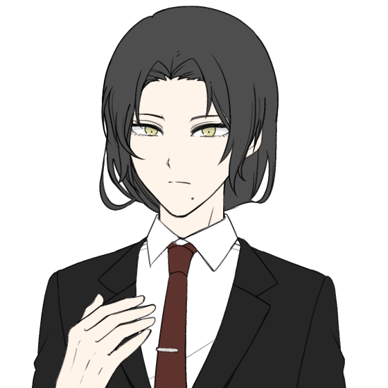
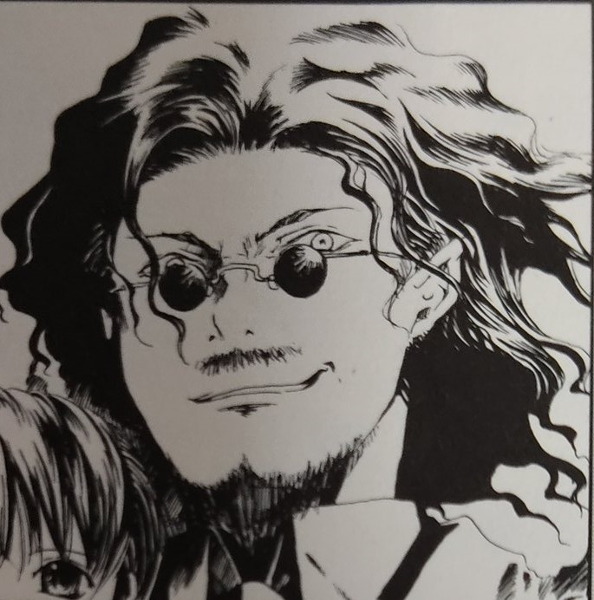
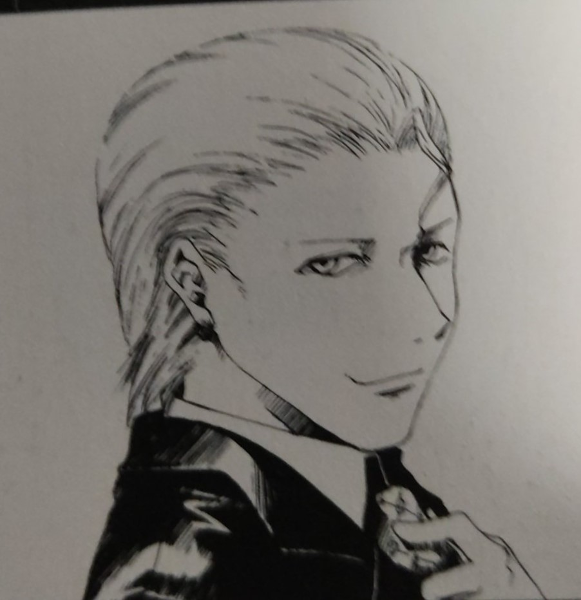

メインログ / 雑談ログ
キャラシート
PC1：新城りりか (キャラシート) PL：めいPC2：円藤照 (キャラシート) PL：ふろずん
PC3：蛙御蛇晴 (キャラシート) PL：がぶらす
目次
■オープニングフェイズ01 雪色の花
02 奈落の予感
03 反乱を企らむ者
■ミドルフェイズ
04 再開
05 託されたもの
06 深夜の来訪者
07 情報収集1
08 情報収集2
09 つかの間の……
10 立ち去る男
11 情報収集3
12 解き明かされた計画
13 蛙御蛇姉妹
14 cry for the moon
15 存亡を賭けて
■クライマックスフェイズ
16 雪の人形
■エンディングフェイズ
17 反乱を阻んだ者達
18 陽はまた昇る
19 つかの間の休息
20 人形と人と
プリプレイ
GM : ではPCの紹介から！PC1から順にお願いします！
新城りりか : はい！

新城りりか : 新城りりか、コードネームはバッドジョーカー！
新城りりか : ピンク髪ツインテールで制服のスカートを限界まで短くしてる頭ゆるゆるの女子高生です！
新城りりか : FHチルドレンだったけどわけあって自分のセルをぶち壊してFHを離反した後、霧谷くんに助けられてなんやかんやで恩を返すためにイリーガルになりました！
新城りりか : UGNからもFHからも恨みを買いまくってるけど、特に気にせずバット振り回して暴れてます！よろしくお願いします
GM : 顔に似合わず無頼系だ！ 今回はUGN存亡の危機なので自慢のバットで頑張ってほしいね…！
新城りりか : がんばりりか！
■PC1：新城りりか
ロイス：神崎真白(かんざき・ましろ) 推奨感情：庇護/不安
カヴァー/ワークス：高校生/指定無し
友人達と共にある生活を営みながら、UGNイリーガルとして生きるキミに、ひとつの"指令"が下された。
数日後にパレスＫホテルで開かれるUGN幹部会議を警護せよ、というものだ。
その中で起こった"彼女"との出会いが、キミを再び非日常の世界へと誘う──。
GM : ハンドアウトはこんな感じ！
新城りりか : ましましろーん…どんな感じになるか楽しみしみ
神崎 真白 : 楽しみね…GMもこれから動かしていく中でキャラを確立していくことになる…と思う！
GM : じゃあ次いきましょ！ PC2お願いします！
円藤 照 : はいな！
円藤 照 : 円藤支部長は、"エスケープキラー"の異名で恐れられるUGN本部査察部第4課(UG78頁)をかつて束ねていた人物です。
円藤 照 : 後の中枢評議員であり、今は査察部部長である"ミリオンサンズ"アッシュ・レドリック(上級91頁/HR36頁)の「UGNには改革が必要である」という考えに賛同し、彼の右腕として数々の離反者たちを裁いてきました。
円藤 照 : しかし、UGN評議員入りを目前にして彼が指示したと思われる「正義のための不正」を認めることができなかったため、彼の下を去りました。
円藤 照 : 査察部を辞めた後は、日本のK市を守る支部長として「自分の正義とは何なのか」を考えながら、のんびりと過ごしています。
円藤 照 : 戦闘では、自身を中心とした環状に浮かぶ魔眼を高速旋回することで、斬撃を生み出して攻撃します！ データ的には、範囲攻撃と防御反射を主な武器として、クライマックスでは敵の行動封じとか味方の支援とかの様々な切り札を持ってます！！
円藤 照 : RPでは、大人のヨユウで一歩引いたイケメン保護者ムーヴができたらいいなってカンジ！！ 以上！！
GM : かっこいい支部長！ 今回K市がいろいろ大変なことになるので…存分にイケメンしてくれ！
■PC2：円藤照
ロイス："ネームレス" 推奨感情：感服/隔意
カヴァー/ワークス：指定なし/UGN支部長
K市のUGN支部長として様々な難題を解決してきたキミは、
数日後に行われるUGN幹部会議の警備責任者を任された。
キミは、これまでキミの輝かしい経歴を支えてくれた情報屋……
コードネーム"ネームレス"に任務をサポートして貰うために連絡をとった。
GM : ハンドアウトはこんな感じ！どう見てもただの犬だが凄腕の情報屋につながっている”ネームレス”からタレコミが入るぞ
円藤 照 : 査察部時代から"ネームレス"とは付き合いがある設定にしたので、わんことも仲良くしていきたいね…🐶
GM : よろしくだワン…今回は査察部がらみのキャラが多い珍しいセッションだ
GM : では最後！PC3おねがいします！
蛙御蛇 晴 : へへい！

蛙御蛇 晴 : "天の恵み"(ｳｪｻﾞｰﾄﾗｯﾌﾟ)、蛙御蛇晴(あみだはる)ちゃん！
蛙御蛇 晴 :
FHの活動によって両親は死亡、妹は精神的なショックにより病院を出ることができない体になってしまったよ！
その際にこの子も致命傷を負ったけど、オーヴァードに覚醒！一緒に傘とレインコートもレネゲイドに感染して、彼女の体が如く操れるようになったよ！
蛙御蛇 晴 : この武装と、降りしきる魔眼の雨にちなんで"天の恵み"っていうコードネームがついたけど本人は皮肉にしか思ってないよ
蛙御蛇 晴 : UGNで査察官として働きつつ、妹の天を助ける方法を模索しているわね。
蛙御蛇 晴 : 普段から朗らかな笑顔だけど、本人曰く「それは傘が代わりに泣いてくれているから」らしいよ
蛙御蛇 晴 : FHはキツめに憎んでるよ

GM : ヒエッ…
蛙御蛇 晴 : 戦闘では、最速で動いて硬直をかますタイプになるかしら、火力も出す
蛙御蛇 晴 : ロールプレイはこう…ちょっと冷たいけどフレンドリーな口調って感じになると思う
蛙御蛇 晴 : 以上！
GM : 了解了解！ PC1ともPC2とも絡みが楽しみな設定だ…
■PC3：蛙御蛇晴
ロイス：反乱を企む者 推奨感情：好奇心/猜疑心
カヴァー/ワークス：指定なし/UGNエージェント
キミはUGNの本部エージェントだ。
近く行われるUGN幹部会議のため、K市を訪れていたあなたは、
唐突に同じ本部エージェントである一人の男からの連絡を受ける。
「重大な情報を入手した。お前に託したい」と。
GM : 公式のハンドアウトはこんな感じ。天道は元査察部の同僚で、仕事の合間を縫ってあなたの妹の病気の調査に協力してくれたりしていました。
蛙御蛇 晴 : 感謝しかない
天道 大地 : 元警察官の真面目で面白味に欠ける性格だが、それだけに信用のできる人間という感じですね！ そんな彼から今回は協力を依頼されます
GM : では自己紹介は以上。オープニングへ入っていきましょう
新城りりか : いぇいいぇい！
蛙御蛇 晴 : ﾖｯｼｬｲｸｿﾞｰ!
円藤 照 : わあい！
メインプレイ
シーン1 雪色の花
GM : PC1のオープニングです！登場侵蝕を5点上げてください。
system : [ 新城りりか ] 侵蝕値 : 30 → 35
K市
GM : 冬も近づくある日。
GM : あなたは、数日後に行われるUGN幹部会議の会場となるパレスKホテルへの道を急いでいた。
GM : 複雑な過去から、普段は現地のUGNと協力することも少ないあなただが、重要な会議が行われるという事情もあり、日本支部長たっての希望で今回の会議の警備へ参加することになっていた。
GM : 時計を確認すれば、警備隊長である円藤照との打ち合わせ時刻に遅刻しそうだ…！
GM : しかし、近道である雑木林を抜けて行けばまだ十分間に合うだろう。
新城りりか : 「え、やば～……もうこんな時間じゃん！」 左手につけた腕時計を確認して
新城りりか : 「……あ、でもこっち通れば間に合うかな。まあもし間に合わなくても何とかなるっしょ」
新城りりか : そんな風に焦ったりあんまり焦ってなかったりしながら雑木林に走っていきましょ！
雑木林
GM : では、あなたが雑木林を駆け抜けていくと……
GM : 林の深いところから、血の匂いが漂ってくる。
新城りりか : 「ん？……うわ、くさっ！？なにこれ！血！？」 一旦立ち止まって
新城りりか : 「えー、なんか誰か戦ってたりするー……？っていうか死んでるのかなぁ」
新城りりか : 気になるので匂いが漂ってくる方を見に行きます。
GM : では匂いの元は、雑木林の開けた部分へとつながっている。
GM : そこには、真っ白な和服に身を包んだ、ひとりの少女が倒れている。
GM : 少女は怪我を負っており、血が白い服と地面を赤く染め上げていた。
新城りりか : 「わ……！やばやばのやばじゃん。なにこれ意味不なんだけど」
新城りりか : 若干驚きつつ少女の方に近付いて行こう。
GM : では近づくと……その気配を察知したのか、少女が目を開く。

神崎 真白 : 「ん……」
新城りりか : 「あ、なんだー生きてるじゃん。大丈夫そ？」 少女の前に屈んで、安心したように笑いかける
神崎 真白 : 「……だ、大丈夫……だよ。転んだだけだから」 人が通りかかったことに少し戸惑いながら、そう返事をする
神崎 真白 : 確かにあたりは血に塗れているが、すでに出血している様子はない
新城りりか : 「えー！転んだだけでそんな風になるとかある！？ちょっと見してよ、ほらこんなべっとべとでー……」
新城りりか : 「……あれ、別に血が出てるわけじゃないっぽい？」 首を傾げて
神崎 真白 : 「ほ、ほんとに大丈夫だから…！ ほら、この通り」困った風に、ぴょんぴょんと跳ねてみせる。
新城りりか : 「めっちゃ元気じゃん！」
新城りりか : 「なーんだ、よかったよかったぁ」 笑いながら立ち上がる
神崎 真白 : 「うん、でも……」
神崎 真白 : 「心配、してくれたんだね……ありがとう」
新城りりか : 「いやそりゃ心配するでしょー、マジ血塗れだし」
神崎 真白 : 「え、そ……そっか、そうだよね……！」
GM : 少女はどこか嬉し気な表情を浮かべる。
神崎 真白 : 「ね……わたし、ましろ。神崎真白。あなたは？」
新城りりか : 「うん？あたし？新城りりかだよー」
神崎 真白 : 「りりか……新城りりか、それがあなたの名前なんだね……」
神崎 真白 : 「うん、覚えた」 雪のような無邪気な笑顔で
新城りりか : 「…………」
新城りりか : 「えー、どちゃくそにきゃわじゃん～！めっちゃ血で濡れてるのに笑顔かわいくてワロ～」 口元を手で隠しながら笑って
神崎 真白 : 「きゃ、きゃわ……？？」 初めて聞く言葉に困惑しているようだ
新城りりか : 「マジかわいくてびっくりしたって感じ？」
新城りりか : 「ふつーそんな血で濡れて笑ってたらもっとやばい感じに見えるでしょみたいな」
神崎 真白 : 「そ、それって褒めてるのかな……よくわからないけど、ありがとう……？」困惑しながらも、なんだか嬉しそうだ
新城りりか : 「褒めてる褒めてる～。ってか真白ちゃん、その服どうするの？なんか着替えとか無い感じ？」
神崎 真白 : 「ん……大丈夫、着替えなら、帰ったらちゃんとあるから……」
新城りりか : 「そりゃ家ならあるでしょー。でも問題なのは家帰るまでじゃない？そんなかっこじゃ周りびびっちゃうよ」
神崎 真白 : 「そ、そうだよね……気づかれないように戻らなきゃだよね……」
神崎 真白 : 今着替える服とかはないらしい
新城りりか : 「それな～。あ、でも気付かれないようにって家この辺なわけ？」
神崎 真白 : 「ち、違うけど……」
GM : 言われてみれば確かに……という感じで黙りこくってしまう。
新城りりか : 「じゃあ無理じゃん！えー、どうしよっかなー……っていうか……」
新城りりか : 「この血、どう見ても新しいし絶対なんかこの辺で誰か襲われてたとか戦ってたとかなんよね～……」 血だまりの前で屈んで小声で呟きながら
神崎 真白 : 「……！」
新城りりか : 「よく考えたらこの辺り留まってるの危険なんじゃね？って感じだしぃ……あんまりだらだら考えてるのもあれかー……」 ぶつぶつ呟きながら思案して
新城りりか : 「ねえ真白ちゃん、とりまあたしの行こうとしてるとこ一緒に行かない？雑木林抜けてすぐなんだけど、そこで着替え借りて帰るみたいな」 立ち上がって
神崎 真白 : 「え、えっと……」
神崎 真白 : 「ごめん！ 私、これからどうしても急がないといけなくて……！」
新城りりか : 「えー？急ぐって何！？そんなかっこで！？」
神崎 真白 : 「うん、どうしても……！ だから、ちょっと寄り道はしてられないの……気持ちは嬉しいけど……」
新城りりか : 「じゃあしょうがないかー。通報されそうで心配だけど」
神崎 真白 : 「ん、それは大丈夫……！ でも、心配してくれてありがとう……」
GM : 真白が急いでいるのは本当なようで、そわそわと今にも走り出しそうにしている。
新城りりか : 「おけおけ！別にいいけど、じゃあ林から出るまで一緒にいこ！」
新城りりか : 「どう見ても危険じゃんこれ。ここで暴れた奴絶対まだ近くにいるでしょ」 血だまりを指差して
新城りりか : 「いやあたしらずっとここでだらだら喋ってたから今更だけど」
神崎 真白 : 「……うん、ありがとう」逡巡しながらも、嬉しいような、不安そうな、複雑な表情で了承する
新城りりか : 「ってかあたしも一人だと不安みたいな？じゃあ行こ！」 って真白ちゃんの手を引いて歩き出そう
新城りりか : 「（今あたし結構UGNっぽいことしてるんじゃない？分からんけど）」
神崎 真白 : 「う、うん……！」 手を引かれてちょっとびっくりするが、ついていく。
新城りりか : そんな感じで真白ちゃんが目指してる方角に向けて、林から出ます！
新城りりか : 「あ、出れた出れた。何も無くてよかったー」 手を離す
神崎 真白 : 「ふふ……本当にありがとうね、心配してくれて……」
新城りりか : 「いーのいーの」 手を振ってる
神崎 真白 : 「うん、じゃあ、ね」名残惜しそうに手を振って
GM : 真白は、あなたと別れて歩き出す。
新城りりか : 「ん、じゃーね！もう血で滑って転んじゃだめだよ」
新城りりか : 「いや血で滑ることなんてそうそうないわみたいな！とりあえず気を付けてねー」 笑顔で手を振って見送る
神崎 真白 : 「……うん、りりかも気を付けてね！」
新城りりか : 「おけおけ～」 そんな感じで見えなくなるまで手を振って
新城りりか : 「ってか気を付けるも何も時間ピンチすぎ～……。どうやってもこれ遅刻確定なんですけどー……」 腕時計を青ざめた顔で確認する
新城りりか : 「…………」 腕組して空を仰いで
新城りりか : 「もうゆっくり行っていっか。お腹空いて来たし軽くラーメン食べよ～っと」
新城りりか : そんな風に林に戻らずぐるっと回る形で待ち合わせ場所まで行きます。寄り道しながら。
GM : では、立ち去るあなたの背に声が聞こえる。
神崎 真白 : 「りりか……これからしばらく……この町から離れていないと、ダメだよ」
新城りりか : 「え……？」 振り返る
GM : 声は確かに聞こえたのに、振り返っても、もう真白の姿はない。
新城りりか : 「え、幻聴じゃん、やば～……」 びっくりして固まってる
GM : 幻聴だったのか？ 疑問に答えるものはなく……空からは、はらりと雪が落ちてくる。
新城りりか : 「……でも、なーんか気のせいって感じもしないかも」
新城りりか : 「よく分かんないけど、さっきの血のことも気になるし……やっぱ急ごうかなー……」
新城りりか : 「……あっははは！！真面目かって！！」 落ちて来た雪を掌で触れながら、一人で受けたように笑って
新城りりか : とりあえずそのまま小走りでそこから立ち去っていきます。
GM : おけおけ、ではシーンエンド！
シーン2 奈落の予感
GM : 円藤さんのシーンです。登場どうぞ！
system : [ 円藤 照 ] 侵蝕値 : 36 → 41
UGN・K市支部ビル内 支部長室
GM : 君は、ゆったりとした椅子に腰かけ、分厚い参考資料の束に目を通しながら、部下の報告に耳を傾けている。
GM : デスクの横では、一頭の犬が場違いにも昼寝をしている。
GM : 議題は、数日後に控えたUGN幹部会議についてだ。
部下 : 「……以上の事実により、今回の幹部会議においてFHがなんらかの陰謀を企てている、と予想されます」
部下 : 「作戦の指揮者のコードネームは……”ロード・オブ・アビス”。それ以上のことは今はわかりません」
円藤 照 : 「"ロード・オブ・アビス"の陰謀、か。 ……私が警備責任者などというのは人選ミスだと思うが」
円藤 照 : 「殺ししか能のない男に警備を一任するとは、上層部はいったい何を考えているのやら……」
円藤 照 : 「……すまない。 君に愚痴を言っても仕方ないな。 事には全力で当たるだけだ」
部下 : 「ええ……よろしくお願いします」 元は本部エージェントとして恐れられたあなたを前に、部下もすこし収まりが悪そうだ。
円藤 照 : 「君たちにも負担を強いることになるかもしれないが、これは幹部たちに実力をアピールする絶好の機会でもある。 よろしく頼むよ」部下たちの緊張をほぐすために、柔和な笑みを浮かべる
部下 : 「はい、心得ています」
GM : と、そうやって打ち合わせをしていると、デスクの横で寝ていた犬の耳がびくりと動く。
"ネームレス" : 「なかなか大変そうですね、"果ての月"」
円藤 照 : 「ええ。 ネームレス殿のような愛苦しさを持ち合わせていれば、こうした苦労はないのでしょうが、なかなかどうして難しい」
"ネームレス" : 「これだけ重要な会議の警備とあっては、情報屋の手助けが必要なのでは？」
"ネームレス" : 含みを持たせた風に尋ねる。
円藤 照 : 「そうですね。そのつもりでした」
円藤 照 : 「……今すぐに調べてほしいことが二つ。 ひとつは"ロード・オブ・アビス"のこと」
円藤 照 : 「もうひとつは……、霧谷殿から派遣されてくるUGNイリーガルのことを調べてほしいのです」
"ネームレス" : 「イリーガル……ああ、彼女のことですね。承知いたしました。ふふ、日本支部長はよほど今回の会議に警戒を払っておられるようだ」
"ネームレス" : 「さて、"ロード・オブ・アビス"ですが……実は彼奴については私も個人的に調査を進めておりましてね」
"ネームレス" : 「奇妙なことにFHに探りを入れても全く馬脚を現さないのです。よほどガードが固いのか何なのか……」
円藤 照 : 「……ふむ。 あなたほどの情報屋が尻尾も掴めないと」
"ネームレス" : 「ええ、困ったものです」 尻尾を振りながら
円藤 照 : 「これは貧乏クジを引かされましたかな」あくまでヨユウそうに笑う
"ネームレス" : 「そこでこちらからもお願いなのですが、僭越ながら、この情報屋にお力添えをいただきたいのです」
円藤 照 : 「力添え、ですか？」
"ネームレス" : 「なに、難しいことではありません。ただ……」
"ネームレス" : 「ほんの少し、UGNの情報網をお貸しいただけないかと」
円藤 照 : 「なるほど、いいでしょう。 あなたのことは信頼していますし」
円藤 照 : 「しかし、ひとつ条件があります」
"ネームレス" : 「ええ、何なりと」
円藤 照 : 「では、交換条件を」
円藤 照 : 「……そろそろ、オリジナルの貴方とも酒を酌み交わしてみたいのですが、如何でしょう？ 今回の任務が終わった時にでも」小さく笑みを浮かべ
"ネームレス" : 「ふむ……」
"ネームレス" : 「……良いでしょう。この件は、その位の価値がある」
円藤 照 : 「ふふ。 では、そのように」
円藤 照 : 「たのしみにしておきますよ、"ネームレス"ではない、名も顔もある貴方と会うのを」
"ネームレス" : 「その情報は墓まで持っていって頂きますがね……では、交渉成立、ということで」
円藤 照 : 「はい。 ……ああ、UGNイリーガルの少女の情報については、彼女と会う日までに用意しておいていただきたく」
"ネームレス" : 「そちらの情報はすぐに手配します。では、これにて失礼いたします」
GM : ”ネームレス”はそう告げると、気の抜けた表情であくびをしてから、器用に支部長室の扉を開けて去っていく。
GM : 果たして”ロード・オブ・アビス”の思惑とは？ そして、霧谷が手配したというイリーガルとはどのような人物なのか。
GM : いくつもの不確定要素を抱えながらも、幹部会議の日は確実に迫っている……。
GM : シーンエンド
シーン3 反乱を企らむ者
GM : 晴ちゃんのOPだ！登場をどうぞ！
system : [ 蛙御蛇 晴 ] 侵蝕値 : 43 → 48
K市某所 UGN査察部詰所
GM : K市某所、UGN査察部の詰所。
GM : 近く、K市で行われるUGN幹部会議。
GM : 日本支部をはじめとした国内で活動するUGN幹部を集めたこの会議。当然、議論の内容に”不適切”なものがないか本部からの査察が入る。
GM : その大役の一翼を担うのがあなただ。
GM : ここのところは連日連夜、事前資料の査読などで資料室にこもり切りになっていることだろう。
蛙御蛇 晴 : 「～♪～～♬」
蛙御蛇 晴 : 「も～ちょっと～♪、人員割いても～♬、いいんだよ～♫」
蛙御蛇 晴 : 「……って言っても、日本に精通してる本部職員あんまりだし…しょうがないんだ…」ぶつくさ
GM : ……査察部局長、”ミリオンサンズ”ことアッシュ・レドリックの打ち出した「無能はいらん」という方針により、査察部は少数精鋭の体制を取っている。
GM : 彼の方針により査察部は大きな成果を上げることになるが、時にそのしわ寄せがこうして現れることもある……。
GM : 閑話休題。あなたが仕事をしていると、不意に着信の電子音が鳴る。
蛙御蛇 晴 : 「ん」電話取る
蛙御蛇 晴 : これ仕事用？
GM : これは……仕事用の電話ではないよ！プライベートで使ってるやつ
蛙御蛇 晴 : 了解！
蛙御蛇 晴 : 「はいもしもし、蛙御蛇です」
天道 大地 : 「久しぶりだな。蛙御蛇」
天道 大地 : 「俺だ。天道だ」

GM : 着信元はかつての同僚、天道大地だ。
蛙御蛇 晴 : 「アレ、天道さん！久しぶりです～、今どこ部署にいるんでしたっけ～」
天道 大地 : 「ああ、いろいろあって、今は長瀬の下だ。そっちはまだ査察部にいるのか？」
蛙御蛇 晴 : 「あ～長瀬さん。はい、私はまだ査察部にいますよ？割と性に合ってますから」
GM : 長瀬――長瀬明。あまたのUGN幹部の中でも、特筆すべき有力者として、本部の人間ならその名を知らぬものはない。
GM : 現在、UGNの意思決定機関である中枢評議会に欠員はないが、一部で引退が囁かれている人物も存在する。
GM : その後開いた枠に入る新たな評議員……その候補として急進派が推しているのは二人。
GM : 査察部局長アッシュ・レドリック。そして、もう一人が長瀬明である。
天道 大地 : 「そうか……妹さんの様子は、どうだ」
蛙御蛇 晴 : 「……ううん、進展は無いかな。意識はあるし、会話だってできる。でも…普通の生活に戻るのは厳しそう…」
天道 大地 : 「そうか……悪いな。異動してからあまり力になれなくて」
GM : 査察部の同僚であった天道は、あなたたち姉妹のことをよく気にかけていた。今もその気持ちに変わりはないようだった。
蛙御蛇 晴 : 「…しょうがないよ。長瀬さんの下ってことは、そっちも相応に忙しいだろうし」
天道 大地 : 「……」
GM : しばらく間があって、天道は話し出す
天道 大地 : 「蛙御蛇。忙しいところ、本当に申し訳ないが……ひとつ、頼みを聞いてくれないか」
蛙御蛇 晴 : 「んああ、天道さんの頼みなら聞きたいけど…内容だけいいかな？」
天道 大地 : 「ある筋から暗号化されたデータを入手した。それの解析を手伝ってほしい」
天道 大地 : 「詳しくは明日、会って話す。データはその時に渡す。……お前にしか頼めない仕事だ」
蛙御蛇 晴 : 「………わかった」
天道 大地 : 「……理由を聞かないのか」驚いたように
蛙御蛇 晴 : 「え、掘ってほしかったの？深刻そうだったから…」
天道 大地 : 「……いや、いいんだ。今はまだ話すべき時ではないからな」
蛙御蛇 晴 : 「そういうことなんでしょ？…天道さんがそんな…無駄に深刻そうに頼み事なんてしないだろうし。私に協力できることならさせて？」
天道 大地 : 「蛙御蛇……」
天道 大地 : 「……ありがとう。ごめんな」
GM : 天道は、待ち合わせの時刻と場所を告げる。
天道 大地 : 「……積もる話はあるが、こちらも時間が押しててな。じゃあ、切るぞ」
蛙御蛇 晴 : 「はい、それじゃぁ明日」
GM : ぷつん、と通話が切れる。
GM : 彼の真に迫った様子に、あなたはただならぬものを感じただろう。
GM : 明日、待ち合わせ場所で何が起きるのか？ 不安を抱えながらも、今日のところは山積みの仕事に戻るのであった……。
GM : シーンエンド
GM : オープニングが終わったのでHOロイスの感情を決定します。決まった人から宣言をお願いします！
新城りりか : 真白ちゃんで、〇好意/不安にしときます！
円藤 照 : ネームレスのロイスを信頼/隔意Pで！ 約束通りのサシのみが出来たら隔意がなくなる
蛙御蛇 晴 : 天道君に信頼/悔悟Pで獲得！
蛙御蛇 晴 : あれ、『反乱を企む者』と天道君はイコール…であってる…？
GM : 合ってるよ大丈夫！
GM : ではでは、進めていきましょうか
新城りりか : はーい
蛙御蛇 晴 : へへい
円藤 照 : はいなな～
シーン4 再開
GM : シーンプレイヤーはりりかちゃんです。円藤支部長も登場をお願いします。
system : [ 新城りりか ] 侵蝕値 : 35 → 40
system : [ 円藤 照 ] 侵蝕値 : 41 → 46
パレスKホテル ロビー
GM : 幹部会議の会場となるホテルのロビーに君はいた。
GM : リゾート系というよりは、ビジネスマンが利用するような形式ばったホテル。時間を潰すゲームコーナーなどもない質実剛健、悪く言えば面白味のない場所である。
GM : 仕事とはいえ、このような堅苦しい場所でじっとしているのは退屈かもしれない。
新城りりか : 「とうちゃーく。ってやっぱまあまあ遅刻じゃん！分かってたけど」 走ってホテルのロビーに入って来る
新城りりか : 「えーっと、どうすればいいんだっけ。警備隊長の人とかってどこにいるんだろ？とりあえず上の階？」
新城りりか : そんな風に辺りをきょろきょろしながらロビーを歩いていっている。
円藤 照 : 辺りをきょろきょろしている少女の姿を見つけると、憂いを帯びた目で腕時計に目を落としながら、エントランスのソファからスッと立ちあがる。
円藤 照 : そしてコツコツと革靴の音を響かせながら、少女に向かって歩み寄った。
円藤 照 : 「はじめまして。 ……"バッドジョーカー"新城りりか君」
円藤 照 : 少女に声をかけたのは穏やかな笑みを浮かべる美人であり、性別の判別もひとめでは付かないが、180cmはあろうかという長身と落ち着いた低い声が、彼は男性であると教えてくれる。
新城りりか : 「あ、はじめまして～」
新城りりか : 「え？ってか誰？」
円藤 照 : 「……私は"果ての月"円藤照。 今回のUGN幹部会議の警備責任者を任されている者だ」ネームレスから調べてもらっていたが、この少女が霧谷殿の紹介でか、と内心驚いている。
新城りりか : 「円藤照……責任者……って、えー？お兄さんが警備隊長ってこと？」
新城りりか : 「なんか思ってたよりわかーい。もっとおじぴだと思ってた」 意外そうに目を丸くして見つめてる
円藤 照 : 「……おじぴ？ 歳の話なら、今年で33になったが」
新城りりか : 「そうなの！？えー、見えない見えない！二十くらいかと思った！」
円藤 照 : 「……よく言われるよ」内心しゅんとしているが、笑顔で返す
円藤 照 : 「――それはともかくとして、何かイレギュラーな事態にでもあったのかな？ 十分程度の遅れがあったようだが」腕時計を指して
新城りりか : 「あっ、そうなのそうなの！別にあたし単に遅刻してたってわけじゃないから！言い訳させて！」
新城りりか : 「ちょっと人助けしてたんだよね～。そっちの雑木林でさ」
円藤 照 : 「人助けで遅れた、か。 実際にその言い訳を聞くのは初めてかもしれないな」
円藤 照 : 「とはいえ、特殊任務を負っていないUGNの人間であれば、十二分にありうる話か」
円藤 照 : 「それで、その人助けは無事に為されたのかな？ 」
新城りりか : 「為した為した！ちゃんと無事に林の外までおくってったからね」
円藤 照 : 「それはよかった」
新城りりか : 「だよね～。よく分かんないけどレネゲイド関係っぽかったし、なんかUGNっぽいことした感じで気分良い～」 にへっと笑って
円藤 照 : 「レネゲイド関係、か……もう少し詳しく話してもらえるだろうか？」
新城りりか : 「あーね！なんかさ、凄い血の跡があったんだよね。多分誰か戦ってたか襲われてたんじゃないかな～って思うんだけど」
新城りりか : 「詳しくはよく分かんないんだけど、近くに一般人っぽい子がいたからさ、とりあえず危険がないように外まで一緒に出たって感じ！」
円藤 照 : 「その一般人自身が襲われていたのではないのかい？」
新城りりか : 「えー？どうなんだろ、そんな感じのことは言ってなかったし分かんないなー」
円藤 照 : 「ふむ……。 この時期にそんな事件があったとは」あやしいが、分からないなら仕方ないな、と息をつき
円藤 照 : 「……ともかく、御苦労だったな、りりか君。 あとでその人物の似顔絵作成に付き合ってほしいのだが、構わないね？」
新城りりか : 「似顔絵？おけおけ～」
円藤 照 : 「たすかるよ」
円藤 照 : 「……さて。 りりか君。 君は本当は遅刻していないから、時間はあるんだ。 というのも、君には早めの集合時間を伝えておいたからな」
新城りりか : 「え、マジ！？なんで！？じゃあ全然焦る必要なかったじゃん！」
円藤 照 : 「なんで、という質問に関しては『君のことは調べていたから』という答えで返そう。 しかし、そう思うのならば、次からはもっと早い時間を伝えなければならない」笑って
新城りりか : 「えー、調べていたからって時間にルーズな女だと勝手に思ってた的な？心外なんですけど～」 ちょっとむすってして
円藤 照 : 「これは失敬。 だが、実際にこうして十数分の遅刻をしているだろう？ 」
新城りりか : 「それはしょうがないじゃん～……だって血の匂いしたんだから気になっちゃったんだし。照くんっていじわるな人～？」両手で指を絡めて弄りながら
円藤 照 : 「ふふ、それは否定しないが」
円藤 照 : 「と、話を主題に戻そうか。 ――君が時間にルーズだから、というのも早めに呼んだ理由のひとつではあるが、それよりも他の支部員が集まるまでに話しておきたいことがあって、それで早めの時間を伝えさせてもらった」
新城りりか : 「何それ、どゆこと？話しておきたいことって警備の打ち合わせ以外にある？」
新城りりか : 「あっ、りりかちゃんのこと個人的に気になってるみたいな？あっははは！だめだよ公私混同じゃーん！」 けらけら笑ってる
円藤 照 : 「私が、君を？」
円藤 照 : 「……ふふ、そうだな。 そうかもしれない。 実は君のことが気になってな」くすくすと笑って
新城りりか : 「えー、マジ！？冗談のつもりだったのに！」
円藤 照 : 「本当だよ。 それで……」
円藤 照 : 「いささか礼を失しているとは思うが、君の過去も調査させてもらった」
新城りりか : 「あたしの過去？あー、ってことはFHにいたってこととか？」
円藤 照 : 「ああ」
円藤 照 : 「……かつてはFHチルドレンとして数々のUGNエージェントを始末し、しかし諸事情からFHに反旗を翻すことになったFH側の離反者(ダブルクロス)」
円藤 照 : 「そして、今も少なくない数のUGNエージェントたちに恨みを持たれているUGNイリーガル。 それが君という人間だ」
新城りりか : 「それな～……。でもそれがどうかしたの？」
円藤 照 : 「どうかしたの、か。 意外にもそこに忌避感などは抱かないのだな。 こういった過去を探られた人間は、あまりよくない顔を見せるものだが」
新城りりか : 「いやー、別に隠してないしね。それにあたしのこと警戒して調べてても仕方ないんじゃないかなー的な？」
新城りりか : 「照くん警備隊長なわけだし、やっぱ知っときたかったんじゃないのみたいな」
円藤 照 : 「理解を得られてうれしいよ」
円藤 照 : 「……さて。 そこでひとつ聞いておきたいことがあるのだが、いいだろうか？」
新城りりか : 「ん、おけおけ。３サイズとかこの前のテストの点とかは無理みだけど、他のことなら聞いてもいーよ」
円藤 照 : 「ふふ、そんなことには興味がないから安心してほしい」
円藤 照 : 「……では、質問だ。 君がUGNに力を貸すのは、霧谷殿に対する義理から来るものなのだろうか？」
新城りりか : 「そうなるかな！霧谷さんに助けられなかったらあたしふつーに死んでたわけだし」
新城りりか : 「他にすることとか何もないし、働いて返そーみたいな」
円藤 照 : 「そうか」
円藤 照 : 「……君を疑ったこと、今一度詫びよう。 済まなかった。 これは私に染み付いたクセのようなもので」
円藤 照 : 「そして、りりか君。 改めて君に助力をよろしくおねがいしたい」少し屈んで、すっと手を差し出す
新城りりか : 「何それ謝られたんだけど！いーよいーよ、あたし疑われるとかもう慣れっこだし！っていうか憎まれて追い返されないだけ今回は全然マシみたいな」
新城りりか : 「ふふっ、じゃあ全力でがんばるから任せてよね。こっちこそヨロ～」
新城りりか : 握手に応じて嬉しそうにウインクする。
円藤 照 : 「ああ」
円藤 照 : 「それと……」しばらく握手した後、ぐっと手を引いて近寄る。
新城りりか : 「え？」 引っ張られ
円藤 照 : 「あまり大きな声では言えないが、私だけが君の事を知ってるのはフェアではないため、これも伝えておくことにする」
円藤 照 : 「私はかつてUGNで離反者(ダブルクロス)を始末する仕事についていた」
円藤 照 : 「UGNエージェントを始末したことがあるのは、キミだけではない。 ……そういった視線に晒されるという点でも、君より先輩という訳だ」
円藤 照 : 「困ったことがあったら、相談しに来るといい。 霧谷殿に頼るのが一番だとは思うが、彼は忙しいからな」すっと離れて背を向けながら、そう言う
新城りりか : 「えー！マジか！ってかUGNにもそういうのあるんだ！」 と驚いて大きな声を上げかけて口元を抑えて
新城りりか : 「おっけおっけ！ふふっ、なんだ優しいじゃん照くん！もー！ありがとー！」
新城りりか : えへえへ笑いながら軽く背中をぺちぺち叩いてる。
円藤 照 : 「まったく物怖じしないな、君は……。 これは心配無用だったかな」静かに笑う
新城りりか : 照くんに〇好意/劣等感でロイス取ります！
円藤 照 : りりかちゃんに好意/苦手Pでロイス取ります！
GM : OKだぜ！
system : [ 新城りりか ] ロイス : 3 → 4
system : [ 円藤 照 ] ロイス : 3 → 4
GM : では、二人は和やかに接触をすることができた。
GM : そのまま本題の打ち合わせに入ろうかという、その時。突然、ラウンジの空気が何の前触れもなく塗り替わる。
GM : ホテルの一般客たちが、次々にざわつき始めたのである。
新城りりか : 「……あれ？なんだろ、なんか騒がしくない？」 一般客の方へ顔を向けて
円藤 照 : 「そうだな、様子を見てこようか」と言って、一般客たちの方に歩いていこう
新城りりか : 「えー、じゃああたしも見に行こー」 ついていく
GM : では、喧噪の起きている場所を確認する。
GM : その中心には、ミラノ製のスーツに身を包んだサングラスの男。
GM : そして――その傍らにひっそりと立つ、幽霊を思わせる白い和服を纏った少女がいた。
神崎 高明 : 「ほぉら見てみろ真白ぉ？ みぃんなお前に注目してるぞ？ げはははは」
神崎 高明 : 男の方は何が面白いのか、周囲の反応を見て下品な笑みを浮かべているようだ。
GM : 明らかに異様な光景だが、少女……真白のほうは、いたって落ち着いているようで、寂しげな表情をしてはいるが、特に助けを求めたり取り乱したりといった様子はない。
新城りりか : 「あっ、真白ちゃんじゃん！何でここいるのー？」
新城りりか : おーいって笑顔で真白に手を振る
GM : 寂しげな表情をしていた真白だが、りりかの視線に気づくと、一瞬だけ薄い笑顔を浮かべる。
神崎 真白 : 「あ……りりか……」
GM : しかし、直後にハッとした表情で口元に手を当て黙り込む。
神崎 高明 : 「りりかぁ……？ おい、あれほど他人と喋るな、と言っただろうが、真白ぉ！？」
GM : 男はその視線に気づくと、わざとらしく大勢の前で真白を怒鳴りつける。
円藤 照 : 「(……不愉快な男だな)」
新城りりか : 「えっ、なになにびっくりした！なんで怒られてるの！？」
GM : 男のほうは何が気に食わないのかすごい剣幕で、今にもこちらに向かって飛び出してきかねない様子だが、真白がそれを制止する。
神崎 真白 : 「お父さん……言うこと聞くから……りりかとは、さっきお外で少し会っただけだから……！」
神崎 高明 : 「チッ……お前、姉に会いたいんだろうがぁ？ 言う事を聞かない悪い娘には、会わせられんなぁ？」
GM : 父親がそう言うと、真白のほうは完全にしゅんとして黙ってしまう。
新城りりか : 「なんか複雑な家庭な感じ……？父親ってあたしいたことないからよく分かんないんだけど……」
新城りりか : 「とりまパパさんさ、あんま騒がしくしない方が良いんじゃない？ほら、他の人とかびっくりしちゃってるし」近づきながら困ったように笑って周りを手で示す
神崎 高明 : 「ああん？ 人んちの教育方針に口出すってのか？ いい度胸してるじゃねぇか嬢ちゃん」
神崎 高明 : 「……まあいい、その度胸に免じて今回はこのくらいにしといてやる」
GM : 冷静に対処するあなたを見て興が覚めたのだろうか、父親はそれ以上ヒートアップはしない。
新城りりか : 「あ、なんだー良い人じゃん！」
円藤 照 : 「……本気で言っているのなら、君は道徳を習った方がいいだろうな」小声
新城りりか : 「えー、だってなんかよく分かんないけどこのまま喧嘩になったりしそうって思ったし……」 小声で
円藤 照 : 「この場は確かに収まったが、こういった家庭が外出先で出すトラブルは氷山の一角でしかない可能性が高い。 つまり、家ではこれ以上に酷いと考えられるぞ、この男……」
円藤 照 : 「かといって、我々UGNが関与するような話ではないが……」
新城りりか : 「んー……それはそうかも……」
新城りりか : 「（ってか、うわ偶然って思って話しかけちゃったけど、さっきの見た感じ迷惑だったりする的な……？）」
新城りりか : 真白ちゃんの方を見つめて、なんかごめんねって風に小さく手を合わせてる。
神崎 真白 : 「……」 それを見て何を言うでもなく、しかし申し訳なさそうな表情をしている。
神崎 高明 : 「あぁ、興が醒めちまったな。おい、行くぞ真白」
神崎 高明 : 「ああ、それから嬢ちゃん……二度と真白に近づくんじゃねぇぞ？ あ？ げははははは」
GM : 父親は再び下品な笑みを浮かべながら、真白を連れてエレベーターの中へと消えていく。
新城りりか : 「……な、なんか……」 呆然とエレベーターを眺めて
新城りりか : 「や、やば～～～～～～～～……！え、あれ親子！？一瞬過保護かな？って思ったけど謎の犯罪臭が凄いんですけど！やっば……！！」 口元を手で覆って
円藤 照 : 「あれが親子だとはとても思いたくないほど酷かったな」
円藤 照 : 「……確認しておきたいのだが、さきほどの白装束の少女の話から察するに、彼女が君が助けたという一般人で間違いないだろうか？」
新城りりか : 「あ、それな！そうなんだよね、真白ちゃんっていうの」
円藤 照 : 「真白、か。 このパレスKホテルの宿泊者だったらしいが、なんらかの因果を感じるよ」
新城りりか : 「うーん、偶然かと思ったけど、そう言われるとそんな気もする……。単になんか心配になってきちゃっただけかもしれないけど……」
新城りりか : 「……行っちゃったし、とりま打ち合わせの続きする？」
新城りりか : でも考えても仕方ない問題かもだし、と切り替える。
円藤 照 : 「そうだな。 この時代に白装束の少女を『一般人』と称した君の言語能力に対して異議を唱えるのは後に回すとしよう」笑って
新城りりか : 「えぇ～？そこ別に弄らなくてもいいじゃん、も～」 笑い返して
円藤 照 : 「ふふ。 では、気を取り直して打ち合わせ室まで案内(エスコート)するかな」とエレベーターに向かおう
新城りりか : 「は～い」 ついていく
GM : 白装束の少女……真白と、その父親らしき男。謎を残しながらも、あなたたちは幹部会議の打ち合わせへと向かっていった。
GM : シーンエンド。
シーン5 託されたもの
GM : シーンプレイヤーは晴ちゃんだ！登場どうぞ
system : [ 蛙御蛇 晴 ] 侵蝕値 : 48 → 53
K市 路地裏
GM : 深夜、K市の路地裏。あなたは壁にもたれかかったまま、天道のことをひとり待っていた。
GM : いつもは待ち合わせの30分は前に現れるはずの天道が、今日は一向に現れない。
GM : 時計の針は、じきに約束の時刻を指そうとしている。
蛙御蛇 晴 : 「……遅いな」
蛙御蛇 晴 : 電話してみよう
GM : では、電話をかけようと端末を手に取る。時刻は、ちょうど約束の時間を指した。
GM : その時だ。
GM : 路地裏に、真っ黒い人影が現れる。
GM : 天道だ、と背格好からあなたは瞬時に判別する。
GM : しかし……何か様子がおかしい。
天道 大地 : 「ぐ……」 どこからか風音を立てながら、よろよろとこちらに歩みよってくる。
蛙御蛇 晴 : 「天道さん…？」
蛙御蛇 晴 : 可能なら受け止めよう
GM : よく見れば、黒のコートの下に覗くワイシャツが、赤黒く染まっている。
GM : 天道はあなたの姿を認めると、力尽きるように、あなたの胸の中へと倒れ込む。
蛙御蛇 晴 : 「えっ、天道さん？何、血……」
天道 大地 : 「す……まん……とんだドジを……」
GM : 喉元からヒューヒューと風音を立てながら、聞き取れるか聞き取れないかくらいの声を必死に出している。
蛙御蛇 晴 : 「いいです、喋らないで。今すぐ治療に向かうから」
天道 大地 : 「……めだ……時……が……無……」
GM : 震える手でポケットから何かを取り出し、あなたに渡そうとしている。
蛙御蛇 晴 : 「ねぇ何してるの？馬鹿、早くいかなきゃ、時間が無いなんて…」それはすぐに受け取るけど…
GM : 天道が取り出したのは、一枚のメモリーカードだ。弱弱しく、しかし、確かにあなたに手渡す。
天道 大地 : 「これを……K市……長へ……！」
蛙御蛇 晴 : 「わかった、わかったから！もう喋らないで！」
GM : 天道は言われた通り喋るのをやめ、すぐに気を失う。
蛙御蛇 晴 : 「っ、死なないで…死なないで…！」〈ディメンジョンゲート〉でK支部へ！
GM : ゲートを展開する。
system : [ 蛙御蛇 晴 ] 侵蝕値 : 53 → 56
GM : 展開しながら、その場に接近する殺気に気づく。
GM : 一人ではない、最低でも数人、おそらくは数十……夥しい数の殺気が、その場に迫っているのを感じる！
蛙御蛇 晴 : 「は…？何この数……とにかく！」天道君を引きずって逃げられるかしらね
GM : 逃げられます！支部に移動したらこのシーンは終了になる！
GM : 殺気が到達する前に、ゲートが現れる。あなたは天道を引きずって間一髪、そこに駆け込む。
GM : 閉じていくゲートの隙間から一瞬だけ、淡く白い光を放つ異形が、こちらを睨んでいるのを見た……。
GM : シーンエンド。
シーン6 深夜の来訪者
GM : シーンプレイヤーは支部長！必須の登場は晴ちゃん。りりかちゃんも登場推奨です。
GM : 登場どうぞ！
system : [ 新城りりか ] 侵蝕値 : 40 → 45
system : [ 円藤 照 ] 侵蝕値 : 46 → 51
system : [ 蛙御蛇 晴 ] 侵蝕値 : 56 → 61
K市支部
GM : 朝……と呼ぶにはあまりにも早すぎる時間。
GM : K市支部で睡眠をとっていた円藤支部長のもとに、突然の来訪者が現れる。
GM : それは、怪我人を抱えたUGN査察部のエージェント……蛙御蛇晴であった。
蛙御蛇 晴 : 「ハァッ、よし、ここなら…」
蛙御蛇 晴 : 「そこの守衛さん！こちら査察部"天の恵み"、ホワイトハンドの要請をお願いします！」腕章を見せて行動させよう
GM : 「はっ、はいっ！」
GM : 腕章を見た支部員は、事情を察し慌てて医療チームに連絡を入れる。
GM : 静かだった支部内が、慌ただしく動き出す……。
GM : その喧噪は、やがて仮眠室にも届く。
K市支部 仮眠室
円藤 照 : 「ん……。 こんな夜更けに、何事だ……？」浅い眠りだったため、すぐに目を覚ましてベッドから這い出す。この支部は前支部長の意向で寝具に資金を使っていたため、ベッドと布団はふかふかだ。
円藤 照 : 「りりか君は……、うん。 しっかりと眠れているな。 支部の事情で起こすのも悪いか」近くのベッドにある寝顔を見て、布団をかけなおして微笑んでから仮眠室を出る。
円藤 照 : そして、扉を出てすぐ傍にいた忙しそうな支部員に声をかける。
円藤 照 : 「こんな時間に何事だ？」
支部員 : 「そ、それが……査察部のエージェントが怪我人を連れて飛び込んできまして……！」
GM : 支部員は医療チームの分室がある方を指さして言う。
円藤 照 : 「査察部の……？」
円藤 照 : 「……まったく今月はよくないことが続くな」
円藤 照 : 「すぐに私もそちらの様子を見に行くとするよ。 手間を取ったな」そう言って支部員を解放しよう
支部員 : 「はい、お手数おかけします」そう言って支部員は仕事に戻っていく。
新城りりか : 「……え～、なんかやばそうな感じ～？」 今ので起きたのか寝ぼけ眼擦りながら仮眠室の扉から顔を出す
円藤 照 : 「……りりか君。 済まない、起こしてしまっただろうか？」
新城りりか : 「起きた起きた、騒がしくなってたっぽいし」
新城りりか : 「でも別に謝んなくていーよ。ってか行かなくていいの？」 靴を履いて何となくついていく様子
円藤 照 : 「そうだったな。 ……君には存分に寝ていてもらって構わないのだが」ついてくるのか？ って顔
新城りりか : 「目覚めちゃったし、ってかこんな忙しそうにしてる中で寝てたらなんかこいつめっちゃ図太いって感じじゃん！ほら行こ！」
円藤 照 : 「ん、そうか。 では共に行くとしよう。 ホワイトハンドの医務室はこちらだ」そう言って先導して早歩きしていこう
新城りりか : 「は～い」 ついてくついてく
K市支部 医務室
GM : 医務室は、急患の受け入れに大わらわの様子だ。
GM : 奥にある集中治療室は扉が閉ざされランプが点灯しており、天道はこの中で治療を受けていることがうかがえる。
蛙御蛇 晴 : 集中治療室の手前の長椅子に、傘を差した少女が座っている。
蛙御蛇 晴 : 傘の内側では黒い雨が絶えず降り注ぎ、床に着いた時点で消滅している。
蛙御蛇 晴 : 「ああ、支部長さん…夜分遅くにごめんなさい」
円藤 照 : その様子を見て、予想外の来客に驚きながら
円藤 照 : 「……久方振りだな、晴君。 願わくばもっと別のカタチで再会を祝いたかった」
新城りりか : 「あ、知り合いなんだー。ってめっちゃ雨降ってるけど、どうなってるのこれ？」 来客というより傘の中で黒い雨が降ってることにびっくりしてる
蛙御蛇 晴 : 「仕組みは後で教えたげるね。私もこんな形でここに来たくはなかったんだけど…」
円藤 照 : 「ケガ人は誰だ？ 誰に襲われた？」
蛙御蛇 晴 : 「私の元同僚で、天道って人。相手はわからない…多分大勢」
蛙御蛇 晴 : 「で、彼から言われたんだけど…これを貴方にって」メモリだし
円藤 照 : 「天道君から、私に贈り物…？」受け取る
新城りりか : 「パソコンとかに挿すやつじゃん」
円藤 照 : 「恐らくは情報が入っているのだろうが、しかし何故、私に…？ 他に適任は山ほどいるハズ…。 それこそ、晴君も信頼に足る優秀なエージェントだ」
蛙御蛇 晴 : 「わかんない…喋るなって言ってんのにどうしてもここにって…死なないで…」雨足は強くなる
新城りりか : 「いや適任も何も、ふつーに照くんに見せたい情報ってだけじゃん？わざわざ持ってきたってことはさ～」
"ネームレス" : 「それは……おそらく私の存在を踏まえてのことでしょうね」
GM : 医務室に、突然場違いな犬が現れる。
新城りりか : 「なにこれわんこいるし喋ってる！やば、かわいいけどなんで？」 屈んで犬を見る
円藤 照 : 「ネームレス殿。いつの間に」
蛙御蛇 晴 : 「ネームレス…貴方が？」きょとん
"ネームレス" : 「今回の事件がK市という地に関するものだったこと、元監査部で一定の信頼がおける人間を頼りたかったこと、そういった要因もあるとは思いますが」
"ネームレス" : 「一番は、外部の情報屋と強いコネクションを持つ人間を頼りたかったのではないかと。あくまで推測ですが」
新城りりか : 「はぇー、よく分かんないけどかしこいわんちゃん」 勝手に頭撫でてる
蛙御蛇 晴 : 「……すごい有名な情報屋さん、だよ(チルドレンの子かな…？)」
円藤 照 : 夢を壊したくないから、この犬はアニマルテイマーで操っているだけということは黙っておこうという顔
"ネームレス" : 「新城りりかさん、ですね。よろしくお願いします」尻尾を振りながら
新城りりか : 「マジ？情報屋さんなんだ！」
新城りりか : 「あ、そうそう、そうなの！言いそびれてたけど新城りりかでーす。イリーガルだけどヨロ～」 ネームレスわんこを撫でながらゆるい笑顔で晴ちゃんに名乗る
"ネームレス" : 「こう見えてその筋では少しは名が通っているのですよ。名無しですが」撫でられて気持ちよさそうにしている
蛙御蛇 晴 : 「私はUGN本部査察部一課、”天の恵み”蛙御蛇晴。よろしくね、りりかちゃん」
新城りりか : 「晴ちゃんかー……って、本部ってことはめっちゃ偉い感じじゃない？えー、ちっちゃいのにえら！」
蛙御蛇 晴 : 「ふふ、実はこれでも成人済みなんだ。レネゲイドの影響で成長しなくなっちゃったみたいでね？」
新城りりか : 「えー！！そうなの？じゃあ古代種的なやつじゃん！すご～。あんまり見たことな～い」 立ち上がって晴ちゃんをすげーって目で眺めてる
蛙御蛇 晴 : 「ん～、そこはどうなんだろうね？ああ、それで…支部長さん、データの方はよろしくね。天道さん曰く、暗号…だとからしいんだけど」
円藤 照 : 「ふむ、暗号化……」
円藤 照 : 「見るのにも時間がかかりそうだな。 解読を待つ間、天道君が巻き込まれた事件についても調べた方がいいだろう」
円藤 照 : 「……ネームレス殿、さきほど『今回の事件がK市という地に関するものだったこと』と仰っていましたが、彼が巻き込まれた事情をなにか御存知で？」
"ネームレス" : 「此度、K市で開かれるUGN幹部会議。それをターゲットに、”ロード・オブ・アビス”が何らかの企てをしていることはご存じでしょう」
円藤 照 : 「ええ、もちろん。 二人には説明が必要なところですが」
蛙御蛇 晴 : 「…？」
"ネームレス" : 「ああ、お二人はK市の支部員ではないからご存じありませんでしたね」
新城りりか : 「打ち合わせの時になんか危ない的なことは聞いたけど、そいえば詳しくは知らないかも」
"ネームレス" : 「”ロード・オブ・アビス”…現在のところ、すべてが謎に包まれた存在です。現時点で、私が彼について把握しているのはただ二つ」
"ネームレス" : 「ひとつは、彼がFHエージェントであること。もうひとつは……」
"ネームレス" : 「天道大地、彼が”ロード・オブ・アビス”に内通していたこと。このふたつだけです」
蛙御蛇 晴 : 「は………？」
新城りりか : 「幹部会議なんだからそりゃ狙うのはFHだよね～……でも内通？って何？その人UGNエージェントとかじゃないの？」
"ネームレス" : 「恥ずかしながら、支部長殿にお力添えを頂きながら、判明したのはこれだけで……」
円藤 照 : 「ふむ。 天道君は"ロード・オブ・アビス"とつながっていた……」
新城りりか : 「いやわんちゃんがそんな調べてるだけで十分って感じだけど～……」
新城りりか : 「え～、よく分かんない～。なんでそんな人が怪我負ってて、情報入ったメモリ渡してるの？」 天道のこともよく知らないから余計に分かっていない様子
蛙御蛇 晴 : 「いや、いや…そう、それなら、その通りで…天道さんはどう…なんで攻撃を…？その…"ロード・オブ・アビス"から逃れて来たとかじゃないの？」
円藤 照 : 「彼が"ロード・オブ・アビス"と共謀してUGNを滅ぼそうとしているのだとしたら、私にメモリチップを預ける理由もない」
円藤 照 : 「つまり、彼は"ロード・オブ・アビス"に協力しているように見せかけ、その実、計画を阻止するために動いていた二重スパイだったのでは？ ――そして、その事実がバレて、狙われることになったと」
新城りりか : 「なるほどね！絶対そういうことじゃん！」
蛙御蛇 晴 : 「……………いえ、いえ…梯子を外すようでごめんなさい、支部長さん。そのデータの解析が終わるまで…答えは出せない。そうだよね、ネームレスさん？」
蛙御蛇 晴 : 「少し、取り乱しちゃった」
"ネームレス" : 「流石査察部のエージェント殿。その通りです」
"ネームレス" : 「ただ、まあ、情報屋からは、安易に希望的観測は申し上げられませんが……」
"ネームレス" : 「……彼があなたに対して示していた友情、そこに嘘はなかっただろうと、そう推測します」
"ネームレス" : 「それから、メモリの解析についてですが……こちらに預けて頂いてもかまいませんか？ 支部長殿」
円藤 照 : 「ええ。 そちらにおねがいします」
新城りりか : 「えっ、出来るの？天才犬じゃん」
蛙御蛇 晴 : 「(天才犬…)」
円藤 照 : 「世界は広いのだよ、りりか君」ふふと笑い
新城りりか : 「マジかー、やばいなー……」
"ネームレス" : 「専門外ではありますが、K市支部内で解析するよりは早いかと」
新城りりか : 「しかも専門外だし。偉すぎ」
円藤 照 : 「……それはそれとして、晴君」
蛙御蛇 晴 : 「…なに？」
円藤 照 : 「アッシュ・レドリック殿の方針で、優秀な人間しかいない査察部の一員である天道君がこうも容易く再起不能に追い込まれるというのは、思っているよりもずっと深刻な事態が水面下で進行しているのかもしれない」
円藤 照 : 「だから、信頼できる優秀なエージェントである貴方にも、是非とも力を貸してほしい」
円藤 照 : 「……と思うのですが、今の私は貴方よりも立場が下。 もちろん断っていただいても構いません」笑って
蛙御蛇 晴 : 「はは……もちろん。むしろこっちからお願いしてたかも。天道さんをあのままになんてできない。裏切り者だったとしても、そうじゃなくても」
蛙御蛇 晴 : 「これ以上私から奪わせない。FHを、FHであることを許さない。絶対に…絶対に…絶対に…」
新城りりか : 「なんか……なんか顔怖くない？晴ちゃん顔怖くない！？」 ぎょっとして
蛙御蛇 晴 : 「……………」
蛙御蛇 晴 : 「よし、ちょっと上向けたかも」頬ぺしぺし
円藤 照 : 「(今はこうして感情の捌け口を作って、仕事量で悲しみなどを忘れるようにするべきだと思ったのだが、これが正解だったかはまだ分からないな……)」
円藤 照 : 「では、改めてよろしくたの……お願いしますね、晴君。……晴殿？ 」元部下の上司という関係になったことがないので、口調が定まらないまま右手を差し出す。
蛙御蛇 晴 : 「晴君でも晴ちゃんでも何でもいいよ別に。立場が上って言ったって、直属の上司とかそういうんでもないしね？」手を取る
円藤 照 : 「それなら、遠慮なく晴君と呼ばせてもらおう。 そちらの方が私としては好ましい」握手して笑う
蛙御蛇 晴 : 「はーい、よろしくね！りりかちゃんも調査には関わるの？」手を差し出しながら
新城りりか : 「えー！！！」 びくって肩震わせて
蛙御蛇 晴 : ここにいるけどそこんとこどうなん？の顔
新城りりか : 「（これあたし握手してもいい感じ？FHのことすっごい憎んでるっぽいんですけどー……）」
新城りりか : 「えーっとね……」 視線が泳いで
新城りりか : 「（ま、いっか！！）」
新城りりか : 「もちもち！元々あたし幹部会議の警備するために呼ばれたから！」
新城りりか : どうしようもないことだし深く考えなくてもいっかと思い、笑顔で握手に応じる。
蛙御蛇 晴 : 「はい、よろしく～！」握った手を軽く振ってこたえる
新城りりか : 「うぇいうぇ～い！」 合わせて楽し気に手を振り振りしてる
円藤 照 : 「(晴君の侵蝕値などのデータは、査察部時代に目にした覚えがある。 確か平均よりも高かった。 また激しく感情が揺さぶられるような出来事は避けたい。 この二人の関係については、私が見ておかなければな…… )」
GM : K市内で立て続けに起こる、不可思議な出来事。偶然にも引き寄せられた三人は、幹部会議を狙うロード・オブ・アビス”の謎に挑むことになる。
GM : 一体、彼は何を企てているのだろうか……。
GM : シーンエンド。
シーン7 情報収集1
神崎高明について
<情報:UGN、裏社会> 6
長瀬明について
<情報:UGN、裏社会> 8
ロード・オブ・アビスについて
<情報:UGN、裏社会> 7
神崎真白について
<情報:UGN、K市> 7
GM : 調査する方、登場をお願いします！
system : [ 新城りりか ] 侵蝕値 : 45 → 50
system : [ 円藤 照 ] 侵蝕値 : 51 → 56
system : [ 蛙御蛇 晴 ] 侵蝕値 : 61 → 66
GM : ではHO順に判定していきましょう、りりかちゃんからお願いします！
新城りりか : 真白ちゃんについて調べます！技能どっちも無いので関係無いけどK市の方で調べましょ
GM : どうぞ！
新城りりか : 2dx(2DX10) ＞ 6[3,6] ＞ 6
新城りりか : 財産点一点使いましょ！
GM : では1点消費して成功！
system : [ 新城りりか ] 財産点 : 9 → 8
GM : 演出とかするかな？
新城りりか : 演出とかはとりあえず無いけど、購入判定しときます！応急手当キット狙いで！
GM : おっけおっけ、そちらもどうぞ！
新城りりか : 2dx 目標値は８(2DX10) ＞ 5[2,5] ＞ 5
GM : とどかんかった！
新城りりか : 足りない！けどまだ情報判定に使うかもしれないので財産点は使わずそのまま失敗で！
GM : OKです、では開示
新城りりか : わぁい
神崎高明の娘。年齢は16～17歳。
高明は結婚していない。にも関わらず、彼には幾人かの娘がいることが知られている。
真白は高明の実験によって創られたクローンの可能性が高い。
GM : こんな感じ！
新城りりか : 血が…繋がってない！！
新城りりか : 似てないと思ったのよあたしは
新城りりか : 演出とかは特に無しで！次の人いってもらいましょ
GM : 了解！では次は支部長の番だね
円藤 照 : ◆長瀬明について を〈情報：UGN〉で調べます！ コネ：情報収集チームも使っていきまし！！
GM : 判定どぞ！
円藤 照 : 2dx＋3 難易度8(2DX10+3) ＞ 3[2,3]+3 ＞ 6
円藤 照 : 出目しょっぱ。財産点2点使いますよ。
GM : みんな出目がきびしい、では2点消費して成功
円藤 照 : ついでに購入判定で応急手当キットも狙っておきまし！
GM : どぞ！
円藤 照 : 2dx+1 難易度8(2DX10+1) ＞ 7[1,7]+1 ＞ 8
GM : 買えたじゃん！成功です
円藤 照 : ぴったり賞で応急手当キットを入手やよ～
円藤 照 : 調査などの演出はないですが、りりかちゃんとちょっと話したいことがあります！
GM : おっけ、とりあえず開示します
今、最も力のあるUGN幹部のひとり。
北海道のS市に拠点を持っており、普段はそこを中心に活動している。
10年前にUGNに入って以来、その抜きん出た能力とカリスマでさまざまな事件に対処してきた。
だが、最近は黒い噂もつきまとう。
K市で行われる幹部会議にも参加する予定。
GM : 話すっていうのはふたりで話す？晴ちゃんとかNPCもいたほうがいいのかな
円藤 照 : 二人きりが望ましいですね！
GM : おけおけ
K市
新城りりか : 「……お」
新城りりか : 翌日、調査のために一人K市の街に出ていた新城りりかはある店の前で足を止める。
新城りりか : 「え～、タピオカじゃ～ん。こんなとこにもあったんだ」
新城りりか : 「なんか最近潰れがちだったから見たの久々な気がするー。やばー」
新城りりか : そこはタピオカ屋だった。数ヵ月前までは友達と割とよく行っていたが、ここ最近はあまり立ち寄ることが無かった。
新城りりか : 「たこ焼きとかの気分だったけどせっかくだし買おっと。すみませーん」
新城りりか : 調査の途中だったが寄り道し、適当に注文する。
新城りりか : 「えー、うまー。美味すぎて美味いしか出てこな～い」
新城りりか : 太いストローに口を咥えてミルクティーを味わいながら、店からふらふらと出ていく。
新城りりか : にこにこと笑顔を浮かべており、調査中ということも忘れてしまってるかのようだった。
円藤 照 : 新城りりかはタピオカを片手に店を出ると、そこから出てすぐのところにあるベンチに、見覚えのある人影を見つける。 酷く場違いなかっちりしたスーツ姿の男だ。
円藤 照 : 「……ん？ りりか君か？ 」その男もタピオカを片手に持ちながら、新城りりかに声をかけてくる
新城りりか : 「あれ、照くんじゃん。ってかタピオカ買ってるし」 笑顔のままそちらへと歩んでいく
円藤 照 : 「ふふ、奇遇だな。 君もタピオカが好きなのか？」なお支部長のタピオカは抹茶ミルク味
新城りりか : 「好きと言えば好きな方！」
円藤 照 : 「ふむ。 ハッキリしないが、『大好物というほどではないがあったらうれしい程度の好き』ということだろうか」
新城りりか : 「そうそう、多分そんな感じ」
円藤 照 : 「なるほど。 段々と君の言葉も読み取れるようになってきたらしい」
円藤 照 : 「……ああ、そうだ。 これは丁度いい機会か。 君にしておきたい話があったんだ」と隣の席の汚れを払う。 ここに座れ、ということらしい。
新城りりか : 「え、なになに？何の話？」 隣に勢いよく座る
円藤 照 : 「……それはだな」勢いよく座ったからベンチが揺れてちょっと驚きながら
円藤 照 : 「晴君のことだよ」真剣なトーンで話しはじめる
新城りりか : 「晴ちゃん？……が、どうしたの？」 そちらの顔を見つめて
円藤 照 : 「彼女、『FHを許さない』と言っていただろう？」
新城りりか : 「あ～、言ってた言ってた」
円藤 照 : 「あれは大事な人をFHに奪われた過去に起因するものだ」
円藤 照 : 「事件の詳細についてはプライバシーの観点から伏せさせてくれ。 ――それでだ」
円藤 照 : 「……これは話というよりも、おねがいだな」
円藤 照 : 「彼女には、りりか君が元FHであることを伏せておいてほしい」
新城りりか : 「え、なんで？」
新城りりか : 「あー、やっぱあれ？任務に支障が出るからみたいな？」
円藤 照 : 「それもあるが、それより彼女の精神状態が心配でな……」
円藤 照 : 「大事な人を失い、今度は友人である天道君を失いかけ、彼女の精神は不安定な状態にある。 ……そんな不安定な精神に追い打ちをかけるような事は避けたいのだ」
新城りりか : 「追い打ちかー……。まああたしも昨日の感じ見て言い出すタイミング無くした感じだけど……」
新城りりか : 「でもあたし別に隠してるわけじゃないしなー。ってか伏せててもその内ばれるんじゃない？」
円藤 照 : 「りりか君のことを怪しむようなことがあれば、彼女の能力を考えれば、バレるのも時間の問題だとは思う。 が、"ロード・オブ・アビス"の調査に心が向いている今なら、君のことを積極的に調査しようとは思わないハズ。 怪しまれなければ、時間は稼げるだろう」
円藤 照 : 「……少なくとも、心の支えである天道君が回復するまでは伏せておきたい」
円藤 照 : 「……だから、極力でいい。 おねがいできないだろうか？」
新城りりか : 「ん～～～～～……」
新城りりか : 自分の胸の上にタピオカのボトルを置いて、ストローを咥えて虚空を眺めながら少し考えた後、
新城りりか : 「……おけおけー。分かったよ、とりま伏せてればいいのね」
新城りりか : 「ってか、あたし別に晴ちゃんの大事な人殺して直接恨み買ってるわけじゃないし、知られてても案外大丈夫なんじゃね？って気もしてるんだけど」
新城りりか : 「照くんがそこまで気にしてるなら、じゃあ言う通りにしとくよ」
円藤 照 : 「理解に感謝する。 ……君の言う通り、晴君ならば君の境遇に理解を示してくれるだろうとも思うのだが、不安な要素は取り除いておきたい質でな」
新城りりか : 「いーよいーよ。あ、でもじゃああたしのお願いも聞いてくれない？」
円藤 照 : 「ああ。 私だけ個人的な願いを聞いてもらうのはフェアではない。 叶えられるかは分からないが、なんでも言ってみるといい」
新城りりか : 「やった！じゃあそれ一口飲んでもいい？あたしそっちも飲みたくなってきたんだよね」
新城りりか : と、照が持っている抹茶のタピオカを指差す。
円藤 照 : 「ああ。勿論、そんなことなら構わないが、それなら新しいものを……」と立ち上がる
新城りりか : 「いや買う程はいらんみたいな」
新城りりか : そう言ってすぐに立ち上がって、顔を近づけて照くんの持っているタピオカのストローを勝手に咥える。
円藤 照 : 「それならストローを拭……」
円藤 照 : その行動に驚いて、一瞬だけ目を見開き
円藤 照 : 「……君は細かい事を気にしない人間なのだな」と困ったように笑う
新城りりか : 「こっちもおいし～。めっちゃ抹茶でしかなくて笑う～」 一口吸ってから口を離す
新城りりか : 「え？何？ほんとに一口しか飲んでないから安心してって！」
円藤 照 : 「いや、そういうことではなく……とわざわざ説明するのも可笑しいか」と苦笑
円藤 照 : 「……りりか君さえよければ、このまま一緒に支部に帰るとしようか？ 天道くんの一件もある。 ≪ディメンジョンゲート≫が使える私と戻る方が安心だろう」ふっと小さくため息をつきながら
新城りりか : 「マジ？ってか照くんバロールなんだ！いいなー、それめっちゃ便利なやつでしょ」
新城りりか : 「ラッキーすぎ～、じゃあ軽率に一緒に行っちゃう～☆」 ゆるく敬礼して
円藤 照 : 「そうか。 ……ああ、寄り道はあまりしないでくれよ？」
新城りりか : 「おけおけ～！」 割と歩き疲れちゃってるしお願いして後でゲート使ってもらおうとか考えてる
円藤 照 : そんなカンジで、二人で一緒に支部に帰りました！！ ディメンジョンゲートは使わせなかったです！！
新城りりか : けち！！！（当たり前）
GM : 高度な心理戦だ！徒歩で帰ろうね…
円藤 照 : 侵蝕3は高いよ、りりかchang…
新城りりか : それな
新城りりか : じゃあ次の調査行ってもらおうもらおう！
GM : じゃあラスト！晴ちゃんの番だ
蛙御蛇 晴 : 行くぜ行くぜ
GM : 宣言して判定どぞ！
蛙御蛇 晴 : ロードオブアビスについてUGNで調査、コネも使用しちゃうよ
GM : どうぞ！
蛙御蛇 晴 : 4dx+1 調査ァ！(4DX10+1) ＞ 5[2,2,5,5]+1 ＞ 6
蛙御蛇 晴 : 財産Pを1使ってターンエンドです！！
蛙御蛇 晴 : あ、買い物しよ
GM : 3人調査して1回も素で成功しないことある？買い物もどうぞ！
蛙御蛇 晴 : みんなで買おう応急キット
蛙御蛇 晴 : 1dx+1 の前に忘れてたもう1ダイス！(1DX10+1) ＞ 7[7]+1 ＞ 8
蛙御蛇 晴 : やるじゃん…財産Pは撤回！
GM : 節約できたね！じゃあ買い物のほうへ
蛙御蛇 晴 : 3dx+2 改めて応急(3DX10+2) ＞ 9[1,7,9]+2 ＞ 11
GM : いけんじゃん
GM : では開示！
10年ほど前から活動を始めたFHエージェント。
UGNの要注意リストの上位に挙げられているが、その正体は掴めていない。
ネームレスの分析によれば、FHの情報網を徹底的に調べても全く馬脚を現さないことから、
その正体はUGN内部のダブルクロスではないかと考えられている。
GM : 演出あるかな？
蛙御蛇 晴 : どうしよっかな
蛙御蛇 晴 : んない！
GM : 了解！ではこのシーンは締めましょう
GM : シーンエンド
シーン8 情報収集2
GM : 引き続き情報収集です。登場どうぞ！
system : [ 新城りりか ] 侵蝕値 : 50 → 55
新城りりか : 神崎高明について、裏社会で調べます！
GM : どぞ！
新城りりか : 2dx+1 目標値6(2DX10+1) ＞ 2[2,2]+1 ＞ 3
GM : ！？
新城りりか : くそざこすぎない！？！？
新城りりか : 怒りの財産点3使用！！！！
system : [ 新城りりか ] 財産点 : 8 → 5
GM : ギャル怒りの投入だ、では成功！
GM : 買い物もあればどうぞ
新城りりか : じゃあUGNボディアーマーとかいっちゃお（無謀）
GM : 挑戦するだけ得というやつじゃ…どうぞどうぞ
新城りりか : 2dx 目標値12(2DX10) ＞ 9[8,9] ＞ 9
新城りりか : 財産点使ってもいい感じな気がするな？
GM : それも…アリ！
新城りりか : 3点使って購入しちゃう
system : [ 新城りりか ] 財産点 : 5 → 2
新城りりか : ここで装備もしちゃう～装甲値が8になっちゃう～
GM : あげぽよ～
新城りりか : ギャルだから制服装備は外せないから、セーラー服の下に着こんだりしました！
新城りりか : こんな感じで、情報！来い！！
UGNの高位研究員。クローニング技術の研究が専門。
以前からUGNの在り方について批判的だった。
"スノーホワイト"というコードネームの強力なオーヴァードを造り出したと研究者の間で噂になっている。
高明自身もオーヴァードであり、コードネームは"ドールアーティスト"を名乗っている。
→◆スノーホワイトについて〈情報：UGN、裏社会 11〉が調査可能
GM : こんな感じです！演出などあれば！
新城りりか : なるなるほどね～！？ってお前かドールアーティスト！！
新城りりか : 演出とかは無しでいきます！
GM : おっけ！ではシーンをいったん締めましょう
GM : シーンエンド
シーン9 つかの間の……
GM : トリガーシーンになります。登場はりりかちゃんだ
GM : 登場どうぞ！
system : [ 新城りりか ] 侵蝕値 : 55 → 60
パレスKホテル
GM : 幹部会議の警護を明日にひかえた夜。
GM : あなたはひとり、何をするでもなく、ホテルの廊下の壁にもたれかかっていた。
GM : ……ふいに、目の前にジュースの缶が差し出される……！
新城りりか : 「……ん？」
新城りりか : だらだらとスマホ弄ってSNSとか見てたけど、突然のジュースの缶にびっくりして顔を上げる。
神崎 真白 : 「……まだこの街にいる……」
神崎 真白 : 「早く離れないと、危ないよ」
GM : そこにいたのは、神崎真白だ。
GM : 間近に見れば、彼女の頬には痣ができており、それを化粧で隠している…。
新城りりか : 「真白ちゃんじゃん、びっくりしたー」
新城りりか : 「早く離れないとって、もしかしてやっぱあの時の幻聴って幻聴じゃ無かった感じ？」
神崎 真白 : 「……」無言でうなずく。
新城りりか : 「そうなんだ。でもなー、あたしも仕事……ってかバイトとかあるし……」
新城りりか : 「いや、バイトっていうか……あれなんだよね」
新城りりか : 「あたしね、UGNの幹部会議の警備すんの！」
新城りりか : イェイってピースを作って笑う。
神崎 真白 : 「！？ そ、そうなんだ……？」突然の発表に驚きながら
神崎 真白 : 「でも、どんな理由があっても……離れたほうがいいよ、仕事を投げ出してでも……」
GM : 真白は本気で心配しているようだ。
新城りりか : 「えー、なんで？あたし久々のお仕事だからはりきってるんだけど」
新城りりか : 「なんでそんな離れた方が良いって言うわけー？なんか理由あんの？」
神崎 真白 : 「それは……」
神崎 真白 : 「理由は、言えないの。でも、今晩中に街を出たほうがいいよ」
新城りりか : 「おけおけー、気が向いたらね」
神崎 真白 : 「んんー、絶対だよ……！」
新城りりか : 「ってかさ、それはそうとあたし真白ちゃんに謝んなきゃいけないんだよね」
神崎 真白 : 「え……？」
新城りりか : 「あたしさっき警備するって言ったでしょ？だからちょっとこの辺りで色々危険がないかとか調べてて～……」
新城りりか : 「そのついでで真白ちゃんのこととかお父さんのこととかちょっと調べちゃったんだよね、ごめーん！」 手を合わせて
神崎 真白 : 「そ、そっか……そうなんだ……」
神崎 真白 : 「別に、いいよ。そのくらい……」少し驚いたが、特に気にしていないようだ
新城りりか : 「マジ？良かった～。なんか勝手にこそこそしてて悪いかなって思ったんだよね」
新城りりか : 「ってか、なんかびっくりしたよね。あのお父さんUGNの人だし、真白ちゃんはクローンなんでしょ？」
神崎 真白 : 「そこまで知ってるんだ……」
神崎 真白 : 「そう、クローンのオリジナル……お姉ちゃんが、私にはいるらしいんだけど……」
神崎 真白 : 「あったことはないんだけどね。お父さんと、その人だけが、私の家族」
新城りりか : 「お姉ちゃんか～……。あ、そういえばあの時言ってたよね、姉に会わせるとか会わせないとか」
新城りりか : 「ってかマジ偶然～。あたしもお姉ちゃんいたんだよね～」
神崎 真白 : 「そうなの……？」ちょっと興味を見せる
新城りりか : 「真白ちゃんみたいにオリジナルとかじゃなくて、双子の姉なんだけどね」
新城りりか : 「まあもう死んでるんだけど！」
新城りりか : 笑顔でさらっと言っている。
神崎 真白 : 「そっか……それは、悲しいね……」
GM : なんと言っていいのかわからず、黙っている。
新城りりか : 「まーねー。真白ちゃんのお姉ちゃんはちゃんと生きてるんだよね？いやどんな物騒な質問だよって感じなんだけど」
神崎 真白 : 「えーと……うん。生きてるって聞いてる」
新城りりか : 「よかった～、ってかそりゃそうか！……じゃあ、ちゃんと会えると良いよね」 笑いかけて
神崎 真白 : 「……うん、ありがとう……」 素直にうれしかったのか、薄く笑って
新城りりか : 「どういたしまして～、ってなんもしてないけど」
新城りりか : 「……そういえば話逸らしちゃってかんっぜんにスルーしかけてたんだけど」
新城りりか : 「これどうしたん？なんか痣なってるじゃん」
新城りりか : そう言って真白ちゃんの頬に触れる。
神崎 真白 : 「あっ……これは……」
神崎 真白 : 「お父さんにぶたれちゃって……でも、私が悪いの。約束守らなかったから……」物憂げな表情
新城りりか : 「マジ！？ってか約束守らなかったからって……」
新城りりか : 「あー！他の人と話すな的なやつ！？」
神崎 真白 : 「……」無言でうなずく
新城りりか : 「じゃあそれあたしのせいじゃーん……。なんかマジごめんね」
新城りりか : 「ってか、そもそもその約束自体意味不なんだけど。なんで話しちゃだめなわけ？」
神崎 真白 : 「わからない……けど、お父さんは私が周りに影響されるのをよく思ってないみたい」
GM : ほかの家がどうなのか知らないから、普通の家庭がどのようなものなのかもわからない。そんな様子が見て取れる。
新城りりか : 「変なの、人なんて影響されてさられてふつーなんですけどー」
神崎 真白 : 「そう、なのかな……？」
新城りりか : 「そうでしょー」
新城りりか : 「いや……まあ……」
新城りりか : 「ふつーって言われても、分かんない感じあるよね～……」
新城りりか : 「あたしも前はFHチルドレンだったわけだし、そこでの普通と世間一般的な普通って違ったしね～」 色々と省みるように遠い目をしながら
神崎 真白 : 「しれっとすごいこと言うね……！？ でも、なんだかわかる……かも」
新城りりか : 「えー？いや隠してるわけじゃないし、ってか真白ちゃんのこと一方的に調べたわけだから言っててもむしろフェアみたいな」
新城りりか : 「あっ、なんか照くんの受け売りになっちゃっててウケる！」 思い出したように笑う
神崎 真白 : 「ん、ふふ……」意味はあまりわかってないようだが、その様子がおかしかったのかつられて笑う
新城りりか : 「えっへへへー……」
新城りりか : 「……ん？ってかさ、てかさ、今あたしと話してたらまずくない？約束破ったら殴られるのになんでまた話しかけて」
新城りりか : 「あー！！あたしが町から出てないからか！！」 一人で合点がいって自分を指差す
神崎 真白 : 「そ、そうだよ！ ちゃんと出て行かなきゃだめだからね……！」
神崎 真白 : 「私も、もう行かなきゃ。あんまり遅くなるとまた怒られちゃう」
新城りりか : 「そうだよね、あの親ならその辺も厳しそうな感じする～……」
新城りりか : 「……でもなー、出て行かなきゃ駄目か～……」
新城りりか : 「（せっかく任された仕事なんだから、マジちゃんとやりたいんだよね～……わけもわからんまま放り出すとかありえんし……）」
新城りりか : 「（でもなんでか分からないけど、真白ちゃんは出た方が良いって言うんだよな～……やばやばな親から殴られるかもしれないのにめっちゃ心配してくれてるし……）」
新城りりか : 「……まー、これからどうするかはちゃんと考えとくわ！」
新城りりか : 「事情はよくわっかんないけど、ありがと！心配してくれてて！」 明るく笑顔を見せる
神崎 真白 : 「うん、どういたしまして……？」ちょっと言いなれてない感じで、笑顔を返しながら
神崎 真白 : 「じゃあね……本当に、出て行かなきゃだめだからね……！」
新城りりか : 「は～い、分かったから急いで急いで！」
新城りりか : 笑顔で大丈夫だからはよはよと手で仰いで急かしてる。
GM : 急かされるままに、真白はその場を去る。
新城りりか : 真白ちゃんのロイスのP感情を好意から誠意に変えときます、以上で！
GM : OKです！ではシーンエンド！
シーン10 立ち去る男
GM : 登場は支部長です
system : [ 円藤 照 ] 侵蝕値 : 56 → 61
GM : 先ほどの場面とちょうど同じ頃。
パレスKホテル ロビー
GM : ホテルのロビーに待機していたあなたは、ひとりの男とすれ違う。
GM : その男……長瀬明は、あなたに気づき、言葉をかけた。
長瀬明 : 「君は……円藤君か。任務、ご苦労」
円藤 照 : 「お久し振りです。長瀬殿。 お噂はかねがね伺っております」
長瀬明 : 「君が本部を去って以来か。明日の幹部会議、よろしく頼むよ」
長瀬明 : 「私は、少し要件ができて参加できなくなってしまったが……」
GM : ホテルの外に迎えのハイヤーが止まっている。
円藤 照 : 「要件、ですか？」
長瀬明 : 「ああ、幹部会議以上に大事な要件だ。私は、S市に向かう」
長瀬明 : 「そういうわけで、こちらのことは頼んだよ」
円藤 照 : 「ええ、もちろん。 ……ああ、そこまで送りますよ。 今のK市はいろいろと物騒ですから」と外にとめてある迎えの車までついていこう
長瀬明 : 「ああ、ありがとう」
GM : そのままハイヤーのところまで歩いていく
円藤 照 : 「……この街で本部エージェントの一人、あなたの部下である天道君が殺された、という話は御存知ですよね？」歩きながら他愛もない話のような声色で言う。
円藤 照 : 『天道大地は殺された』というのは嘘だが、公には真実。 "ロード・オブ・アビス"が内部犯だと分かった時点で、追撃を避けるために誤情報を報告したからだ。 今も生きているというのはK市支部内の人間しか知らない。
長瀬明 : 「……さすがに知っていたか。ああ、とても……残念だよ」少し俯きながら
円藤 照 : 「ええ。 彼は優秀なエージェントでしたから、残念でならない。 ……それで、ここだけの話なのですが」
円藤 照 : 「彼を殺した犯人は、どうやらUGN内部の人間らしいのです」
長瀬明 : 「ふむ……」
円藤 照 : 「UGN内部に、本部エージェントを殺す事ができるほどの離反者(ダブルクロス)がいるということ……査察部の『星』であるあなたには伝えておいた方がいいだろうと思いまして」ミリオンサンズ=太陽には比肩しえない、という皮肉も込めて、星と呼ぶ。
円藤 照 : 「わたくしなどが忠告するのもおこがましいとは思いますが、どうか『飼い犬に手を噛まれる』などと言うことがなきよう」そう言って微笑む
長瀬明 : 「忠告ありがとう。肝に銘じておくよ」 笑顔で返す
長瀬明 : 「……やはり君は優秀だ。K市支部に収まらず、本部に戻ってくる気はないのかな？」
円藤 照 : 「もったいない御言葉。 ……そうですね、本部が白くなったら戻ろうと思います」
長瀬明 : 「……そうか。わかったよ」
長瀬明 : 「ではまた。どこかで会おう」そう言ってハイヤーに乗り込む。
円藤 照 : 「はい。 ではまた」見送ろう
GM : ハイヤーは、繁華街の喧噪の中へと消えていく。
GM : S市へ向かった彼の動向は気になるが……今のあなたはK市支部長。この街のことが先決だ。
GM : つかの間の休息を終え、再び調査へと戻っていく……。
GM : シーンエンド。
シーン11 情報収集3
GM : 登場どうぞ！
system : [ 円藤 照 ] 侵蝕値 : 61 → 66
GM : 項目は残りひとつだ
円藤 照 : ◆スノーホワイトについて を〈情報：UGN〉で調べます！ コネ：情報収集チームも使っていきまし！！
GM : どうぞ～～
円藤 照 : 3dx+3 難易度11(3DX10+3) ＞ 10[4,5,10]+4[4]+3 ＞ 17
円藤 照 : さすが支部長！ 優秀！
円藤 照 : ついでに応急手当キットを調達します！！
GM : さすしぶ、どうぞどうぞ
円藤 照 : 3dx+1 難易度8(3DX10+1) ＞ 4[1,2,4]+1 ＞ 5
円藤 照 : ほにゅ…？
GM : 買えん！
円藤 照 : 医療用品は天道くんの治療に回してたんちぇな…仕方ないちぇ…
GM : それは仕方ないちぇ…必ず助けるから許してほしいちぇ…
GM : では開示
人間をジャームに変化させ、それを操る能力を持つと言われるオーヴァードの少女。
クローン人間であり、製作者は神崎高明。
素体となる少女はUGNから高明と同時に失踪したが、長瀬明と一緒にいるところを見たという情報もある。
なお「任意で人間を覚醒させる」という能力は、実在すれば既存の秩序を破壊しかねない危険極まりない存在であり、
UGN結成当初からその対策について議論が重ねられているが、いまだ有効な対処プランを打ち出せていないのが実情である。
円藤 照 : やば～～～～ 調査描写とかはないよ！！ りりかちゃんと一緒に帰るときにちょっと二人の話を聞いて、気になってネームレスと調べたカンジ
GM : おけおけ！
GM : ではシーンエンド！
シーン12 解き明かされた計画
GM : トリガーシーンです。全員登場お願いします！
system : [ 新城りりか ] 侵蝕値 : 60 → 65
system : [ 円藤 照 ] 侵蝕値 : 66 → 71
system : [ 蛙御蛇 晴 ] 侵蝕値 : 66 → 71
パレスKホテル 404号室
円藤 照 : ――パレスKホテル。 404号室。
円藤 照 : 平時であれば他の部屋と同じように寝具等が置かれているこの一室には、警備に使う機材や装備等が置かれていた。
円藤 照 :
フツウなら警備本部として使えるようなスペースはないが、そこはオーヴァード。 蛙御蛇晴のエフェクト≪ポケットディメンジョン≫の力で部屋を拡張。
円藤照、新城りりか、蛙御蛇晴の三人の他に戦闘員など詰めているが、それでも十分な広さを確保できている。
円藤 照 : なお、こうして皆が集まっているのは、この街を取り巻いている状況に関する情報を共有しておくためだ。
新城りりか : 「なんかめっちゃひろ～。マジびっくりしちゃった」 拡張された部屋を落ち着きなく見渡してる
蛙御蛇 晴 : 「そう驚くことでもないよ～、バロールのオーヴァードが作戦にいたらたまに活用される方法だし」座席を譲るために浮いてる
新城りりか : 「そうなんだ！今までそういうの無かったから知らなかった～」
新城りりか : 「でもでかいベッドとか無いのなんか寂しーなー、仕方ないけど。あたしふかふかのベッドとかにダイブするの好きなんだよね」 その辺に適当に座る
円藤 照 : 「ベッドなら立てかけてある。 必要なら下ろして使うといいだろう」キュマイラだし、できるでしょの精神
新城りりか : 「え～、わざわざホテルまで来てベッド下ろすのめんどくない？」 それならいいやって笑ってる
新城りりか : 「ってかあたしらなんで集まってたんだっけ？あ、調査のこととかか！」
蛙御蛇 晴 : 「そーそー、情報共有な訳なんだな」
円藤 照 : 「……りりか君がちゃんと調査できていたか、少し心配になってきたな」苦笑
新城りりか : 「いやしたし！」
新城りりか : 「あ、でもゆーてあんまり関係無い情報だったりしたかなぁ」
円藤 照 : 「ふむ？ では、りりか君の情報から教えてもらうとしよう」
新城りりか : 「りょ～☆」
新城りりか : 「照くんにはちらっと話したっけ、神崎高明って人と、真白ちゃんって女の子のことなんだけどさ～」
新城りりか : 神崎真白と、神崎高明についての情報を話す。
新城りりか : 「晴ちゃんはあの時いなかったから誰それって感じなんだけど、こんな感じの人らがいたんだよね」
新城りりか : 「多分まだこのホテルいるんじゃないかな、さっきもちょっと真白ちゃんと会ったし」
蛙御蛇 晴 : 「その人のこと私見てないんだよね。監視カメラの映像とかある？」
円藤 照 : 「情報班に頼んで、二人のスケッチを取ってある。とはいえ、見たことがなくても一目で分かるだろう」
円藤 照 : 「冬がはじまるというのに小さいサングラスをかけている男も、白装束の少女も、他にはいないからな。 少なくとも、この街には」
新城りりか : 「言われてみれば珍しい方かも」
蛙御蛇 晴 : 「雪の照り返しがキツいからとか…………」
蛙御蛇 晴 : 「冗談」
新城りりか : 「積もる程降ってないし！」 笑ってる
円藤 照 : 「ふふ。情報共有が済んだら、二人のスケッチはプリントして警備隊全体に共有する。 詳細はそこで確認してほしい」
円藤 照 : 「次の情報は……晴君、おねがいできるかな？」
蛙御蛇 晴 : 「はいはーい、……と言っても、量は無くて…ロード・オブ・アビスについて」
蛙御蛇 晴 : 「ネームレスの手を借りても情報が集まらないけど…」
蛙御蛇 晴 : 「ただ一つ。UGN内部のダブルクロスじゃないか、とは」
新城りりか : 「UGNに？ローアビがいるの？」
蛙御蛇 晴 : 「ローアビ…一瞬何かと思った」
新城りりか : 「え、分かるでしょ！長いから言いづらい的な」
蛙御蛇 晴 : 「なんかこう…低い何かかと思っちゃって」
新城りりか : 「全然意味違うくなっててウケるんですけど！」
円藤 照 : 「ろーあび……？」まだ分かってない顔
新城りりか : 「ってか照くん分かってないし～。ロード・オブ・アビスのこと～。略してローアビ」
円藤 照 : 「ああ、なるほど。 私もまだまだだな」
新城りりか : 「ちゃんとしてよねー」 何故か偉そう
円藤 照 : 「善処しよう」笑う
新城りりか : 「ってか、誰がローアビなのかまでは分かってないんだよね？それってガチでやばくない？」
新城りりか : 「後ろからぐさっと行かれちゃうじゃん」
円藤 照 : 「ああ、やばいとも」
蛙御蛇 晴 : 「…！」
蛙御蛇 晴 : 「(ﾔﾊﾞ)」
新城りりか : 「よな～……でも分からんなら仕方ないか」
新城りりか : 「とりま内側に警戒しまくっとけば良いってわけだし！」
蛙御蛇 晴 : 「ま、まぁね…常に気を抜かないようにしようってことで」
新城りりか : 「おけおけ！めっちゃ気抜かない！」 グッと両手で握りこぶしを作る
円藤 照 : 「ああ、油断せずに行こう」手塚国光
円藤 照 : 「では、最後に私だな。 離反者に関する決定的な情報、という訳ではないのだが」
円藤 照 : ◆長瀬明について を情報共有します！
円藤 照 : 「さきほど長瀬殿と会ってな。 離反者がいるということは、晴君と協力していたネームレス殿に聞いていたから揺さぶってみたのだが……キレイにかわされてしまった」
蛙御蛇 晴 : 「え、それで長瀬さんどっかいっちゃったの？」
円藤 照 : 「ああ。 『幹部会議よりも重要な案件があるからS市に帰る』と言ってな」
新城りりか : 「そうなの？でも会議より重要なこととかあるー？」
蛙御蛇 晴 : 「そ～れは…あるかなぁ…それこそご家族に何かあったとかならわかるけど…」
蛙御蛇 晴 : 「別にそんな様子もなかったろうし、そんな情報あるぅ？」
円藤 照 : 「ああ。自身の拠点が襲われていて急がなければならなかった、としても、それにしては落ち着き払っていたように感じる」
新城りりか : 「えー、何だろ……」
新城りりか : 「偉い人の考えることは分かんないね！まあガチでなんかあったんでしょ！」
新城りりか : 「ってか照くん、話したんだったらその時聞けば良かったのに～」
円藤 照 : 「う～む、失敗したかな」と笑う
蛙御蛇 晴 : 「そういう人って得も言われぬ圧があるからね～、私だって裏ではいくらでも言えるけど、面と向かって"ミリオンサンズ"の悪口は言えないし」
新城りりか : 「あぁ～、怖い先生みたいな感じ？それならしょーがないかも」
円藤 照 : 「本人に聞いても真実が出るとは限らない。 今からS市の方に緊急事態があったか確認を取る、という手はあるが」
円藤 照 : 「まあ、それも無意味だろう。 優秀な彼が"ロード・オブ・アビス"だとするなら、少し確認を取った程度でバレるような虚偽はつくらないハズだ」
円藤 照 : 「"ロード・オブ・アビス"の活動開始時期と同じ10年前にUGNに加入した点。 このタイミングで幹部会を欠席した点。 最近になって黒い噂が流れている点など、アヤしいとは思うが、決定的な証拠というと、ない」
円藤 照 : 「……と、彼は要注意人物として記憶してもらうとして、次だな」
円藤 照 : ◆スノーホワイトについて を情報共有します！
蛙御蛇 晴 : 「任意での覚醒…？」
新城りりか : 「スノーホワイトって、えぇ？ジャーム化させれるってやばいじゃん」
新城りりか : 「何だっけ、何とかトランスみたいな薬とか使わなくても覚醒させれるってことでしょ？」
円藤 照 : 「その通り。 アルファトランス等の薬品等にある様々な課題を無視して、制限などなく一般人をジャーム化。さらにはそのジャームを戦力に加えることができると考えられる」
蛙御蛇 晴 : 「それは…あってはならない…」
新城りりか : 「マジかー……やばやばのやばじゃん」
蛙御蛇 晴 : 「"スノーホワイト"の管理…というか…保護？はそのまま"ドールアーティスト"が担ってるってこと？」
蛙御蛇 晴 : 「もしそうならなんていうか…危険がすぎない？どっちかというと改革派みたいな人なんでしょ？」
新城りりか : 「UGNの在り方に批判的ってあたしは聞いたけどー……」
円藤 照 : 「全ての人間をジャームとして戦力に加えることができるというのは、個人としての戦力が無限に補充できると言いかえてもいい。 "スノーホワイト"を使ってUGNに革命をもたらそうとしているのなら、危険極まりない」
円藤 照 : 「"スノーホワイト"の戦力としての使用は、それだけで一般人に無数の犠牲が出るということでもある。UGNだけの問題には留まらないだろうな……」
新城りりか : 「なるー。じゃあとりま神崎さん見つけて捕まえといたほうがいいんじゃない？」
新城りりか : 「真白ちゃんがさっきいたし、お父さんもこのホテル普通にいるでしょ！」
蛙御蛇 晴 : 「ローアビに繋がってるかはわかんないけど…気にはなるよね」
円藤 照 : 「ああ。 "スノーホワイト"であると思われる神崎真白の確保は重要案件だ」
新城りりか : 「……え！？なんで真白ちゃんがスノーホワイトになるん！？意味不なんだけど」
円藤 照 : 「……気付いていなかったのか」
円藤 照 : 「神崎高明が造ったクローン……。 我々が知っているのは一人しかいないだろう？」
新城りりか : 「いやでも、クローンって他にもいるんでしょ？だからふつーに別の人だと思ったんだよね」
蛙御蛇 晴 : 「ちなみに真白ちゃんてどんな子？」
新城りりか : 「ちょっと不思議な感じの子っていうか、穏やかな感じで心配性みたいな？そんな誰彼構わずジャームにするような子には見えないよ」
円藤 照 : 「能力と性格の不一致は十分に考えられる話だろう」
円藤 照 : 「だからこそ、"ドールアーティスト"は自分の命令には逆らわないよう。 兵器として運用できるよう。 あのような態度を取っていたとも考えられる」少しバイアスがかかっているかもしれないが、と付け足す
新城りりか : 「うーん、そうなのかなー……そう言われてみればそんな気もするけど……」 腕組して目を閉じて考える
蛙御蛇 晴 : 「もしそうだとしたら失敗じゃーない？普通に女の子してたんでしょ？ほかに真白ちゃんから何か聞いた？」
新城りりか : 「あーね、この町から早く離れた方が良いって言ってたかなー」
新城りりか : 「理由は教えてくんなかったけど」
円藤 照 : 「ふむ……。 "ロード・オブ・アビス"の計画のためにジャーム化の能力を使うから逃げた方がいい、という風にも取れるが」
蛙御蛇 晴 : 「少なくとも、スノウホワイト側でもこの街で何か起こそうとしてるのは自明だね」
新城りりか : 「んー……」
新城りりか : 「んん～……」 眉間に皺を寄せて目を瞑って、唸りながら考えて
新城りりか : 「よし！じゃあやっぱ真白ちゃんに会いにいくか～！」 勢いよく立ち上がる
新城りりか : 「勝手にあれこれ考えてても分からんし！本人から聞くのが一番早いっしょ！」
円藤 照 : 「……ふふ、そうだな。 元々、彼女の確保は予定にあったのだしそうしよう」愉快そうに微笑んで
新城りりか : 「よねよね～？」 笑い返す
円藤 照 : 「(そして、いざとなれば……私が手を汚そう)」
蛙御蛇 晴 : 「そういうことならそれで～。連絡取れるかな～？」
新城りりか : 「電話番号とかは知らんのよね、ってかケータイ持ってるかどうかも分からんし！」
新城りりか : 「だからもう手当たり次第にホテルの部屋しらべよっかなみたいな」
新城りりか : 「あ、でもホテル側に聞けば何とかなる？こういうのって教えてくれるのかなー、普通なら無理みな気もするけどUGNが圧かければいける？」
GM : ……そうして、一通りの情報共有を行い、今後について議論を重ねていると
GM : やがて部屋に、新たな来訪者が現れる。
霧谷 雄吾 : 「お疲れ様です、皆さん」
新城りりか : 「え、霧谷さんじゃん！どうしたのいきなり」 びっくりしながらも嬉しそうに笑顔を向ける
蛙御蛇 晴 : 「はえー霧谷さん！会議だしいるのはわかってたけど…」
円藤 照 : 「霧谷殿には、流石にさん付けなのだな…」驚き
新城りりか : 「そりゃまー、借りとかあるしね！」
円藤 照 : 「私は霧谷殿と同い年なのだが、くん呼びか……」しゅん
新城りりか : 「照くんには借りとかないし別に良くない？」
霧谷 雄吾 : 「明日の警備について状況を伺いに。新城さんも、上手くやれているようでなによりです」
新城りりか : 「でしょ～？上手くやれてるやれてる～。ヨユ～」 ピースして
円藤 照 : 「最初はどうなることかと思いましたが、よくやってくれています。 優秀ですね、りりか君は。 流石、日本支部長殿はいい部下をお持ちだ」
霧谷 雄吾 : 「それは、よかった」穏やかな笑顔で
蛙御蛇 晴 : 「霧谷さんとりりかちゃん、何か繋がりが？」
新城りりか : 「前に死にかけてたとこ助けられたりしたんだよね～。命の恩人的なやつ」
新城りりか : 「だから今イリーガルやってる理由の一つみたいな感じ」
蛙御蛇 晴 : 「お～なるほど、それで霧谷さん直属の…だから今回みたいな大きい仕事にも出張ってるんだねえりりかちゃん」
新城りりか : 「それそれ！すごいっしょ！」 両手でピースしてる
円藤 照 : 「(きちんと元FHだったことは伏せてくれていて、安心したな……)」
新城りりか : 「ていうか警備の状況だっけ？何て言えばいいのかなー、あんま良くない感じ？」
霧谷 雄吾 : 「ふむ……そうなのですか」
新城りりか : 「そうなんだよね～。今一まだ分かんないけど……」
新城りりか : って、皆と一緒に霧谷くんに今の状況を説明しましょ！
GM : OKOK、では共有できます。
新城りりか : 「……って感じ～。とりま今から真白ちゃん探して話してみよかなって！」
霧谷 雄吾 : 「……あなたらしいですね。探すのは、簡単ではないかもしれませんが……」 情報の深刻さに、少し苦い表情をしながらも微笑んで
新城りりか : 「え、そう？このホテルにいるなら割といけるんじゃね？みたいな」
新城りりか : 「あっ、もしかしたらもういない可能性もあるのかなー。さっき会ったばっかだからいけると勝手に思ってたけど」
蛙御蛇 晴 : 「さっき会ったってことは、意外と自由行動自体はできるのか、お父さんの目を盗んで会いに来たのか…」
新城りりか : 「あんまり遅くなると怒られるって言ってたよ。だからちょっとくらいなら自由行動しても良い感じと思い～」
霧谷 雄吾 : 「ホテルを全室調べるとなると、かなりの騒ぎになりますからね……それを神崎高明に察知されずにやるのは、簡単ではないかと」
新城りりか : 「なるー……そういうことか、盲点だったわー……。いや盲点ってか冷静に考えればそりゃそうだわ！どうしよ！」
円藤 照 : 「りりか君は耳がいい、と聞きました。 晴君の≪ポケットディメンジョン≫を使って人目につかないように各階を移動しながら、その耳で探すというのは？」
新城りりか : 「あー、ありよりかも！なんか喋ってたら声で分かるもんね」
蛙御蛇 晴 : 「ん～、それか私が壁抜けで目視確認してくる？下手したらこのホテルの都市伝説に昇華されるけど」
新城りりか : 「都市伝説って、それUGN的に良いのって感じ！」 ツボに入ってるのかけらけら笑ってる
円藤 照 : 「≪壁抜け≫はいいのですが、どうしても単独行動になるためにリスクが高いような気も」
GM : そうして、あなたたちが次の算段を立てていると……ドアをノックする音が聞こえる。
新城りりか : 「じゃーとりまこそこそっと行く感じで……あれ？誰？」
新城りりか : 扉の方近付いてみようか。
GM : 扉のずいぶんと下のほうを叩いているように聞こえる…
蛙御蛇 晴 : 「……？低くない？」
円藤 照 : 「……ああ、なるほど。誰かと思えば」警戒をといて、ふわりと笑う
円藤 照 : 「開けてあげてもらえるかな、りりか君」
新城りりか : 「りょ～」
新城りりか : 言われるままに扉を開ける。
GM : 扉を開けると、部屋に一匹の犬が飛び込んでくる。
"ネームレス" : 「不躾で失礼、緊急でしたので」走ってきたのか、息を切らしている
新城りりか : 「あ、わんこじゃーん。来客多すぎワロ～」 屈んで頭撫でてる
円藤 照 : 「このホテルはペットNGですが、急用ならば仕方ないですね。 して、要件とは？」息を切らしているところを見て、再度、気を引き締める
"ネームレス" : 「とんでもないことがわかりました。背中のバッグに書類が入っているので、それを開いてください」
新城りりか : 「え、なになに？」
"ネームレス" : 「例のメモリーカードの解析結果です」
新城りりか : 「マジ？やったじゃん天才！」 立ち上がって、玄関から部屋の奥にネームレス入れながら
円藤 照 : 「メモリーカードの…！ それはおつかれさまでした」と部屋に入ってきたネームレスのバッグから書類を出そう
蛙御蛇 晴 : 「っ、み、見せてください」緊張した面持ちで
円藤 照 : その書類を開いて、すぐにみんなに見えるように広げますよ！
GM : "ネームレス"の持参した書類に書かれていた情報……それは……
GM : ――UGNを内部から乗っ取るクーデター計画のあらましであった。
"ネームレス" : 「計画の首謀者は……UGN幹部、長瀬明。コードネームは……」
"ネームレス" : 「"ロード・オブ・アビス"」
新城りりか : 「……ガチで？」
"ネームレス" : 「……嘘だったらどれだけ良かったことか」
蛙御蛇 晴 : 「───この情報を持ち帰った天道さんは、では」
円藤 照 : 「シロである、と考えてよいかと。 よかったな、晴君」
新城りりか : 「ローアビの仲間なら、わざわざこんな情報渡してこないもんね」
蛙御蛇 晴 : 「──ハッ、ハッ、はぁ…！けほ、あぁ…よかった…」
新城りりか : 「晴ちゃん大丈夫？ほんとよかったよかったじゃん！」 晴ちゃんの背中ぽんぽんと優しく叩いて
蛙御蛇 晴 : 「ごめんなｓ…ああ、ごめんね、ちょっと…やっぱり長い付き合いの人だったから心配で…」
新城りりか : 「別に謝んなくて良いし～」 微笑んでる
円藤 照 : 「しかし、長瀬殿のことを怪しんではいたものの、まさか本当にUGN幹部に……しかも組織の道を正すハズの査察部に離反者がいるなんて……」
新城りりか : 「何でなんだろね～。長瀬って大分昔からUGNにいた人なんでしょ？やばいでしょ、どうしちゃったのって感じ」
円藤 照 : 「最初から組織を崩すためにUGNに入ったのではないかと……」
新城りりか : 「なる～……。え、やば、じゃあそんな前から計画してたってこと？やばすぎ」
"ネームレス" : 「彼は加入当初から、FHとの戦いで相当な戦果を挙げ続けてきましたからね。彼を疑うのが遅れたのも無理はありません」
"ネームレス" : 「しかし、それらの戦果すべてが、彼がUGNに加入する以前からのマッチポンプだったとしたら……」
蛙御蛇 晴 : 「…………UGNを崩すために同組織の人間を仕留めてまわってたってこと？」
"ネームレス" : 「おそらくは」
"ネームレス" : 「それもこれも、すべてはUGNの重役へと上り詰め、世界中に自分の育て上げた反乱分子を送り込むため」
新城りりか : 「世界中！？」
"ネームレス" : 「もはや、UGNの中の誰が敵で、誰が味方なのかすらもわからない状況です」
"ネームレス" : 「現状、確実にシロなのは、私にこのメモリーカードを託した天道さんと、円藤支部長だけ」
"ネームレス" : 「極端な話……日本支部長、あなたのことも、私は疑わしいと考えています」
新城りりか : 「じゃあ晴ちゃんとか霧谷さんも……えー！そんなこという！？」
霧谷 雄吾 : 「……」
蛙御蛇 晴 : 「ロード・オブ・アビス……外道が…」
霧谷 雄吾 : 「……私が以前いた日本支部の監査局は、本部の査察部と強いつながりを持つ組織です。あなたが疑うのも無理はありません」
蛙御蛇 晴 : 「(ああ、確かに査察部が一番疑わしくなっちゃうのか)」
霧谷 雄吾 : 「……すみません、今は弁解する術を持ちません。私はこの計画には一切関わっていません。これは、みなさんに信じていただくしかありません」
新城りりか : 「そりゃあたしは信じるけど～……」
蛙御蛇 晴 : 「あ、私も私も」
円藤 照 : 「ふむ。 では、私は全て疑うとしましょう。 ひとりは疑う人間がいた方がよいですし。 ……なにより、私は疑念の先にこそ、本当の信頼があると信じていますから」
"ネームレス" : 「……私の意見は、今申し上げた通りです」
蛙御蛇 晴 : 「まぁ…霧谷さんがあっち側だったらここに潜り込まれてる時点でほぼ負けってことでね。査察部的にはそこまで秘匿されたらこちら側の非になっちゃうから」
新城りりか : 「それ！それな！」
"ネームレス" : 「……その通りです。この状況で日本支部長が敵だとすれば、我々にもう勝ち目はありません」
新城りりか : 「よねー。ってか、これからどうするわけ？天道さんのおかげで計画書はこっちにあるわけだけど」
新城りりか : と、書類を見て今計画のどの段階とかどう動けばいいかとか考えたい。
GM : では、計画の概要を公開します！
新城りりか : わぁい！
K市で極秘裏に行われるUGN幹部会議の当日、"ロード・オブ・アビス"の指揮により、日本五大都市にあるUGN支部で同時にクーデターを起こす。
地域間の主要通信網はすでに"ロード・オブ・アビス"が掌握しており、各支部は互いに何が起きているのかわからないまま無意味な救援要請を送り付けあう結果となる。
次に同日、UGN幹部会議を襲撃することで指揮系統を混乱させ、主要通信網が奪還されることを防止する。
襲撃の中心になるのは、神崎高明と"スノーホワイト"。
計画の実行にあたっては、"スノーホワイト"が前日までに造り出した数百体のジャームを投入予定である。
GM : ……計画の内容は一見するとシンプルだが、その実、10年の歳月をかけ各所に反乱分子を送り込むことで、細部に渡るまで実に強固に仕上げられていた。
GM : 事実、この計画書を読んだUGNきっての切れ者・霧谷雄吾の顔からは血の気が引いているように見える……。
GM : 確かに、この計画の全容が事前に把握できたのは非常に大きなことだ。
GM : もしこのメモリーカードが手に入らなければ、UGN日本支部はなすすべもなく"ロード・オブ・アビス"の手に落ちていたことは想像に難くない。
GM : しかし、それがわかってなお、この計画を阻止するのは蜘蛛の糸を上るようなものに思えた。
GM : 特に問題になるのは、幹部会議の襲撃計画に投入されるという数百体のジャーム。
GM : 通信網が掌握されている状態から、これを鎮圧する戦力を調達することなどできるのだろうか……？
新城りりか : 「そういうことかー……んー……」
新城りりか : 「げきやばすぎるけど、数百体のジャームとかどうこう出来る気がしないしー……」
新城りりか : 「スノーホワイト探してそこから止めるくらいしか思いつかないんですけどー……ってか、どこにいるかわからんわけだけど」
蛙御蛇 晴 : 「んん……そこだね。ちょっと知り合っただけの女の子に注意喚起する程度に人の心があるなら、まだその子を…」
新城りりか : 「まだ真白ちゃん確定ってわけじゃないし！いやもうこうなったら真白ちゃんだった方が全然やめてくれそうな気もするのは分かるんだけど！」
霧谷 雄吾 : 「……ひとつだけ……」
霧谷 雄吾 : 「ひとつだけ、確実にスノーホワイトに会う方法があります」
新城りりか : 「なになに、なんで方法あるの霧谷さん！？」
霧谷 雄吾 : 「それは……神崎高明の狙いが、明日の幹部会議だからです」
霧谷 雄吾 : 「明日の幹部会議を予定通り実施すれば、神崎高明とスノーホワイトは、確実にその場に現れます」
新城りりか : 「そういうことー……？じゃあもうそのままおびき寄せて返り打ちにする的な……？」
霧谷 雄吾 : 「……ええ、数百体のジャームを、返り討ちにしなければなりません」
円藤 照 : 「それが可能ならば苦労はありませんが」
蛙御蛇 晴 : 「おお…霧谷さんの口から出たとは思えない作戦だ…」
霧谷 雄吾 : 「……私とて、口にしたくはありません」
霧谷 雄吾 : 霧谷の表情に苦悶の色が浮かぶ。
GM : この作戦への参加を命じる……それは、半ば死ねと言うのも同義であるからだ。
新城りりか : 「無理み度が高い～……」
新城りりか : 「……まー、でも。じゃあそれで行くか～！」
新城りりか : と、全く緊張感のない笑顔で言う。
霧谷 雄吾 : 「新城さん……！？」 本気か、と言いたげに驚き
円藤 照 : 「戦力差は歴然。 K市支部の戦闘部隊を総動員しても、まったく足りない。 あちらと違って補充もできない。 ……それでも行くと言うのだろうか、りりか君」
新城りりか : 「マジマジ、行くよ～。ってか、あたしが行くしか無いでしょ」
新城りりか : 「だって、スノーホワイトがとりあえずみんなの予想通り真白ちゃんだとしたらさ～」
新城りりか : 「あたしが会うしかないじゃん。もう実質友達みたいなもんだしね」
蛙御蛇 晴 : 「…そっかぁ、それはそうかもね～…そこだけは…誰が会うよりいいかもね」
新城りりか : 「でしょ～？さっき晴ちゃんが言ってたしね、人の心があるならまだその子を止めた方が良い的な」
新城りりか : 「っていうかまあ、止めれる止めれない以前に、あたしもう一回真白ちゃんと会いたいんだよね」
新城りりか : 「あんな会ったばかりのあたしのこと心配してくれてるような良い子なのにさー、そんなUGN反乱の中心みたいなとこにいるとかさー」
新城りりか : 「いや逆にあたしが心配なるわみたいな。ちょっと話そ的な」
新城りりか : 「だからあたしは行くでもう決定的な感じ～。誰に言われてもそうするつもりだからヨロ～」
新城りりか : そんな風にふわふわ言って、緩く敬礼しながらウインクしてる。
霧谷 雄吾 : 「新城さん……」
霧谷 雄吾 : 「このような事態に巻き込んでしまい……申し訳ありません。ですが……感謝いたします」
GM : 霧谷は頭を下げる。
GM : かつて傷だらけのりりかを拾い上げ、FHからUGNへと引き入れた。そのことすら、今となっては間違いだったのかもしれない。
GM : そんな状況でありながら、希望に向かって進むあなたを見て、霧谷も希望を取り戻したようだ。
新城りりか : 「いやあたしがそうしたいって感じだから、別に謝る必要ないんじゃね～？感謝はされるだけ嬉しい方だけど」
新城りりか : 「あ！でもここまで言っといて結局真白ちゃんがスノーホワイトじゃなかったらウケる！その時は土壇場だけど逃げるわ！」 けらけら笑いながら
蛙御蛇 晴 : 「やぁ……頭の中で色々弄してたのがちょっと恥ずかしいかも」
蛙御蛇 晴 : 「査察部としてはそーだなぁ…4課じゃないけど、まぁ…」
蛙御蛇 晴 : 「裏切り者は切除しなきゃねぇ、支部長さん？」
円藤 照 : 「……ふふ、そうだな。 その通りだ」微笑む
新城りりか : 「……あれ？何この流れ？ってかさ、あたしも難易度無理みっていうのは分かってるから、あたし一人で行く感じかな～って思ってたんだけど」
新城りりか : 「晴ちゃんと照くんも会議参加する系？」
蛙御蛇 晴 : 「流石にはいそうですかってここ投げ出せないから！それに、じゃぁここから逃れたところで、どうするの？ってなるしね」
円藤 照 : 「ああ。 しかし、まったく心外だな。 私は仕事を投げ出して逃げ出すような男に見えるのだろうか？」
新城りりか : 「えー？マー？いや二人共投げ出すようにも逃げ出すようにも見えないけど～……」 と言いながらにやついてきて
新城りりか : 「なーんだ！照くん晴ちゃんも来てくれるなら全然勝てるじゃーん！」
新城りりか : 「マジ感謝の極み～！じゃあ一緒にがんばろ～！」
新城りりか : 今まで一番嬉しそうな明るい笑顔を二人に向ける。
円藤 照 : 「……ふふ。 まったく、本当に現状がわかっているのだろうか。 三人集まった程度では、数百のジャームはどうにもならんのだが」笑顔で返す
蛙御蛇 晴 : 「年下の子に元気づけられるの面目ないな～～……頑張ろうね？」
新城りりか : 「分かってる分かってる、けど一人より全然ヨユーかなって！えっへへ、がんばろがんばろ！」
新城りりか : 「えい、えい、おー！ってね！」 笑顔で拳を上げてる
蛙御蛇 晴 : 「おーっ、ふふ、ありがとね。……そういう方針に固まったけど、霧谷さん？」
円藤 照 : 「元気がよくてなによりだ。 まあ、ジャームの対処はともかく、真白君の元までは届けて見せよう」
霧谷 雄吾 : 「みなさん……」
霧谷 雄吾 : 「ありがとうございます……私も……ギリギリまで手を尽くして、兵力の調達に回ります」
GM : 霧谷は深く一礼する。その目は、覚悟の炎で静かに燃えている。
霧谷 雄吾 : 「……これは……可能性の話なのですが」
霧谷 雄吾 : 「もし、ここからほど近い首都圏のどこかに、長瀬明のような大幹部ですら力の及ばない……」
霧谷 雄吾 : 「例えば……UGNの最高幹部が直接指揮する、前線支部」
霧谷 雄吾 : 「そんな夢のようなものがあったとすれば……この戦力差を覆すことができるかもしれません」
新城りりか : 「マジ？あるの？あ、可能性か！じゃあ探した方がいいじゃん！探そ探そ！」
円藤 照 : 「そんなものがあったとしたら、とてつもない"幸運"ですね」
"ネームレス" : 「……そのような破天荒な最高幹部がいるとは思えませんが」
霧谷 雄吾 : 「……わかりません。ただ、信じなければ可能性はありませんから」イエスともノーとも言えない顔をして
新城りりか : 「おけおけ～。あたしは分かんないから、とりま霧谷さんに任せる～。やるだけやってみ！」
霧谷 雄吾 : 「はい……それでは、お互い力を尽くしましょう」
円藤 照 : 「はい」と答えながら、傍にいる柴犬を撫でて
円藤 照 : 「……約束、叶えられないかもしれません。 その時は骨は拾っていただければ」と囁いて笑う
"ネームレス" : 「……その時は、あなたの骨を肴に呑ませていただきましょう」
円藤 照 : 「織田信長のようなことを言いますね。 そうならないようにがんばりますよ」とヨユウそうに笑う
"ネームレス" : 「ええ、あなたが倒れては、こちらも商売あがったりですから……よろしくお願いします」
円藤 照 : 「ふふ。心得ました」
GM : ――こうして、UGNの存亡を賭けた無謀な作戦が始まった。
GM : 失敗は許されない。あなたたちは士気を高め、戦いに臨む――。
GM : シーンエンド。
GM : ロイス取得の宣言をお願いします！
新城りりか : 晴ちゃんに〇好意/不安でロイス取ります！
system : [ 新城りりか ] ロイス : 4 → 5
円藤 照 : "ロード・オブ・アビス"に感服/脅威Pでロイス取りますの！ 憤りとかもあるハズなんだけど、そっちの気持ちの方がつよかった
system : [ 円藤 照 ] ロイス : 4 → 5
GM : OKです！
シーン13 蛙御蛇姉妹
GM : 晴ちゃんのシーンです。登場どうぞ。
system : [ 蛙御蛇 晴 ] 侵蝕値 : 71 → 76
病院
system : [ 蛙御蛇 晴 ] 侵蝕値 : 71 → 76
蛙御蛇 晴 : 人知れず…超越者達が秩序の守護を賭け、決意を固めたその夜。
蛙御蛇 晴 : 別所、UGNの息がかかった病院にて。
蛙御蛇 晴 : ある病室に、雨音が入り込む。
蛙御蛇 晴 : 「そーらっ」
蛙御蛇 晴 : 天が横になっているベッドのそばに腰かける
GM : その病室の患者……蛙御蛇天は静かに寝息を立てている……。
GM : これから起こる事態など、知る由もないだろう。
蛙御蛇 晴 : 雨の日に窓を開けているかのような。そんな音に蛙御蛇天は目を覚ます。
蛙御蛇 天 : 「んん……お姉ちゃん……？」
蛙御蛇 天 : 深夜の来訪者に、少し驚いて目を覚ます。
蛙御蛇 晴 : 「ん、こんな遅くに…ごめんね？…ちょっと、お話がしたくって」
蛙御蛇 天 : 「ん、いいよ。ちょっとびっくりしたけど……」
GM : ただならぬ様子をどこか感じながらも、いつものように応じる。
蛙御蛇 晴 : 「ありがと。それで………えーと…」
蛙御蛇 晴 : 「…………、…」
蛙御蛇 晴 : 「天は…ほら、私が…ちょっと危ない仕事やってるの、知ってるじゃない？」
蛙御蛇 天 : 「うん、本当は……やめてほしいけどね」ちょっと苦笑い
蛙御蛇 晴 : 「そこはまぁほら…ね」
蛙御蛇 晴 : 「あー、それで…今度、参加する作戦がね、普段よりずっと…危険で」
蛙御蛇 晴 : 「それで…………………」
蛙御蛇 天 : 「……」心配そうな顔をして話を聞いている
蛙御蛇 晴 : 「っ………………ッ…」何度も言葉を発しようとするが、次が続かない。
蛙御蛇 天 : 「お姉ちゃん……本当に大丈夫……？」
GM : 何度も戦地に向かう姉を見届けてきた彼女も、ここまで苦しそうな姿を見るのは初めてだろう。
蛙御蛇 晴 : 「ねぇ、天……私、皆の為に…それに、誰よりも天のために頑張ってくる」
蛙御蛇 晴 : 「だから、天…少しだけ、こうさせて？」
蛙御蛇 晴 : 蛙御蛇天に体を寄せ、強く抱き着く。病室においても差したままの傘から、なおさら強く黒い雨が降り注ぐ。服もベッドのシーツも濡らさない。
蛙御蛇 天 : 「お姉ちゃん……」
GM : 入院生活で衰えた筋力からか、力は弱いが、無言で抱き締め返す。
蛙御蛇 天 : 「どうしても、いかなきゃいけないんだね……」
蛙御蛇 晴 : 「うん」
蛙御蛇 天 : 「わかった……」
蛙御蛇 天 : 「帰ってきてね……絶対だよ」
GM : 家族を失う恐怖を知る彼女にとって、それはとても恐ろしいことに違いないが……重大な任務に向かう姉を余計に心配させまいと、つとめて気丈に。
蛙御蛇 晴 : そっと手を離し、あくまでにこやかに彼女は言う。
蛙御蛇 晴 : 「それじゃ、天の応援ももらえたし…お姉ちゃん頑張ってくるよ！起こしちゃってごめんね！」
蛙御蛇 天 : 「うん……またね！」
GM : 帰ってくることを信じ、いつも通りの挨拶で送り出す。
GM : また、今日と同じ明日を迎えられることを信じて。
GM : シーンエンド
シーン14 cry for the moon
GM : 支部長のシーンですね！登場どうぞ
system : [ 円藤 照 ] 侵蝕値 : 71 → 76
パレスKホテル 404号室
円藤 照 : ――パレスKホテル。 404号室。
円藤 照 : とある姉妹の別れから、時はしばらく遡る。
円藤 照 : UGNの存亡を担うことになってしまった人間たち(と犬一匹)が部屋を去った後、円藤支部長はこの警備本部に医療班・研究班・情報班・戦闘班などK市の支部員全員を招集していた。
円藤 照 : 「――ここに集まってもらったのは、他でもない。 "ロード・オブ・アビス"のクーデター計画に関連して、大事な話があるからだ」支部員たちの前に立つと、いつもの笑みは消え、真剣な面持ちで話し始める。
円藤 照 : 「今回のクーデター計画からの警護には、UGNの存亡がかかっている。 しかし、現実的に見るならば、もはや打開は絶望的。 首の皮一枚でつながっているような状態と言っていい」
円藤 照 : 「数百体のジャームから幹部会議を守ると言いきれるほど、私は夢想家ではない」
円藤 照 : 「……そして、ジャームたちが幹部会議の次に狙っているのは、おそらくはK市の守りの要たる君たちだ。 ここに留まっていれば、君たちもまた為す術なく蹂躙されてしまうだろう」
円藤 照 : 「…………」
円藤 照 : 「今は、戦力は少しでも欲しい状況……。 このような事を言うのは、合理的ではないのだが言っておく」
円藤 照 : 「私から君たちに『作戦に参加しろ』と命じることはない。 それは『心中しろ』と命じるに等しいからだ。 私は"ロード・オブ・アビス"のように同胞をコマとして使うようなマネはしたくない」
円藤 照 : 「……恐らくは我々は敗北し、UGNはひとり残らず狩りつくされ、FHが牛耳る世界になってしまうだろう。 そうなる前に身を隠せ」
円藤 照 : 「逆らう気のない人間を探し出して始末するほど、FHもヒマではないだろう。 UGNだったことを隠してさえいれば、FHの管理下でも人並みの生活が送れるハズだ」
円藤 照 : 「――私は誤った賢者よりも正しい愚者として死にたい。 正しいと思った道を歩んでいたい。 この道に先がないとしても、正しいと確信しているこの道を歩いていたい」
円藤 照 : 「だから、計画を阻止する。 それだけだ。 君たちまで私の個人的な正義感に巻き込まれる必要はない」
円藤 照 : 「もはや後悔のない選択肢というのは残されていない。 だが、選んでほしい」
円藤 照 : 「今すぐに身を隠すか。 私と死ぬ覚悟を決めるか。 ……誰もその選択を咎めることはしない」
GM : あなたの呼びかけに、支部のメンバーはどよめく。多くはこの状況で市内に留まるか迷っていただろう。
GM : しかし……守護の要たる戦闘班、そして医療班の覚悟は決まっているようだった。
支部員 : 「支部長。今ここに残っているものは、みな何かしらの形で戦う覚悟を決めたもののみです」戦闘班のひとりが前に出て。
支部員 : 「……我々、後方支援部隊は少しでも生き延びる確率を上げるために市を出ます、が、その先で力になれることを探します。必ず……」情報班のひとりが言う。
GM : どうやら、あなたの呼びかけに先駆けて、支部員たちの腹は決まっていたようだった。それも、あなたがK市に来てからの行いの賜物ということだろう。
円藤 照 : 「いまの私の双肩には、UGNという世界秩序の存亡が掛かっている。 何処に離反者がいるか分からないこの状況で、万が一にも失敗する訳にはいかない」
円藤 照 : 「……故に、こうしてまだ戦うと言ってくれた君たちのことも、私はまだ完全に信頼することができない」
円藤 照 : 「――そのようなリーダーでも、共に戦うという意思は変わらないと？ 」
支部員 : 「もちろんです……信頼は重要ですが、疑うことと信頼することは表裏一体ですから」
GM : 自分たちを疑い、誤ったときには正してくれる、そんなあなたのことを、支部員たちは信頼しているのだ。
円藤 照 : 「そうか……。 ふふ。 霧谷殿に劣らず、私もよい部下を持っていたらしい。 私にはもったいないほどだ」いつものように笑みを浮かべる。
円藤 照 : 「君たちの覚悟は受け取った」かみしめるように
円藤 照 : 「絶望的な状況とは言ったが、死ぬことは許さん。 必ず生きて戻るぞ。 いいな？」
支部員 : 「はい！」残留組から力強い返答が返る。
円藤 照 : 「いい返事だ」
円藤 照 : 「――K市支部内に離反者がいた場合、集合場所が狙われてしまうことなどを考慮して、集合場所および集合時間は追って連絡するものとする」
円藤 照 : 「話は以上だ。 解散。 ……また明日会おう、諸君」
GM : 突如訪れた絶体絶命のピンチ……それでも、K市支部は揺るがない。
GM : 逃げ出すしかないように見える絶望的な状況、しかし、そこに本当に希望はないのか？ 諦めず疑問を持ち続けた人間にしか、真相はわからないのだ。
GM : 決戦の時まで、およそ半日――。
GM : シーンエンド
シーン15 存亡を賭けて
GM : 全員登場をお願いします！
system : [ 新城りりか ] 侵蝕値 : 65 → 70
system : [ 円藤 照 ] 侵蝕値 : 76 → 81
system : [ 蛙御蛇 晴 ] 侵蝕値 : 76 → 81
パレスKホテル 会議室
GM : UGN幹部会議、当日。
GM : 予定通り現れるであろう、神崎高明とスノーホワイトを仕留めるため、あなたたちは会議室の守りを固めていた。
GM : もし、ここで神崎らを逃がせば、相手がスノーホワイトを擁する以上、その後の展開はUGNにとって非常に厳しいものになるだろう。
GM : 絶望的な状況であるが……これは最後のチャンスでもあるのだ。
新城りりか : 「まだかな～。真白ちゃんと神崎高明」
新城りりか : バットの入ったアイテムケースを背負いながら、窓の外を眺めてる。
蛙御蛇 晴 : 「予定通りノコノコ出てきてくれるといいけどねぇ」
円藤 照 : 「(二人とも心の準備は既にできているようで安心したな)」
円藤 照 : 「敵の襲来を待ち遠しく感じるのは初めてだな。 来ないのなら、来なくともいいが」
新城りりか : 「かも～……いややっぱ来なかったら来なかったで逆に不安！天道さんの持ち出した計画とは別のことされちゃいそうだし！」
円藤 照 : 「それもそうか」と笑う。
新城りりか : 「でしょ～？……あれ？ってかさ」
蛙御蛇 晴 : 「？」
新城りりか : 「晴ちゃんの傘なんか雨やんでない？いつも黒いの降ってたじゃん」 晴ちゃんを覗き込んで
蛙御蛇 晴 : 「ん？あぁ…条件がいろいろあってね。能力を使ってる時とかは絶対降ってるよ」
蛙御蛇 晴 : 「これ、実は魔眼なの。変わってるでしょ？」
新城りりか : 「へぇ～、変わってる！ってか、魔眼のことはようわからんけどカエルのレインコートじゃん！」
新城りりか : 「今まで黒い雨でよく見えなかったけどどちゃかわいい～。似合ってて良き良きって感じ」 緊張感のないいつもの笑顔で
蛙御蛇 晴 : 「今更！？って思ったけどそういうことね。ありがと。これね…大事なものだし、相棒でもあるんだ」
新城りりか : 「だからいつも着てる感じ？相棒ってことはなんか強そうかも。見た目はきゃわだけど」
蛙御蛇 晴 : 「そうそう、少なくともお仕事の時はこの傘にこのレインコート。りりかちゃんは何使うの？素手派？」
新城りりか : 「あたし？これこれ」
新城りりか : アイテムケースの中から金属バットを取り出して見せる。
新城りりか : 「これで殴る感じ！」 笑顔でバットを構えるがあんまり似合ってない
蛙御蛇 晴 : 「おお…なんというか…ワイルドって感じ」ちょっと驚いた感じで
円藤 照 : 「可愛らしいりりか君と無骨なバットという取り合わせはアンバランスにも見えるが、シンプルな所はりりか君らしいな」
新城りりか : 「マジ？じゃあワイルドでシンプル感じ？」
新城りりか : 「まー頼りにしててよね！あたしめっちゃ強いから！」 バットを右手に下げる
円藤 照 : 「もちろん。 頼りにしているとも」この状況でもいつも通りなりりかちゃんを見て和みながら
蛙御蛇 晴 : 「もっちろん！」
GM : 為すべきことを双肩に背負った強さとでもいうのか、絶望的な決戦を前にして、あなたたちの士気は高かった。
GM : ……やがて、幹部会議の開始時刻となる。天道の持ち出した計画の通りなら、5分後に神崎は現れるはずだ……。
GM : チック、タックと時を刻み……まさに、時計がその時刻を告げたその瞬間。
GM : 会議室のドアが蹴破られ、部屋を埋め尽くさんばかりの、白く淡い光を放つ異形が現れる……！
新城りりか : 「っ！来た！！」 身構える
GM : そして……異形たちの隙間から除く、ふたりの影。
GM : それは……予告通り神崎高明。そして――。
神崎 真白 : 「……！」
GM : 神崎真白。やはり彼女であった。
新城りりか : 「あっ、真白ちゃん……ガチでいるじゃん！」 驚きつつもそちらに顔を向けて
蛙御蛇 晴 : 「ビンゴだねぇ、私は初めましてだ」
GM : 真白はりりかの姿を認めると、哀しそうな顔を見せる。
神崎 真白 : 「結局……逃げなかったんだね……りりか……」
新城りりか : 「そりゃね～。だって真白ちゃんが来るかもって聞いたからね」 正反対に笑みを浮かべる
神崎 真白 : 「……」思うところはあるようだが、やはり父親のいいつけなのか、それ以上は何も言わない。
神崎 高明 : 「UGNのみなさん、ようやくこの時が来ました。今日まで長かったぜぇ」
神崎 高明 : 「ちょっと、死んでいただきましょうか？」 あなたたちを見下すように、下品な笑みを浮かべ言う。
新城りりか : 「うわ笑い方キモッ、ってか死ねって言われて死ぬわけないじゃん。何このおじさん」 嫌そうな顔して
蛙御蛇 晴 : 「似合ってないよ、その下手な敬語」
神崎 高明 : 「ああん！？ なんだ、誰かと思えばこないだのガキじゃねえか」
神崎 高明 : 「人がせっかく見逃してやったってのに、哀れなもんだなぁ！？」
新城りりか : 「なんか勝手に見逃されたり哀れまれてるし～……」
新城りりか : 「ってかあたしが用あるの真白ちゃんなんですけど！割り込んでこないでほしいみたいな！」
神崎 高明 : 「なんだぁ、この期におよんで真白と話したいってのか？ えらい呑気なもんだなぁ！」
神崎 高明 : 「そんなに話したいなら話させてやる。ただし……この兵隊の攻撃を受けて生きていたらなぁ！」
GM : 神崎が腕で指示を出せば、無数のジャームが一斉に動き出す……！
新城りりか : 「あ、OKって言ったなおじさん～？じゃあとりまそこで待っててよね真白ちゃん！」
新城りりか : 「あたし達がぱぱっと全部返り打ちにしてあげるから！」 バットを構え、先端をジャームに向けて不敵に笑う
神崎 真白 : 「りりか……」複雑そうな表情で、しかしただ見守るしかできない。
GM : 戦闘を開始します。
◆行動値
09 円藤照
08 蛙御蛇晴
06 新城りりか
03 ジャームA,B,C
◆戦場図
ジャームC
↑
5m
↓
ジャームA←5m→PC←5m→ジャームB
備考：ラウンド終了時、A,B,Cの位置に増援が1トループずつ現れる。
◆戦闘勝利条件
？？？
蛙御蛇 晴 : りりかちゃんに憧憬/嫉妬P、円藤支部長に尊敬/劣等感Pで取っちゃうよん！
system : [ 蛙御蛇 晴 ] ロイス : 3 → 5
GM : 了解！
円藤 照 : じゃあ、わたしも、晴ちゃんに庇護/不安Pでロイス取りましょ！ 成人だとは分かっているけど、外見年齢的に庇護対象として見てしまうカンジで！！
system : [ 円藤 照 ] ロイス : 5 → 6
GM : こちらも取得だ！了解了解
GM : では戦闘処理に入っていきます！
GM : セットアッププロセスから
新城りりか : わたしは無いです！
GM : PCで持ってるのは晴ちゃんだけかな
円藤 照 : 同じくない！
蛙御蛇 晴 : 使わないわ～
GM : 了解！敵側ですが、全員フルパワーアタックを使用します！
新城りりか : おわー！！
新城りりか : これはジャーム
GM : 強力な一撃…というよりは圧倒的物量でこちらを押しつぶしてきそうな勢いだ！
GM : イニシアチブで特になければ支部長から行動どうぞ
円藤 照 : では、行きますの！
円藤 照 : マイナーアクションで、戦闘移動！ 左方向に5m動いてジャームAとエンゲージ！！
円藤 照 : メジャーアクションで、既望の月輪(コンセントレイト＋災厄の炎)！ 対象はジャームA！！
system : [ 円藤 照 ] 侵蝕値 : 81 → 87
円藤 照 : 14dx8＋8 命中！(14DX8+8) ＞ 10[1,2,2,4,5,6,6,7,7,7,9,9,10,10]+10[1,7,7,8]+2[2]+8 ＞ 30
GM : 出目が……結構いい！
円藤 照 : 出目としては22なので、固定値に救われているだけともいう
GM : まだガード値ないな、ドッジしましょう
GM : 9dx>=30(9DX10>=30) ＞ 10[2,2,3,4,7,7,8,9,10]+9[9] ＞ 19 ＞ 失敗
GM : 命中です！ダメージと演出あればどうぞよ！
円藤 照 : 4d10＋12 装甲ガード有効ダメージ！！(4D10+12) ＞ 18[2,9,1,6]+12 ＞ 30
GM : これは……まだ倒れませんが演出どうぞ！
円藤 照 : 「ここにいるジャームの全てが一般人。 ……分かっていたことだが、こうして実際に対峙するのは、思っていたよりずっと気が重い」
円藤 照 : 「だが、ここで始末してやるのが、せめてもの手向けというもの、か」
円藤 照 : 剣客さながらの音のない深い踏み込み。 その静けさとは裏腹に、約五メートルあったジャームとの間合いを一息に詰める。
円藤 照 : ――それと同時、足元からは音の代わりに三つの輪と八つの魔眼が浮かびあがった。 いざよいの月を思わせる白い魔眼たちは、三つの輪が生み出す重力場のレールで瞬いている。
円藤 照 : その内のひとつ。 左脇に浮かぶ魔眼に、右手でそっと触れると、輪の楕円軌道をなぞるように滑らせる。
円藤 照 : すると、右手から放たれた魔眼は軌道上で高速旋回をはじめ、その相互作用によって他七つの魔眼も回りはじめた。
円藤 照 : 三つの輪は魔眼の刃になり、ブオンブオンと空間を切りながらジャームの身体に次々と風穴を開けていく。 ……しかし、全滅には至らない。 六体のジャームが斃れたころ、月の魔眼はゆっくりとその動きをとめた。
GM : ジャームの一団をすべて倒しきることはできないまでも、かなりダメージを与えたようだ…！
GM : というところで、次は晴ちゃんの手番ですね！
蛙御蛇 晴 : はーい、マイナーでジャームAのエンゲージに移動！
蛙御蛇 晴 : コンボ『天宿り』(コンセレ＋カスタマイズ＋瞬速＋魔王の腕)を撃つわね
system : [ 蛙御蛇 晴 ] 侵蝕値 : 81 → 90
GM : OKです、判定どうぞ！
蛙御蛇 晴 : 10dx+5(10DX7+5) ＞ 10[1,1,2,2,2,3,4,7,9,10]+10[3,10,10]+10[6,10]+2[2]+5 ＞ 37
GM : 出目がいい！ドッジしましょう
GM : 9dx>=37(9DX10>=37) ＞ 9[2,2,2,2,3,6,6,6,9] ＞ 9 ＞ 失敗
GM : 命中ですの、ダメージどうぞ！
蛙御蛇 晴 : 4d10+16 ダメージと硬直(4D10+16) ＞ 19[5,9,1,4]+16 ＞ 35
GM : いいダメージ！これで倒れますの
GM : 演出あればどうぞ！
蛙御蛇 晴 : 蛙御蛇晴は滑るように、黒い水しぶきを上げながらジャームの背後に回る。
蛙御蛇 晴 : 「この人たちも、奪われる必要のない生を奪われた」
蛙御蛇 晴 : 「……貴方は誰の意思でその力を使うの？」
蛙御蛇 晴 : "スノーホワイト"、"ドールアーティスト"を順に睨み、次いですぐ目の前のジャーム達を見据える。
蛙御蛇 晴 : 「……私にはこれしかできないから。ごめんね」
蛙御蛇 晴 : 今なお黒い雨が滲み出る傘を閉じ、大きく振り払う。たちまち周囲のジャームは砂となり崩れ去る。
GM : 先ほどの攻防で打ち漏らしたジャームたちは、砂となり一団の鎮圧に成功します！
GM : では次はりりかちゃんの手番だ！
新城りりか : うぇーい
新城りりか : 分かりやすくアルファベット順に行っとこう。
新城りりか : マイナーで戦闘移動、ジャームBにエンゲージ！
新城りりか : メジャーでフルスイング（パワースイング+コンセントレイト）、ジャームBを攻撃します！
system : [ 新城りりか ] 侵蝕値 : 70 → 75
GM : 判定どうぞ！
新城りりか : 7dx+5(7DX7+5) ＞ 10[1,3,6,6,7,8,9]+10[2,4,8]+3[3]+5 ＞ 28
GM : ではドッジ！
GM : 9dx>=28(9DX10>=28) ＞ 10[1,2,4,5,5,6,6,8,10]+6[6] ＞ 16 ＞ 失敗
GM : ちょっとヒヤっとした、ダメージどうぞ！
新城りりか : こわこわ、当たれば良いのだ
新城りりか : 3d10+23 装甲無視(3D10+23) ＞ 20[4,6,10]+23 ＞ 43
新城りりか : しねおらー！！
GM : これは……一撃で殲滅だ！
円藤 照 : さすりり
新城りりか : やったわ！演出いきます
GM : ギャルつよい！演出どうぞ！
新城りりか : 「よっし、じゃああたしはこっちね！」
新城りりか : 床を蹴り、ハヌマーンの身軽な体を跳び上がらせる。
新城りりか : 二人とは反対方向にいるジャーム達へと高速で迫ったりりかは、両手で持った金属バットを大きく振りかぶり──
新城りりか : 「えいやー！！」
新城りりか : という掛け声と共に、加速をつけたバットを横薙ぎに振りきる！
新城りりか : 可愛らしい声に反して超人的な力で繰り出されたフルスイングは、ジャームの体をまるでボールのように軽く叩き飛ばした！
新城りりか : 「おらおらおらー！とりま峰打ち？にしとくから眠っててよね！」
新城りりか : さらに乱暴にバットを振り回し、もしくは足で雑に蹴り飛ばしながら、ジャームの大軍を一気に蹴散らしていく！
GM : 恐るべきそのスイングは、圧倒的物量差をものともせず、ジャームを次々吹き飛ばしていき……なんと一団を撃破した！
GM : では残ったジャームCの行動ですが、戦闘移動ではPCたちに追いつけないので
GM : 全力移動を使用してりりかちゃんにエンゲージします。以上！
新城りりか : こいよこいよ～！
新城りりか : 床に倒れたジャームを踏みながら、バットを肩に担いで迎え撃とうとしてる。
GM : ではでは、全員の行動が終わったのでクリンナップ……は特にないかな！
新城りりか : ないない！
蛙御蛇 晴 : ないよー
円藤 照 : ないやよ～
GM : では、ラウンド終了時、各持ち場に増援が現れます
GM :
◆戦場図
敵F
↑
5m
↓
晴、照、敵D←5m→ ←5m→りりか、敵C,E
GM : あなたたちは、順調に現れたジャームを倒して行く。
GM : ……しかし、その奮戦も圧倒的物量を覆すにはまだ足りない。ほかのK市支部員は、ひとり、またひとりとジャームの猛攻の中に飲み込まれていく……。
GM : すでに、UGN側で戦場に立っているのを確認できるのは、あなたたち3人の姿だけであった。
円藤 照 : 「……キリがないな。 こちらはもう片手で数えられる人間しか残っていないというのに」ふっと息をつきながら、額には焦りをにじませる
蛙御蛇 晴 : 「…………ッ、本当に多い…」
新城りりか : 「分かってたことだけどやば～……！結構倒したのに真白ちゃんのとこまで行けないし……！」
円藤 照 : 「――霧谷殿は、間に合わなかったか」
新城りりか : 「いやまだ分かんないじゃん！とにかく今は倒しまくっていくしかないって！」
新城りりか : もー！とりりかの姿はそちらからは見えないが、ジャームの群れの中からバットを上に突き出して怒ってるのが分かる。
蛙御蛇 晴 : 「まだ行けるけど…信じさせて欲しいよね…ッと」モブジャームを殴りつつ
円藤 照 : 「私は元より我々だけで打開するしかないだろうと思っていたが……、そうだな、人事を尽くして天命を待つとしよう」立ちあがろうとしていたジャームの手足の関節を切りながら
新城りりか : 「そう、それな！天命……？うん、天命な！待つよ！」
GM : 最初から絶望的な戦いであることは知って臨んだ。
GM : あなたたちの心は、決して折れることはない。
GM : ――そして、天使は最後まで諦めなかったものに、微笑む。
GM : バンッ！！ と、突然、別の部屋から閃光とともに炸裂音が聞こえる！
円藤 照 : 「――ッ！？」身構える
GM : 次に聞こえたのは、数多のジャームが倒れる音だ。
蛙御蛇 晴 : 「何！？」
GM : それは――この戦場に増援が現れたことを意味していた。
新城りりか : 「え、マジ！？これって……！」
円藤 照 : 「ああ！ 援軍だ……！！」
蛙御蛇 晴 : 「間に合わせてくれた？」
エージェント : 「K市支部！ 遅れてすまない。無事か！？」

GM : ジャームたちの隙間から、日本支部長・霧谷雄吾の姿と……少年少女の2人組、そしてそれに連れられた戦闘員の姿が見える。
GM : 数はわからないが、おそらく数十人はいるだろう。
円藤 照 : 「首の皮一枚……と言ったところかな。 そのまま喉元に食らいついてやるつもりではあったが」首に手をあてるジェスチャーをしながら、ふっと息をはく
霧谷 雄吾 : 「すみません、遅くなりましたが……なんとか間に合ったようですね……！」 霧谷本人も、血を流しながらジャームと戦っている
新城りりか : 「間に合ってる間に合ってる～！マジありがたみ！」
GM : いったい、これだけの数の戦力をどこからどうやって集めてきたのか？ そんなことは、もはやどうでも良い。
GM : 神崎高明を追い詰める千載一遇のチャンスが、そこにはあった。
新城りりか : 「こんなんもう全然マジいけるっしょ！行くよ行くよみんな～！」 援軍にまで聞こえる大声で叫びながら戦闘を続けていく
蛙御蛇 晴 : 「元気な子が一人いると全然違うよね…よし、もうひと踏ん張り！」
円藤 照 : 「ああ！ 必ずこの場を切り抜け、"ドールアーティスト"を仕留めてみせよう！！」
GM : 戦場の情報が更新されます！
GM :
◆戦闘勝利条件
敵の数がこちらより少なくなる(2体以下)
GM : また、このラウンドからは敵の増援が戦場に現れなくなります。
新城りりか : なるほどね！
GM : 増援部隊が引き付けて道を開けてくれる感じだ
新城りりか : ありがたみ、上手くいけば相手に手番回すことなくいけそう
円藤 照 : 一撃で終わらせていきたい
新城りりか : がんばるぞ～
蛙御蛇 晴 : サクッと
GM : ではでは、2ラウンド目に入っていきましょう！
GM : セットアップあるひと！
新城りりか : ないない！
円藤 照 : ないやよ～
蛙御蛇 晴 : なし！
GM : では支部長の手番からだ！
円藤 照 : マイナーアクションは放棄！
円藤 照 : メジャーアクションで、居待月の輪(コンセントレイト＋災厄の炎)！ 対象はジャームD！！
system : [ 円藤 照 ] 侵蝕値 : 87 → 93
GM : 判定どぞ！
円藤 照 : 14dx8＋8 命中！(14DX8+8) ＞ 10[1,1,2,4,5,6,7,7,7,7,7,7,9,9]+6[2,6]+8 ＞ 24
円藤 照 : 出目さん
GM : C値8のおつらみを感じる、ドッジしましょう
GM : 9dx>=24(9DX10>=24) ＞ 10[1,1,4,5,6,6,7,10,10]+8[4,8] ＞ 18 ＞ 失敗
円藤 照 : こわ～
GM : セーフセーフ！ダメージどうぞ！
円藤 照 : 3d10＋12 装甲ガード有効ダメージ！！(3D10+12) ＞ 19[10,7,2]+12 ＞ 31
GM : ダメージはなかなか！ まだ倒しきれませんが
GM : 演出はあるかな？
円藤 照 : ちょっとだけ！
GM : どうぞどうぞ！
円藤 照 : 迫ってきた増援のジャームたちを見据えると、居合抜きの要領で月の刃を三本走らせる。
円藤 照 : ジャームはこれを避けようとするが……
円藤 照 : 「これが最期の月見だ。 もっと近くに寄って見るといい」
円藤 照 : その行為も虚しく、魔眼の刃が生み出している重力に引き寄せられて、一団のほとんどが両断されてしまった。
GM : ジャームはまだわずかであるが残っている…！
GM : 次は晴ちゃんの手番ですの！
蛙御蛇 晴 : 同じく天宿り打ちまーす！
system : [ 蛙御蛇 晴 ] 侵蝕値 : 90 → 99
GM : どうぞ！
蛙御蛇 晴 : 10dx+5(10DX7+5) ＞ 10[1,1,2,3,3,4,7,7,9,10]+10[1,4,5,10]+10[8]+1[1]+5 ＞ 36
GM : いい出目だ、ドッジしましょう！
GM : 9dx>=36(9DX10>=36) ＞ 5[2,2,2,3,3,4,4,4,5] ＞ 5 ＞ 失敗
GM : すげー低い！ダメージどうぞ
蛙御蛇 晴 : 4d10+16 くらえい！(4D10+16) ＞ 26[6,1,10,9]+16 ＞ 42
GM : 強い！ ではジャームはこれで倒れます！
GM : 演出あればどうぞ！
蛙御蛇 晴 : 勢いづいた緑の影が、無茶な重力操作を伴って縦横無尽に動き回る。
蛙御蛇 晴 : 「貴方達の大事な人に、どうか心休まる時がありますように」
蛙御蛇 晴 : 彼女は次々と、黒の溢れる傘を突き刺す。
GM : 突き刺されたジャームは倒れていき……身体を動かす隙間もないほど敵があふれていた戦場には、大きな空間ができ始めていた。
GM : 次はりりかちゃん！どうぞ！
新城りりか : うぇーい
新城りりか : マイナー無し！メジャーでフルスイング（パワースイング+コンセントレイト）
system : [ 新城りりか ] 侵蝕値 : 75 → 80
新城りりか : 対象はジャームCで攻撃します！
GM : どうぞ！
新城りりか : 7dx+5(7DX7+5) ＞ 10[3,5,6,9,9,10,10]+10[1,3,4,8]+5[5]+5 ＞ 30
GM : ドッジします！
GM : 9dx>=30(9DX10>=30) ＞ 9[1,3,4,4,5,6,7,7,9] ＞ 9 ＞ 失敗
GM : お見事命中！ダメージをどうぞ！
新城りりか : 4d10+23 装甲無視(4D10+23) ＞ 24[3,9,2,10]+23 ＞ 47
新城りりか : いけたな！
GM : これは……ジャストミートです！ ジャームの一団は殲滅！！
GM : 演出あればどうぞ！
新城りりか : 「行くよ～……！？」
新城りりか : ギリリ、と軋む音が出る程に両手でバットを強く握りしめて、迫りくるジャームを見据える。
新城りりか : 彼女の瞳は希望に満ち溢れて星のように輝き、その口元は勝利への強い確信で笑みが浮かべられていた。
新城りりか : 「……全力で！！」
新城りりか : 宣言通り、ジャームへと全力でバットを振り切る。
新城りりか : バットは一本、打つことが出来るジャームは一体。
新城りりか : しかしキュマイラの超パワーによるスイングは、強力な衝撃波を発生させていた。
新城りりか : 「吹っ飛べー！！」
新城りりか : 爆音と共に巻き起こった衝撃波が、周囲に迫ってきていたジャーム達を纏めて吹き飛ばす！
GM : 衝撃波はジャームを吹き飛ばし、砂埃が舞う……。
GM : やがて埃が落ちると、戦場に神崎高明と真白への道が開く！
神崎 高明 : 「な……何だとぉ！！」
新城りりか : 「どーだ！これがあたし達UGNの底力みたいな！」 バットを神崎に向けて笑う
神崎 真白 : 「……！」 その状況を見ていて、驚いたような表情をする。
神崎 高明 : 「話が違うじゃねえか……！ クソ……おい、真白ぉ、ここは一旦退くぞ！」
神崎 真白 : 「あ……！ お父さん……！」
GM : 高明は真白の手を引き、ビルの下階へと向かっていく。
新城りりか : 「あ！ちょっと！待ってよ、勝手に逃げられたら困るんだけど！！」
蛙御蛇 晴 : 「待ちなさい！」
新城りりか : 「ってかここで逃げられたらやばやばのやばじゃん、追いかけて良い！？良いよね！？」 この場を援軍に任せてもいいかと悩む
霧谷 雄吾 : 「ええ、新城さん。あなたはふたりを追ってください……！」
霧谷 雄吾 : 「ここは、我々で制圧します！」
蛙御蛇 晴 : 「了解です！私達もアイツらを追います！」ダッシュ！
新城りりか : 「おけおけ～！こっちはあたし達に任せてよね！」 走って行く
円藤 照 : 「矢張り、私は守るよりも追う方が性に合っていますし、二人についていくことにします。 護衛の方はそちらに御任せしました」
霧谷 雄吾 : 「わかりました……お二人のサポートをお願いします！」
霧谷 雄吾 : 「神崎は、S市行きの飛行機に乗って長瀬と合流するつもりです。必ず、仕留めてください……！」
新城りりか : 「りょ～！！」 大きな声で返事をしながら駆け抜ける
蛙御蛇 晴 : 「了解！」
円藤 照 : 「勿論。 "スノーホワイト"の件についても、御任せ下さい」こういった忙しい時には断れないだろう、とそれだけ言い残して階段を飛び降りていく
GM : では、あなたたちは逃げる高明を追ってホテルKパレスを後にする……。
GM : あなたたちの信念は絶望的な状況を覆し、ついに希望に手が届くところまできた。
GM : あとは……神崎高明、そして真白との直接対決を残すのみだ！
GM : シーンエンド。
GM : 次はクライマックスフェイズなので、このタイミングでロイスの取得などがあればどうぞ！
新城りりか : 神崎高明に執着/〇敵愾心でロイス取ります！
system : [ 新城りりか ] ロイス : 5 → 6
GM : おけおけ！許すまじじゃ…
円藤 照 : 新城りりかのロイスを好意/苦手P→信頼/苦手Pにします！
GM : 信頼したった！
蛙御蛇 晴 : 神崎おじさんに執着/憎悪N、妹へのロイスをSに変えよう
system : [ 蛙御蛇 晴 ] ロイス : 5 → 6
GM : 以上ですかね！
新城りりか : 以上以上！
GM : ではクライマックスフェイズへ進んでいきましょう
新城りりか : わーい
シーン16 雪の人形
GM : クライマックスです。全員登場お願いします
system : [ 新城りりか ] 侵蝕値 : 80 → 85
system : [ 円藤 照 ] 侵蝕値 : 93 → 98
system : [ 蛙御蛇 晴 ] 侵蝕値 : 99 → 104
空港
GM : 霧谷の予測は正しかった。
GM : 空港の滑走路では、管制塔からの指示を待たずして、一機の飛行機が動き出していた。
GM : 神崎高明、そして真白が乗り込んだのは、あの飛行機に違いないだろう……！
円藤 照 : 「――マズいな。 このまま逃げられれば、"ドールアーティスト"は乗客をまたジャームにするだろう。 そして、徒歩では間に合いそうにない」
新城りりか : 「マ～？どうしよ、もう飛んじゃいそうじゃん！」
蛙御蛇 晴 : 「また関係のない人達を…！」
円藤 照 : 「ここは任せてほしい。 こういった事態には慣れているからな」と《ディメンジョンゲート》を使用！ 神崎親子の下へと通じるゲートを作ります！！
system : [ 円藤 照 ] 侵蝕値 : 98 → 101
円藤 照 : 「……っと、ああ、『徒歩では間に合わない』とは言ったが、確かこうも言ったな。 『りりか君を真白君の元まで届けて見せよう』と」ゲートを作りながら笑う。
円藤 照 : 「そして、この道が直通だ」
新城りりか : 「そういえば言ってたよね～……有言実行じゃん！マジ助かる！」
蛙御蛇 晴 : 「は、支部長さんカッコい！私も一緒させてもらうね！」ﾉﾘｺﾒ~
新城りりか : 「そりゃここまで来たらあたしだけ行くとか無いじゃん！行くよ行くよ！」
新城りりか : ゲートに頭から突っ込んでいきましょ！
円藤 照 : 「ああ、共に行こう。 ここで終わらせるのだ」二人がゲートに入るのを待って、最後に入ります！！
GM : ゲートは主翼部の上につながる。
GM : そこには、まさに機内に乗り込もうという高明と真白がいた……！
神崎 高明 : 「チッ……しつけえ奴だ……！」
蛙御蛇 晴 : 「自分のやってること考えてから物言いなよ、おじさん」
神崎 真白 : 「やっぱり……君は追ってきたんだね……」りりかのほうを見ながら、悲しげに
新城りりか : 「そりゃ追うに決まってるでしょ……！心配してるんだから！」 頭からゲートに飛び込んだのでちょっと転びそうになりながら
神崎 真白 : 「……ごめんね、それでも……」
神崎 真白 : 「私を創ってくれたお父さんを、裏切ることはできないの……！」
新城りりか : 「……じゃあなんで出会ったばっかのあたしに逃げるように忠告したの？」 顔をしかめて
新城りりか : 「それももうそのお父さんへの裏切りってことになると思うんだけど！」
神崎 真白 : 「それは……」
神崎 真白 : 「私に優しくしてくれたりりかと……戦いたくなかったから……！」
GM : 迷いはあるようだが……自分がいかに危険な存在であるかがわかれば、結局は自分の周りから人は去っていく。
GM : そういった過去の体験が、真白の決意を強固なものにさせているようだった。
新城りりか : 「…………」 じっと真白の眼を見つめて、決意は固いが迷いはあることを察する
新城りりか : 「なるほどなー……」
新城りりか : 「まー、お父さんを裏切りたくないっていうのは分かるかも。そりゃ家族のことが一番大事で当たり前だしね」
新城りりか : 「お姉ちゃんにも会わなきゃいけないって言ってたし」
新城りりか : 「たったそれだけの感情で動いてるんだったら、あたしももう別に何も言わないけど……」
新城りりか : 「……でも真白ちゃん、あたしと戦いたくないから逃げるように言って……ほんとは他人のことも想えるめちゃいい子じゃん」
新城りりか : 「決意はしてるけど、ガチじゃないでしょ？若干迷ってたり、後ろめたいって気持ちがあるんじゃない？違う？」
神崎 真白 : 「……それは……！」少し、迷いが生じるが……
神崎 高明 : 「耳を貸すな、真白ぉ！！ 敵を排除しろ！」
神崎 真白 : 「……は、い……！」 やはり、傍に父親がいる限りは、その気持ちも動きそうもない。
GM : あるいは、もう自分の気持ちがわからない状態なのかもしれない。
GM : だが、あなたの言葉に心が揺らぎつつあるのもまた事実である……。
新城りりか : 「じゃあさ～……戦いたくないって真白ちゃんには悪いけど、あたしは戦うから！」
新城りりか : 「ほんの少しでも迷ってるのにこのまま放っとけるわけないし……」
新城りりか : 「心配するだけじゃなくて、いけないことしようとしてたらちゃんと止めてあげるのが友達ってもんだしね！」
新城りりか : 屈託なく笑いかけてそう言いつつ、真白ちゃんのロイスをSロイスにしつつ、P感情を友情に変えましょ！
GM : おおう……OKですです！
神崎 真白 : 「りりか……」
神崎 真白 : 「わかったよ……そこまで言う、なら」
神崎 真白 : 「……せめて、あまり苦しまないようにしてあげる」
GM : 真白がそう言ってすごむと、あなたたちは周囲の気温が急激に低下したような悪寒を覚える……！
蛙御蛇 晴 : 「さーて…"スノーホワイト"はりりかちゃんに任せるとして…横のおっさんは徹底的に咎めないとねぇ、支部長？」
円藤 照 : 「ああ、そうだな。 4課を辞めた今になって、このように重大な離反者狩りの仕事が舞い込んでくるとは夢にも思わなかったが」
蛙御蛇 晴 : 「覚悟しなよ"ドールアーティスト"。誰もお前を許さない。誰もお前を無事で帰さない」
新城りりか : 「んひぇ～……マジモードじゃん、晴ちゃん」 と、晴ちゃんの様子にも慣れたのか、むしろ頼もしく思っているのか小さく笑って見て
新城りりか : 「……会議室の時はあたしのこと頼りにしてねって言ったけど」
新城りりか : 「あたしも晴ちゃんも照くんのこと、ガチで頼りにしてるから！」
新城りりか : 「あともうひと踏ん張りって感じだし、マジがんばろーね！二人共！！」
新城りりか : と、力強く拳を作りながら二人に笑いかける。
円藤 照 : 「ああ、真白君のことは頼んだぞ」
蛙御蛇 晴 : 「任せてね」
GM : "スノーホワイト"のレネゲイドを覚醒させる能力の影響か、あなたたちの体内のレネゲイドも活性化を始める……
GM : 衝動判定です！ 難易度は9だ
新城りりか : 3dx+6(3DX10+6) ＞ 10[9,10,10]+3[3,3]+6 ＞ 19
新城りりか : 2d10+85(2D10+85) ＞ 12[2,10]+85 ＞ 97
円藤 照 : 12dx+2 意思(12DX10+2) ＞ 10[1,2,2,3,5,6,6,6,8,10,10,10]+7[2,4,7]+2 ＞ 19
円藤 照 : 2d10+101(2D10+101) ＞ 14[8,6]+101 ＞ 115
蛙御蛇 晴 : 5dx+4(5DX10+4) ＞ 10[1,3,6,6,10]+4[4]+4 ＞ 18
蛙御蛇 晴 : 2d10+104(2D10+104) ＞ 12[4,8]+104 ＞ 116
GM : では戦闘に入っていきます！
GM :
◆イニシアチブ
10 神崎 真白
09 円藤照
08 蛙御蛇晴、神崎高明
06 新城りりか
03 ジャームA、B、C
◆戦場図
高明、真白、ジャームA,B,C
↑
5m
↓
PC
◆戦闘勝利条件
神崎真白にとどめを刺す
または――(神崎高明が戦闘不能になったとき公開)
GM : まずはセットアップから！
新城りりか : 無いです！
円藤 照 : ないです！！
蛙御蛇 晴 : あ、そしたら使おう
蛙御蛇 晴 : 《空間圧縮》～～
system : [ 蛙御蛇 晴 ] 侵蝕値 : 116 → 118
GM : 移動だ！対象は誰かな
蛙御蛇 晴 : 敵さんは全員同じエンゲージかしら
GM : そうね！
蛙御蛇 晴 : 背後に私
GM : ではぬるっと移動しましたね！
GM : 敵側はジャームA,B,Cが《フルパワーアタック》を使用します。
GM : 続いてイニシアチブで動く人！いなければ真白の手番になります。
円藤 照 : イニシアチブないです～
GM : では真白の手番から！
GM : マイナーで《絶対の空間》、メジャーで《コンセントレイト：サラマンダー》《氷の塔》《崩れる大地》《要の陣形》を使用します！
円藤 照 : オートアクションで、残月の環(時の棺)を使用！ 判定を失敗させます！！
GM : OKです！
system : [ 円藤 照 ] 侵蝕値 : 115 → 125
GM : 真白が両手を振り上げると、淡い光が集まってくる……それは、雪だ。
GM : そして手を振り下ろすと、ダイアモンドダストのような眩しいほどの輝きとともに、身を貫くような寒さがあなたたちに襲い掛かる……！
円藤 照 : つま先で足下を確かめるように、あるいは苛立ちを隠すように床を軽く蹴って、コツコツという革靴の音を響かせると、四つの輪と十二個の魔眼が浮かびあがる。
円藤 照 : そして、金環日蝕(ダイヤモンドリング)めいた耀きを放つその魔眼たちは、ゆっくりと円運動を加速させはじめた。
円藤 照 : 月の魔眼は限界を越えて加速し続ける。 周囲の風景を歪めながら円転し続ける。
円藤 照 : "果ての月"は襲い掛かる吹雪を見ると、ふっと白い息をはいて、その目を自身の腕時計に落とした。
円藤 照 : 「頃合いか」腕時計に取り付けられた一時停止ボタンを押す。
円藤 照 : カチッと小さな音が鳴って――次の瞬間、また同じ音が鳴ると、"スノーホワイト"が放ったハズの吹雪はひとりでに止んでいた。
神崎 真白 : 「……！？」 全力で放ったはずの攻撃がなぜか発動せず、驚く。
円藤 照 : 「驚くことはない。 私が時間を凍らせた。 それだけだ。 どのような攻撃であれ、停まっているなら対処はそう難しい話ではないだろう？」
円藤 照 : 「君の吹雪は、あのゲートで砂漠の方に届けさせてもらったよ。 暑さに喘ぐ人々の助けにでもなっていることだろう」といつのまにか"スノーホワイト"の下まで迫っていた魔眼の輪を見る。
神崎 真白 : 「く……」戦闘経験の浅さからか、想定外の事態に焦りの色が浮かぶ……。
神崎 高明 : 「何をしている、真白ぉ！」
神崎 真白 : 「ちゃんと……やってるって、お父さん……！」
GM : 二人の連携に、乱れが生じる……。
GM : では続けてイニシアチブ！ なければ支部長の手番だ
円藤 照 : イニシアチブで《氷熱の軍団》！！ このラウンドの間、円藤照、新城りりか、蛙御蛇晴の攻撃力を＋20します！！
system : [ 円藤 照 ] 侵蝕値 : 125 → 135
GM : おっけおっけ！
GM : 敵側は特にないので、そのまま支部長の手番へ！
円藤 照 : マイナーアクションで、戦闘移動！ 前方に5m移動してエンゲージ！！
円藤 照 : メジャーアクションで、初月の輪(コンセントレイト+災厄の炎＋インフェルノ)！！ 対象は"ドールアーティスト"！！
円藤 照 : 16dx7+8 命中！(16DX7+8) ＞ 10[1,1,2,2,2,3,4,5,6,6,6,7,8,8,8,9]+5[2,3,4,5,5]+8 ＞ 23
円藤 照 : ほにゅ…？
GM : 出目が……！
GM : 高明はドッジします。
GM : 10dx+2>=23(10DX10+2>=23) ＞ 10[1,2,2,3,3,3,4,6,10,10]+10[1,10]+4[4]+2 ＞ 26 ＞ 成功
円藤 照 : 笑った
GM : こんなことある？ 回避が成功してしまった…！
円藤 照 : 「――"ドールアーティスト"、君には聞いておきたいことがある」革靴の渇いた音を響かせながら、歩み寄る。
円藤 照 : 「君がUGNに反旗を翻したのは。 罪なき人々の命を奪ったのは。 あまつさえ、それを愉しむような様子さえ見せていたのは」
円藤 照 : 「……何故、だったのだろうか？」"スノーホワイト"の近くでゲートを開いていた四つの輪に触れて、"ドールアーティスト"が軌道を乗るように動かす。
円藤 照 : ――刹那。 月の魔眼が閃いて、"ドールアーティスト"にその刃が襲い掛かった。
神崎 高明 : 「何故だぁ……？」
神崎 高明 : 「お前らは、今のUGNがやってることが正しいと思ってんのか？」
GM : その刃をギリギリがギリギリまで迫ったところで、高明の懐から真っ赤な太刀が突如として現れる。
神崎 高明 : 「既存の秩序にしがみつくばかりか、上の人間までしょうもねぇ権力を争って、無駄な人員を投入して無駄な血を流す……」
GM : 一閃、その太刀筋は刃を弾く！
神崎 高明 : 「罪なき人間の命を無駄にしてるのは、どっちなんだって俺は聞きたいねぇ！」
円藤 照 : 「確かに、今のアッシュ・レドリック殿などは足下が留守になっているとは思うよ。 査察部内部に"ロード・オブ・アビス"などが潜み、このような状況まで放置してしまっていたことからも明らかだ」弾かれた輪の軌道を正す。
円藤 照 : 「しかし、それが君たちが罪のない人々を犠牲に殺人を行う理由になると？ 正しいと言う理由になると？ その少女を虐げる理由になると？」
円藤 照 : 「そして、君たちはその先のビジョンがあるのか？ 行うべきは本当にこのようなテロだったのか？ UGNの体質を問題とするなら、君は問題解決のための努力を何かしたのか？」
円藤 照 : 「……まあ、聞いてはみたがそこはいい。 我々の考え方の相違なのだろう」
円藤 照 : 「それよりも。 何故、一般市民をジャームにしておいて笑えていたのか。 そこが本当に分からない。 何故なのだ？」
神崎 高明 : 「そりゃあ、面白ぇからに決まってんだろぉ」
神崎 高明 : 「こいつらは覚醒して思い切り力を振るえる。進化した人類のあるべき姿だ」
神崎 高明 : 「この世にこんな興味深くて面白ぇことがほかにあるってのか？ UGNはあろうことか、秩序のためだとかぬかしてその力を独占しようする」
神崎 高明 : 「許せねぇよなぁ……！」
GM : 相変わらず下品な笑いを浮かべる。その表情からはすでに理性は感じられない。
GM : だが、その言葉の端々からは、人類の進歩を目指す純粋な研究者としての矜持を感じられるかもしれない。
円藤 照 : 「なるほど。 一般人のジャーム化も、UGNへの裏切りも、正義のためだと考えているからこそ葛藤といえるものはないのだな」
円藤 照 : 「……私が対峙してきた離反者(ダブルクロス)の多くは、葛藤していたよ」
円藤 照 : 「UGNを滅ぼす事を目的にしているFHの間諜(スパイ)であっても、二重生活を送る内、敵であるハズのUGNの人間達と偽りではない信頼関係を築いていた」
円藤 照 : 「そして、本気で悩んでいた。 良心の呵責に苦しんでいた。 ……裏切りとは、相手も自身も深く傷付ける行為なのだと認識していた」
円藤 照 : いちど弾かれた月の輪に手を触れると、バチッと弾ける音がして、その軌道の向きに変化が生まれた。
円藤 照 : 四本の輪はそれぞれ別の方向から交互に襲い掛かり、"ドールアーティスト"は途切れることのない斬撃にその身を晒され続ける。
神崎 高明 : 「チィ……さすが元査察部だな、このしつこさは……！」
GM : そのすべてを弾いていくが、防戦を強いられ徐々に焦りが生まれる。
円藤 照 : 焦りを見せながらも避け続ける"ドールアーティスト"を見ると、ふふふふ、と口元に笑みが浮かぶ。
円藤 照 : 「その点、君はいい。 私はとても気分がいい。 こんな気持ちになったのは初めてかもしれない」
円藤 照 : 「私も遠慮なく笑って殺せるというものだ！ 貴様のような腐れ外道はなッ！！」
円藤 照 : ようやく、存分に愉しむことができる……この闘争を。
円藤 照 : 今までの離反者狩りの仕事では、哀れみのあまり満たすことのできなかった……この欲望を。
円藤 照 : 憤怒と嫌悪以外の気持ちを抱く必要のない"ドールアーティスト"相手ならば、初めてぶつけることができる。
円藤 照 : ――とはいえ。 私的事情を持ち込んで任務を失敗するなどもっての他。
円藤 照 : 加えて、今回はひとりの闘いでもない。 UGNという組織と、神崎真白というひとりの少女の未来もかかっている。
円藤 照 : 昏い歓びを覚えながらも、思考は冷静なままだ。 ……追撃のために二度目に輪に触れた時、既に次の手は打っていた。
円藤 照 : 神崎親子に気付かれないように背後に弾いたひとつの魔眼。 合図を出した訳でもない。 この意図に気付くかは彼女次第。
円藤 照 : だが、心配はしていない。 そんなもの、彼女には必要ないと信じているから。
新城りりか : ──敵に察されないように緩やかに弾かれた魔眼が行きつく先にいたのは、後方で臨戦態勢を取っている新城りりかだった。
新城りりか : 「……！」
新城りりか : 彼女は飛んできた白い球体を咄嗟に両手でキャッチする。
新城りりか : 指示されたわけでもなく、事前に作戦会議をしたわけでもない。
新城りりか : だがやはり心配はなかったようで、すでに彼女はこれをどう使えばいいのか気づき、静かに笑みを浮かべていた。
GM : では次は…イニシアチブなければ晴ちゃんですが
蛙御蛇 晴 : なさそう？
円藤 照 : 一旦ないです！
GM : じゃあ動いてもろて！
蛙御蛇 晴 : よーしマイナーでフォールンランス起動！
蛙御蛇 晴 : メジャーで『天宿り』！
system : [ 蛙御蛇 晴 ] 侵蝕値 : 118 → 127
蛙御蛇 晴 : 対象はドールアーティスト！
GM : 命中判定どぞ！
蛙御蛇 晴 : 13dx+5@7 回れ回れ(13DX7+5) ＞ 10[1,1,1,1,2,3,3,6,8,8,9,10,10]+10[2,5,7,7,8]+4[1,2,4]+5 ＞ 29
蛙御蛇 晴 : ん～～！
GM : 今回みんな命中の出目が厳しい、ドッジしましょう
GM : 10dx+2>=29(10DX10+2>=29) ＞ 9[1,2,5,5,5,5,6,7,8,9]+2 ＞ 11 ＞ 失敗
GM : さすがに失敗！ダメージください
蛙御蛇 晴 : 3d10+36 ロイスを切った方が良かったかななどと 硬直付与！(3D10+16) ＞ 25[6,10,9]+36 ＞ 61
蛙御蛇 晴 : ダメージ出目ヨシ！
GM : かなりダメージを与えました、演出どうぞ！
蛙御蛇 晴 :
雨が降る。雨が降る。雨が降る。
寸前まで前方数mに降り注いでいた雨は、今や神崎達を包んだ。
蛙御蛇 晴 : 「罪深い人。そんな目的の為に、あれだけの犠牲を強いて尚…これの搭乗者を傷つけようとしているの？」
蛙御蛇 晴 : 「嫌い。嫌い。人の幸福を想えない異常者め」
蛙御蛇 晴 : 彼女の持つ傘が、軋む。ひび割れ、撓む。
蛙御蛇 晴 : 「こんなことをしないと果たされないような願いは、目的は！全部！全部全部！墜ちて砕けて流れて消えろ！！」
蛙御蛇 晴 :
傘が、翻る。見れば、乱杭歯をむき出しにして嗤う獣。
それは魔槍。不幸の悲壮を宿したEXレネゲイド。
蛙御蛇 晴 : 「喰らい尽くして、『お父さん』」
蛙御蛇 晴 : 黒い唾液を溢れさせる口が食らいつき、”ドールアーティスト”をその場に釘付けにする。
神崎 高明 : 「ぐ、ああ！！」 防御が間に合わず、嚙みつかれ大きな叫びをあげる。
GM : 続けていきましょう、割り込みがなければ神崎の手番ですね！
円藤 照 : イニシアチブで閏月(時間凍結)を使用します！
GM : 割り込みだ！どうぞ！
system : [ 円藤 照 ] HP : 31 → 11
system : [ 円藤 照 ] 侵蝕値 : 135 → 139
円藤 照 : マイナーアクションは放棄！ メジャーアクションで、盈月の輪(コンセントレイト＋災厄の炎)！！ 対象はエネミー全員！！
system : [ 円藤 照 ] 侵蝕値 : 139 → 145
円藤 照 : 16dx7＋8 命中(16DX7+8) ＞ 10[1,1,1,2,3,5,5,6,6,6,8,9,9,9,10,10]+10[1,3,6,7,8,10]+10[4,8,8]+10[5,7]+6[6]+8 ＞ 54
円藤 照 : よ～～～～し！！！！
GM : 出目がいいな！
GM : そうだな、全員ドッジしましょうか
GM : 10dx+2 高明(10DX10+2) ＞ 10[1,3,3,4,4,5,5,8,8,10]+8[8]+2 ＞ 20
GM : 7dx 真白(7DX10) ＞ 9[3,4,4,5,5,8,9] ＞ 9
GM : 9dx ジャームA(9DX10) ＞ 9[2,3,3,4,6,7,8,8,9] ＞ 9
GM : 9dx ジャームB(9DX10) ＞ 10[2,2,4,5,6,7,8,10,10]+9[3,9] ＞ 19
GM : 9dx ジャームC(9DX10) ＞ 9[1,1,3,5,6,6,8,9,9] ＞ 9
GM : 全員当たります！
円藤 照 : 安心して見ていられますわ～～～～！！！！ そしてやっぱりドールアーティストの回避たか～～～～
円藤 照 : 6d10＋35 装甲ガード有効ダメージ！(6D10+35) ＞ 22[6,2,7,2,2,3]+35 ＞ 57
GM : このダメージだと…高明以外は倒れます！
GM : 真白は《蘇生復活》を使用してHP1で立ち上がりますね！
GM : 演出あればどうぞ！
円藤 照 : はいな！
円藤 照 : 今一度、月の魔眼を高速回転させる。 時間凍結という奇跡を起こすために限界を越えた加速を繰り返す度、魔眼たちが放っていた月の光は次第に淡く褪せていく。
円藤 照 : 激しい戦いが連続したためだ。 "果ての月"自身の限界も近い。しかし、まだ斃れる訳にはいかない。
円藤 照 : 「(次は逃がさん……)」
円藤 照 : ……ほどなくして加速が完了し、準備ができたことを見計らうと、時間凍結による時間のズレを避けるため、腕時計の一時停止ボタンにふたたび触れる。
円藤 照 : カチッという音が鳴って――次の瞬間、"果ての月"の姿は、この場にいる全員の視界から消え失せていた。
円藤 照 : だが、代わりに見えるものがある。 "果ての月"が武器にしていた四つの輪だ。
円藤 照 : 月の魔眼たちは全ての敵を檻のように包み込んで、回り続けている。 もはや逃げ場などはない。
円藤 照 : そして再びカチッという小さな音が鳴ると、"ドールアーティスト"の背後から声がした。
円藤 照 : 「あの不快な笑み……二度と浮かばないようにしてやろう」囁くように言う。
円藤 照 : ――瞬間、四つの輪が狭まり、その内側に存在する敵の全てを月の円刃が薙いでいた。
神崎 高明 : 「――チィ！」
神崎 高明 : 「元査察部エージェント……これほどまでとはなぁ……！」
GM : 激しい攻撃の後、そこに立っているのは神崎高明のみだ。
GM : その高明も、これまでの猛攻でそれほどの余裕はないはず……だが、まだその目は勝機を見据えている！
神崎 高明 : 「何をしている、”スノーホワイト”ぉ！」
神崎 真白 : 「……お、父さん……」その声に応じるように、真白は立ち上がる……。
GM : ということで、今度こそ高明の手番ですね！
神崎 高明 : マイナーで《赫き剣》《オウガバトル》、メジャーで《コンセントレイト：ノイマン》《渇きの主》《ブラッドバーン》《血の宴》《急所狙い》を使用します！
GM : 対象は支部長と晴ちゃんだ
GM : 10dx7+2 命中！(10DX7+2) ＞ 10[1,1,3,3,5,6,8,9,9,10]+10[3,5,6,7]+10[7]+10[10]+6[6]+2 ＞ 48
GM : リアクションどうぞい！
蛙御蛇 晴 : ガード！
円藤 照 : ガードを選択！ オートアクションで令月の暈(蒼き悪魔)！！ ドールアーティストに12点のHPダメージを与えます！！
system : [ 円藤 照 ] 侵蝕値 : 145 → 148
GM : OK、ではダメージへ
GM : 5d10+31 装甲値無視、ガードは有効(5D10+31) ＞ 36[3,8,7,8,10]+31 ＞ 67
GM : なんだこの攻撃力！？（驚愕） 倒れた人はタイタスの使用などどうぞ！
蛙御蛇 晴 : 耐えないわ！！高明君のタイタス切って復活！
system : [ 蛙御蛇 晴 ] ロイス : 6 → 5
system : [ 蛙御蛇 晴 ] HP : 47 → 12
円藤 照 : 査察部時代に始末した裏切者のロイスを使って復活！ 正義に迷っていたが、この闘いにその迷いはない！！
system : [ 円藤 照 ] ロイス : 6 → 5
system : [ 円藤 照 ] HP : 11 → 12
GM : OKです！
GM : 渇きの主の効果でHPが24点回復します
神崎 高明 : 「このために10年待ったんだ……そう簡単にやられてたまるかよぉ！！」
GM : 一介の研究員だった彼のどこにそんな力があったのか……一線級の戦闘員であるあなたたちが驚くほどのパワーで、高明は目に入ったすべてを薙ぎ払う！
円藤 照 : その破壊力を知りながらも負傷を厭わず、懐まで潜り込む。
円藤 照 : 殺し合いに慣れた"果ての月"は自身の回復能力のほどを十二分に知っていた。 『死にかけるが問題はない』そう判断できる。 不撓不屈の覚悟で血路を行く。
円藤 照 : "ドールアーティスト"が刃を振るう腕を掴む。 逃げ場を失くした後、即座に魔眼の刃で走らせて迎撃する。自身もその軌道に乗っているが、肌が灼ける程度で済むのだから問題はない。
円藤 照 : 回復など許さない。 自身も傷付きながら、着実に傷を重ねていく。
神崎 高明 : 「ぐ、うぉぉぉぉぉ！！」 吸血による回復を見越していたはずが、思わぬ反撃により破算となる。
GM : 反撃を受け、高明はよろける……限界は近いはずだ！
GM : では最後、りりかちゃんの手番ですね！
新城りりか : うぇ～い！
新城りりか : マイナーで戦闘移動、みんなが固まってるとこにエンゲージ！
新城りりか : メジャーでフルスイング（パワースイング+コンセントレイト）、対象神崎高明で攻撃！
system : [ 新城りりか ] 侵蝕値 : 97 → 102
GM : 判定どうぞい！
新城りりか : めちゃくちゃ余裕の侵蝕状態なので、神崎高明のロイスをタイタスに変更、昇華してクリ値-1してみます
system : [ 新城りりか ] ロイス : 6 → 5
GM : 超本気モードだ！どうぞどうぞ！
新城りりか : 8dx+5@6 でもダイスは少ない(8DX6+5) ＞ 10[2,5,6,6,7,7,8,9]+10[3,3,4,5,6,9]+10[5,7]+10[9]+10[7]+4[4]+5 ＞ 59
新城りりか : いいじゃん！
GM : めっちゃ出るじゃん！！
新城りりか : ここまで未使用で済んでたから駄目押ししてやろ～、深淵の切り札の効果使用します！
新城りりか : 最後の4を10に変えて振り足し！
system : [ 新城りりか ] 侵蝕値 : 102 → 105
GM : どうぞい！
新城りりか : 1dx+65(1DX6+65) ＞ 3[3]+65 ＞ 68
新城りりか : 流石に回らんかった、68です！避けれるもんなら避けて見ろぉ！！
GM : ドッジするぜぇ～～！！（無謀
GM : 10dx+2>=68(10DX10+2>=68) ＞ 10[1,4,5,7,8,9,9,9,10,10]+8[7,8]+2 ＞ 20 ＞ 失敗
GM : 出目よかったけどさすがに無理！ダメージどうぞ！
新城りりか : 7d10+43 装甲無視(7D10+43) ＞ 40[1,10,1,10,3,7,8]+43 ＞ 83
新城りりか : しねおらー！！！
GM : うおお！！
GM : 神崎のHPは残り75点
GM : 倒れます！戦闘不能！
新城りりか : やったー！
GM : 演出どうぞよ！
新城りりか : おけおけ！
新城りりか : 「マジ？あの人研究員のくせにめちゃくちゃ強いじゃん！」
新城りりか : 二人に攻撃が直撃したのが見えて一瞬だけ焦るが、
新城りりか : 「……でも、あたしがまだいるってこと忘れないでよね～」
新城りりか : それでも二人ならまだきっと大丈夫だろうと、信じて前を見据える。
新城りりか : そしてすぐに、つい先程円藤照から受け取った魔眼を真上に放り投げた。
新城りりか : 「果てまで～……」
新城りりか : ゆっくりと魔眼が落ちてくる中、りりかはバットを両手で構え持ち、
新城りりか : 「──吹っ飛べえぇぇぇぇぇぇぇぇ！！！」
新城りりか : 魔眼に向かって、渾身の力を込めてバットを振り切る。
新城りりか : 超パワーによる強打が響かせた音は、カキーン、という硬球を打った時のような小気味の良い金属音などではない。
新城りりか : 耳を劈き、機内を大きく揺らす程の、まるで爆弾が爆発したかのような轟音だった。
新城りりか : 打ち放たれた白い魔眼は一瞬で飛んでいき、神崎高明へと叩きつけられる！
新城りりか : 超高速回転するこの魔眼には、照とりりか、二人分の力が加わっている。
新城りりか : その威力は当然、これまでのどの攻撃よりも圧倒的だ。
新城りりか : 空間を断絶する程の斬撃を放つ魔眼は見事に炸裂し、神崎高明の体をズタズタに切り裂きながら貫いていく！！
神崎 高明 : 「ば……」
神崎 高明 : 「馬鹿なぁーー！！！」
GM : 高明の身体は、その強い衝撃で投げ出される……！
新城りりか : 「おー、これはマジホームランものじゃん！」 やったぜと小さく拳を作ってその様子を見届ける
GM : そして戦場の外に投げ出された……かに思えた高明であったが……
神崎 高明 : 「く、クソ、まだだ！！」
GM : ギリギリ間一髪、飛行機の主翼につかまって持ちこたえている……！
GM : とはいえ、飛行機が動き出したこの状態では、さしもの高明も掴まっているのがやっとだ。
蛙御蛇 晴 : 「10年潜伏しただけある…かな。まだ折れないなんて」
新城りりか : 「あ……！結構吹っ飛んだと思ったんだけどな～……！ごめん、ちょっと足りんかったかも！」
新城りりか : 二人の方に小走りで駆け寄って、しがみついて耐えている神崎高明を眺めている。
円藤 照 : 「いいや、いいバッティングだったと思うよ、りりか君」やはり心配は要らなかったな、と一緒に眺めながら笑う。
新城りりか : 「えっへへ、照くんのおかげ～みたいな！」 褒められて嬉しそうに小さく笑う
円藤 照 : 「ふふ、持ちつ持たれつという奴さ」
GM : 高明はEロイス《不滅の妄執》で復活しますが、戦闘に勝利するとこの効果は解除されます。
蛙御蛇 晴 : ｱ､Eロイスだ！
新城りりか : 助かるね！
円藤 照 : やったあ！ Eロイスだあ！！(よだれだらだらお父さん)
GM : 掴まってるのがやっとなので、戦闘には復帰しません。
神崎 高明 : 「これで勝ったと思ってるなら、とんだ甘ちゃんだぜ……おい、”スノーホワイト”ぉ！」
神崎 真白 : 「……！」
神崎 高明 : 「このジェット機に乗ってる人間を覚醒させろ！ こいつらさえ飛行機から降ろせば、あとはどうにでもなるからなぁ！」
新城りりか : 「ちょ、何言ってんのこのおじさん！？」
蛙御蛇 晴 : 「…！捨て鉢で何を！」
神崎 真白 : 「……お父さん……」
GM : 真白は激しく動揺するが、傷ついてボロボロになった父の叫びを聞いてはおとなしくしていられない。
GM : 2ラウンド目に突入します！ 同時に戦闘勝利条件を公開！
GM :
◆戦闘勝利条件
神崎真白にとどめを刺す
または、神崎真白の説得に成功する（《意思》《交渉》で判定）
ラウンド終了時までに勝利条件を満たせなかった場合、神崎真白の能力が発動しゲームオーバーとなる。
新城りりか : な、なるほどね～！？
蛙御蛇 晴 : おお…
新城りりか : ちなみに説得判定の目標値って分かるかしら？
GM : 〈意思〉〈交渉〉いずれも25です！
新城りりか : はわわ結構高い
蛙御蛇 晴 : 難し
GM : RPで判定ボーナスは……入るよ！
新城りりか : やったー！
GM : あと真白を戦闘不能にしても能力の発動は止まりませんが、手番は当然スキップになります。攻撃して倒す意味はあるよ！
円藤 照 : ちなみに説得判定ってメジャーアクションなのかしら？
GM : エンゲージしてメジャーアクションですね！
円藤 照 : 了解！ りりかちゃんにかかっている
GM : ではセットアップ！
蛙御蛇 晴 : なぁし！
新城りりか : ないないです！
円藤 照 : ないですよ！
GM : 他の人もないかな？では割り込みなければ真白の手番です！
円藤 照 : もうない！
GM : おっけい！
蛙御蛇 晴 : こいやおらー！
GM : 真白の両手に白い光が集まる。それを振り下ろせば……きっとすべてが終わってしまう。そのような直感をあなたたちは覚える。
神崎 真白 : 「ごめん……こんな人でも、私のお父さんなんだ……！」
GM : 白い光が集まるとともに、冷たい風があなたたちの肌に突き刺さる……！
GM : マイナーで《絶対の空間》、メジャーで《コンセントレイト：オルクス》《崩れる大地》《拘束する大地》《要の陣形》！
GM : 対象はPC3人！
GM : 12dx7+2 命中判定(12DX7+2) ＞ 10[1,1,1,2,2,4,4,5,7,7,8,9]+5[2,2,3,5]+2 ＞ 17
GM : リアクションを！
新城りりか : 凄い出目が低くて助かる、打ち返す（切り払い+リフレックス）でドッジします！
system : [ 新城りりか ] 侵蝕値 : 105 → 108
新城りりか : 10dx+5(10DX7+5) ＞ 10[4,4,6,6,6,7,8,8,9,9]+10[2,3,5,9,9]+10[1,8]+2[2]+5 ＞ 37
新城りりか : マジよゆーだったみたいな
GM : さすりり！
蛙御蛇 晴 : ドッヂいけんちゃう？しーちゃお
蛙御蛇 晴 : 5dx+1 明日また来てください、本当のドッヂを見せてあげますよ(5DX10+1) ＞ 10[2,3,8,9,10]+1[1]+1 ＞ 12
蛙御蛇 晴 : 惜しかったぬ
新城りりか : 惜しいワンチャンあった
円藤 照 : ガードします！ オートアクションで令月の暈(蒼き悪魔)！！ 真白ちゃんに12点のHPダメージを与えますよ！！
system : [ 円藤 照 ] 侵蝕値 : 148 → 151
GM : おけおけ、当たるとダメージはないけどラウンド中判定ダイスが-5個です！
GM : 演出あるかな！
円藤 照 : では、ちょっとだけ！
円藤 照 : 「(この状況は想定していた。 追い詰められた"ドールアーティスト"は飛行機の乗客でなくとも、あたりにいる一般人をジャームにして使うだろうと)」
円藤 照 : 「(だからこそ、私がついてきた。 ……いざという時は、少女を殺してでも止めるために)」
円藤 照 : 哀しげな目で少女を見つめると、そっと月の輪に指を這わせて、ただ父親のために立った少女の最後の気力を絶った。
円藤 照 : 「……頼んだ」もう立てはしないだろうと確信して"スノーホワイト"に背を向け、新城りりかの肩をぽんと叩いて呟く。
新城りりか : 「……照くん」 今の状況に少し慌てていたが、その言葉を聞いて決意を固める。
GM : 真白は反撃を受け一度は膝をつく……が、その能力はまだ持続したまま。意地でもやりきるつもりのようだ……！
GM : では次へ！
GM : 支部長と晴ちゃんは待機で……運命のりりかちゃんの手番でいいかな！
新城りりか : それでお願いします！
蛙御蛇 晴 : それで！
円藤 照 : あとは任せた！！
GM : OKです！どうぞ！
新城りりか : 「…………」
新城りりか : 瞳を閉じて、静かに考える。
新城りりか : この戦いの前、真白と言葉を交わした時のこと。
新城りりか : 迷いや躊躇いはあるが、父親のことを裏切れない。その想いの源は何だったのか。
新城りりか : 自分がいかに危険な存在であるかがわかれば、結局は自分の周りから人は去っていく。
新城りりか : そういった過去の経験があったからこそ、真白の決意は強固になった。
新城りりか : ……が、しかし。
新城りりか : 「えー……ごめん、今無い頭振り絞ってめっちゃ考えたんだけど、やっぱわかんな～い」
新城りりか : そんな過去の出来事や真白の気持ちなど、この新城りりかにはやはり理解出来ない。
新城りりか : 彼女はギャルなので、相手の気持ちを考えてより確率高く真白を止める言葉など選べる頭を持っていなかった。
新城りりか : 「真白ちゃん」
新城りりか : ──なので、ただ自分の心に素直に従って話そうと決めた。
新城りりか : 片膝をついた真白に歩み寄り、目の前で屈んで視線を合わせてその名を呼ぶ。
神崎 真白 : 「……りりか……」
新城りりか : 「あたし達さ、こうして顔合わせるのって何回目だっけ？」
新城りりか : 「多分、二回……いや三回？四回？くらいだった気がするんだけど～」
新城りりか : 「真白ちゃんは何回か覚えてる？」
神崎 真白 : 「……5回目だよ、ぜんぜん覚えてないじゃない」 こんな状況でも、その明るさに薄く笑みを浮かべ
新城りりか : 「あ～、五回か～！ガチで数え間違えてた！」
新城りりか : 「そっか、五回だったか～……なるなる～……」
新城りりか : 真上に視線を泳がせながら真白と会った時のことを順番に思い出した後、再び彼女に向き直る。
新城りりか : 「……ね、真白ちゃん。あたしついさっき真白ちゃんのこと、友達って言ったじゃん」
新城りりか : 「会ったのは五回でめっちゃ少ないし凄く短い時間だけどさ、お互いに心配し合ったり、笑い合ったりしてるなら、それってもう実質友達なんじゃね？って思ったんだよね、あたし」
新城りりか : 「でも友達って割にはさ～……あたし達、まだどこにも遊びに行ったりしてないんだよね」
新城りりか : 「服見に行ったりさ、カラオケ行ったりさ、その辺にある美味しいもの食べたりとかさ～」
新城りりか : 「せっかく友達になったんだから、あたし真白ちゃんとそういうことしに行きたいって思うの」
新城りりか : 「……ん？結局何の話だっけ……あ、そうだ、つまり、こう、あれな！あれ！」
新城りりか : 「とにかくあたし、これから先も真白ちゃんと一緒にいるつもりだから！」
新城りりか : 「もし喧嘩しても絶対離れないし、これから一緒にいっぱい楽しいことしていきたいから！」
新城りりか : 「だからさ～……」
新城りりか : 「とりまこんな辛くて苦しいこと一旦やめて、まずは美味しいジュースとかでも飲みにいこ！」
新城りりか : ね！と、明るい笑顔で手を差し伸べる。
神崎 真白 : 「りりか……」
神崎 高明 : 「”スノーホワイト”ぉ！ 耳を貸すなぁ！！」
神崎 真白 : 「……お父さんは、黙ってて……！」
GM : 真白は、高明の言葉を一蹴する。
神崎 真白 : 「いいの……？ 私、信じても……」
新城りりか : 「え、何が！？あたし、別に嘘とか言って無いから信じるも何もないと思うんだけど！」
神崎 真白 : 「（……りりからしいな……どこまでも……）」
GM : 判定どうぞ！ ボーナス点は……もってけ+8だ！
新城りりか : 8だ！了解
新城りりか : ここで真白ちゃんのロイス使わないのもおかしい、真白ちゃんのロイスをタイタスに変えて、昇華します！効果はダイス＋10で！
system : [ 新城りりか ] ロイス : 5 → 4
GM : いいぞ！関係変わりりかちゃん…
新城りりか : 14dx+14(14DX10+14) ＞ 10[1,1,2,2,5,5,5,6,7,7,7,8,9,10]+2[2]+14 ＞ 26
新城りりか : いった！！！
GM : 届いた！！！ ではでは！
GM : 真白の両手に集まった光は……そのまま霧散していく……！
新城りりか : 「……！真白ちゃん……！」 ぱぁっとその笑顔を輝かせる
神崎 真白 : 「……もう、どうなっちゃうのかわからないけど……」
神崎 真白 : 「……ありがとう……」
GM : もしかすると、彼女は心のどこかで待っていたかもしれない。
GM : 自分を――そして、父親を止めてくれる誰かを。赦しを与えてくれる誰かを。
新城りりか : 「よく分かんないけど、どうにでもなるっしょ～？人生なるようになるって！」
新城りりか : 「……どーいたしまして、真白ちゃん」 真白の手を取って
GM : 真白は嬉しそうに薄く笑い……そのまま気を失って倒れ込む。
神崎 高明 : 「馬鹿な……」
神崎 高明 : 「馬鹿なぁぁぁぁ……！！」
GM : 真白が倒れたその瞬間……高明は叫び声とともに力尽き、地面へと落下していく……。
新城りりか : 「あ……！や、やば、あっちのこと完全に忘れてた」
蛙御蛇 晴 : 「あ！しまった…回収でき…」駆け寄る
円藤 照 : 「(バカな、と言いたいきもちだけには共感するよ"ドールアーティスト")」
円藤 照 : 「(私はこの少女を始末することを念頭に置いて考えていたが……、まさか本当に助けてしまうとは。 ふふ、おもしろい子だ)」
蛙御蛇 晴 : 「支部長さん！彼、回収できるかなこれ」
新城りりか : 「マジで落ちちゃったよね～……生きてるかなぁ」
円藤 照 : 「この高さだ。 いかにオーヴァードと言えど、生きてはいないだろう。 仮に生きていたとして、"スノーホワイト"がいない今の奴はたいした脅威にはならない」
円藤 照 : 「追いたいのなら、晴君の能力を使ってここからスカイダイビングすれば……いや、そこまでする価値はないと思うが」
蛙御蛇 晴 : 「んまぁ…後で霧谷さんとかに何も言われなければいんだけど…」
新城りりか : 「飛行機ちゃんと着陸してから行った方が良さみ～……晴ちゃんも結構ダメージ負っちゃってるし」
新城りりか : 「……ってかさ、何も言われなければいいんだけど、っていえばさ」
新城りりか : 「あたし色々勝手に言っちゃってたし、とりまなんとかなるべの精神ではあったんだけど」
新城りりか : 「……あたし、真白ちゃんとこれから一緒にいたり遊んだり出来る？」
新城りりか : 「こう、UGN的に大丈夫かなみたいな……」
新城りりか : 諸悪の根源は神崎高明やロード・オブ・アビスにあるが、真白が出した被害を冷静に考えてみると少し不安になったようで、心配そうに二人を見る。
蛙御蛇 晴 : 「そうだなぁ…一応口添えはするよ？ただ…うーん…それこそ、霧谷さんなら聞いてくれないことはないと思う。りりかちゃんはMVPだしね」
蛙御蛇 晴 : 「私としても、罪は償ってほしいけど…情状酌量の余地アリかな…」
蛙御蛇 晴 : 「彼女は、一人のオーヴァードっていうより、生体兵器的な運用をされていたわけだし…選択肢だって、多くは無かった。そう、最後にはより良い選択をしてくれた」
蛙御蛇 晴 : 「なんて言ってると、査察官として甘いだなんて言われちゃうんだろうな～～…どう？支部長さん、私の見解は」
新城りりか : 「うん……そっか、そうじゃんな～！？いや別に甘くないし！全然甘くないし、甘いって言うかマジありがたいっていうか……な！？」
新城りりか : 一瞬不安そうにしてたくせにすぐ嬉しくなったのか、にやけた顔を照の方に向ける。
円藤 照 : 「そうだな。 通常ならば、再度の能力悪用を避けるために監禁状態に戻るといった運びだろう。 今のアッシュ・レドリック殿ならば、情状酌量を鑑みても『手元に置くリスクを考えろ』『殺処分されないだけマシと思え』と一蹴されそうだ」
円藤 照 : 「だが、ここに来る前に霧谷殿には話は通してある。 『スノーホワイトのことも任せてほしい』とね。 強引な手ではあったが、今回の功績と査察部一課の口添えがあれば、無碍にはできないハズだ」
円藤 照 : 「あちらには『"ロード・オブ・アビス"を今まで見つけられなかった』という弱みと『"ロード・オブ・アビス"が送り込んだ離反者を全て見つけなければならない』という山積みの問題もある。 こちらに構っているヨユウはないだろう」
円藤 照 : 「つまりは大丈夫、ということだ。 後は我々に任せてくれたまえ、りりか君」
蛙御蛇 晴 : 「うお～恐ろしい仕事量が待ってる気がする」
新城りりか : 「……なる～……なるほどね！そっか、大丈夫か！やったー！マジありがと、二人共～！」 途中から話を微妙に理解出来てなかったが安心する
新城りりか : 「よく分かんないけど、なんかあたしも出来ることあるなら何でも手伝うから！マジで！」
蛙御蛇 晴 : 「ありがとうね。………とりあえず、真白ちゃん回収して移動しよっか？ここ寒いし」絶賛飛行中
新城りりか : 「それな！？ってか飛行機降りてもらわなきゃだし！」
円藤 照 : 「ふふ。 先ほどりりか君が真白君に言っていたように、飛行機がついたらそのまま観光旅行するのもいいかもしれないな」涼しい顔で冗談を言っている
新城りりか : 「マ～？いやでもジュースくらいならともかく観光までは流石に無理っしょ～」
新城りりか : 冗談に笑いながら、真白ちゃんを軽々と抱えていく。
GM : ――K市で発生した事件は、決死の作戦によりなんとか解決へ向かった。
GM : この数時間後、計画の情報を入手したS市のUGN協力者らは、間一髪でS市支部長、薬王寺結希と合流することに成功。
GM : S市一行は長瀬明と神崎真白のオリジナル……神崎葵を激戦と葛藤の末に撃破することに成功する。
GM : もし神崎高明と神崎真白がS市で長瀬らと合流していれば、この勝利はなかっただろう。
GM : ……こうして、K市とS市、そして日本支部全体を襲った未曽有の危機は、あなたたちの活躍により一応の収束を見たのだった。
GM : シーンエンド！
GM : ●バックトラック
GM : Eロイスは神崎高明の〈不滅の妄執〉1個！任意で1d10減らせます
GM : 頑張って帰還してくれ！
新城りりか : 頑張れ…！わたしはもうこれまるで心配いらん状態だわ、一倍でいきます！
新城りりか : 108-4d10(108-4D10) ＞ 108-22[10,2,3,7] ＞ 86
新城りりか : 帰還帰還
蛙御蛇 晴 : 倍振り安定！倍振り安定！
蛙御蛇 晴 : 127-10d10 えい(127-10D10) ＞ 127-60[9,8,5,9,3,6,3,9,6,2] ＞ 67
蛙御蛇 晴 : 67となった
円藤 照 : 1d10 まずはEロイス(1D10) ＞ 8
円藤 照 : 151-10d10-8 2倍振り(10D10+8) ＞ 151-52[4,3,4,2,4,2,10,9,7,7]-8 ＞ 91
円藤 照 : 帰還！
新城りりか : よかった～！
GM : みんなおかえり～！
新城りりか : ただいまただいま！
蛙御蛇 晴 : 帰ってくる～
円藤 照 : こわかった～！
■エンドラインとの分岐点について
・そもそもなぜUGNは滅亡する？
神崎高明の造り出したクローンたち(通称：神崎ナンバー)の持つ、人間を覚醒させ操る能力により、長瀬をはじめとした反乱分子が無尽蔵の兵力を手に入れるため。
・神崎ナンバーとは？
オリジナルである神崎葵、およびそのクローンたちのこと。
神崎葵と同じく人間をジャームに覚醒させ操る能力を持つ。
なお、薬王寺結希は失敗作であるためその能力を持たないが、それ故にほかのナンバーたちとは違って、
外界と隔離された環境におかれず周囲と絆を構築することができた。(このことがS市における長瀬明の作戦失敗の遠因となる)
※公式設定では、薬王寺結希のみが失敗作と扱われているが、神崎葵と神崎真白以外は人間を覚醒させる能力を使用する描写がないため、ほかのナンバーも同じ能力を使えるのかは不明。
・エンドラインを防ぐために必須と思われるのは以下の三点
①長瀬明の側近が離反してPC3にメモリーカードを託すことに成功する(シナリオ：雪の人形)
②K市でPCたちが神崎高明・神崎真白を撃破する(シナリオ：雪の人形)
③S市支部で檜山ケイト、薬王寺結希、上月永斗、上月司らが長瀬明、神崎葵を撃破する(ダブルクロス・リプレイ 闇に降る雪)
①が成功しないと長瀬の計画が判明しないため、③で檜山ケイト、上月永斗、上月司らが薬王寺結希と合流できず長瀬明、神崎葵を撃破できない。
また、長瀬明、神崎葵を撃破しても②で高明と真白に逃げられてしまうと真白によって無尽蔵にジャームが造り出されてしまうため、いずれUGNは滅亡する。
・なぜ薬王寺結希は闇堕ちしてしまうのか？
ダブルクロス・リプレイのクライマックスで薬王寺結希は育ての親である長瀬明にFHへの転身を持ちかけられる。
本来であれば檜山ケイト、上月永斗、上月司らが居合わせて彼女を引き留めることができるが、
本シナリオで長瀬明の野望が判明しないと三人が薬王寺結希と合流できず、長瀬明の甘言を受け入れてしまうためと思われる。
シーン17 反乱を阻んだ者達
GM : 晴ちゃんのエンディングです。天道の病室ですね！
病院
GM : ――日本支部の全国的な反乱事件から数日後。
GM : あの運命の日、長瀬明から計画を持ち逃げしたエージェント……天道大地は、UGN傘下の病院で目を覚ました。
GM : 激しい追撃に遭い、一時は生命も危ぶまれたが、周囲の献身的な介護により順調に回復しつつあるようだ。
GM : 長らく面会謝絶が続いていたが、本日より面会も許可されることとなった。
蛙御蛇 晴 : 「天道さ～～ん」
天道 大地 : 「……ああ、君か」
GM : いつもの固い表情であなたを出迎える。
蛙御蛇 晴 : 「もぉ、天道さんのおかげで解決したようなものなんですから、もう少し嬉しそうにしたっていいんじゃないです？」
天道 大地 : 「……そんな立派なものじゃないさ」
天道 大地 : 「俺も、理由はどうあれ一度は長瀬の甘言に乗った身だ。奴や神崎をとやかく言えたもんじゃない」
天道 大地 : 「でも、まあ……犠牲はあっても、俺の友人たちが生き残ってよかったと思う」 不器用に薄く笑みを浮かべる
蛙御蛇 晴 : 「そうそう、おかげでUGNも無事…とはまぁ言いづらいけど…人々の秩序と安寧は無事守られました！」
蛙御蛇 晴 : 「本当に、ありがとう」深く頭を下げる
天道 大地 : 「……なれないな、こういうのは」
蛙御蛇 晴 : 「貴方のおかげで、皆の大切な人達が。そして何より、私の大切な人達が守れたの。慣れなくても素直に受け取ってね」
天道 大地 : 「……ああ、どういたしまして」 少し収まりが悪そうに、だが嬉しそうな様子で
天道 大地 : 「そして、俺からも礼を言わなきゃな。君が無理にでも拾い上げてくれなければ、この命もなかっただろう」
天道 大地 : 「ありがとう」 頭を下げる
蛙御蛇 晴 : 「ふふ、今後ともよろしくお願いします、天道さん。あ、フルーツバスケットここに置いておくので、ちゃんと全部食べてくださいね」
天道 大地 : 「ああ、助かる。この身体だと飯の消化もままならなくてな」
GM : 殺風景な病室に、フルーツの色彩が追加される。
蛙御蛇 晴 : 「それじゃぁ、食べて寝て回復して、顔見せてくーださい！」
天道 大地 : 「……残念ながら今回の件で、本部にはちょっと居られそうにないが……」
蛙御蛇 晴 : 「え゛……まぁそっか…」
GM : どんな理由があれ、彼が長瀬明の配下についたことは事実である。そして、今回の一件でUGNでは長瀬派だった人間への風当たりが非常に強くなっている。
GM : 長瀬明直属の部下だった彼については、UGNから追放処分にすべきという意見もあったが……一部の評議員から強い反対があり、日本支部への転属という形に留まる見込みだ。
天道 大地 : 「幸い、UGNにもまだ俺の居場所はあるようだ。いつでも会えるさ」
GM : 事実上の降格処分を受けた今、天道の顔は晴れやかだった。長瀬の呪縛から解き放たれたのだろう。
蛙御蛇 晴 : 「……よかった。本当に」天道の清々しい顔を見て、安心したように
天道 大地 : 「……おかげ様でな」
GM : ……不器用に、しかし、今日一番の笑顔で彼ははにかんだ。
蛙御蛇 晴 : 「…うん、よし！それじゃ私天とも会ってくるから、そろそろ行くわね。お大事に！」
天道 大地 : 「ああ。よろしく言っておいてくれ」
天道 大地 : 「俺も、怪我が治ったら久々に見舞いに行かなきゃな」
蛙御蛇 晴 : 喜ばしそうな緑の少女は跳ねるように、そして宙空に溶け入るようにこの場を去る。
GM : ……今回の事件は、UGNの地盤を揺るがすほどの豪雨であった。
GM : このダメージから組織が立ち直るには、長い時間を要するだろう。
GM : しかし、天に太陽がある限り、崩れた地盤も、必ずより強固になって甦る時がくる。
GM : 雨降って、地固まる。この大きな爪痕を乗り越えることができると信じて、あなたたちの戦いは続いていく……。
GM : シーンエンド。
シーン18 陽はまた昇る
GM : 支部長のエンディングですの！ 導入をお願いします！
K市支部
円藤 照 : ――K市支部。 執務室。
円藤 照 : 幹部会議護衛作戦に参加した勇猛果敢な戦闘班ならびに医療班の約40％が死亡。
円藤 照 : 残りの60％は東雲明日羽らの救援によって一命は取り留めたものの重軽傷者多数。 K市支部は事実上の機能停止状態にある。
円藤 照 : いまは旧知の仲である"エウカリスティア"酒月支部長にその穴を補ってもらっているが、K市支部の再生にはしばらくの時間を要するだろう。
円藤 照 : ――とK市支部の損害状況に関する報告書をまとめ終えた頃。 コンコン。 少し大きめのノックが執務室に響いた。
支部員 : 「失礼します、支部長」
円藤 照 : 「入りたまえ」
円藤 照 : 部屋に入ってきたのは、先の戦いで「死ぬな」という命令を忠実に守りきったK市支部戦闘班のリーダー。 白兵戦を得意とする大柄な男だ。
支部員 : 「支部長、”大事な話”……というのは一体……？」
円藤 照 : 「そう急くような話ではないよ。 茶でも吞みながら、ゆっくりと聞いてほしい」そう言ってみずから茶を淹れると、小型冷蔵庫から茶菓子としてフルーツ大福を出す。
支部員 : 「ああ、これは失礼……いただきます」
GM : 不慣れな手つきでお茶を飲む
円藤 照 : その様子を眺めて微笑みながら、ゆっくりと本題を口にする。
円藤 照 : 「……今日、君をここに呼んだのは。 私がこの支部を辞める、という話がしたかったからだ」
支部員 : 「な……っ！」
GM : 思わず飲んでいたお茶を吹き出しそうになりながら。
支部員 : 「それは、本当ですか……！？」
円藤 照 : 「ああ。 冗談でこんなことは言わないよ。 私は本部に戻ろうと思う。 さきほども言った通り、すぐにという話ではないが……」
円藤 照 : 「K市支部の立て直しが済んだ後は、君に次期支部長を任せるつもりだ」
支部員 : 「……本部の立て直しが必要、ということですか」
円藤 照 : 「話が早くて助かるよ」
円藤 照 : 「……思想と手段こそ狂っていたが、"ドールアーティスト"の言葉には正しい点も確かにあった」
円藤 照 : 「『権力争いの為にムダな血を流す』ようなUGNが正しい形ではないことは事実だからね」
円藤 照 : 「白くなるまで戻らないつもりだったが、私が白くするために戻らなければ。 今までのように離反者を殺すだけではなく、離反者を生まないような組織にしていかなくては」
円藤 照 : 「『それが私の貫きたい正義だ』と、この戦いを通じて思ったのだ」
支部員 : 「……わかりました」
支部員 : 「……我々があなたの下についたのは、本部から出向してからの短い期間ですが、それでも多くのことをあなたから教えていただきました」
支部員 : 「疑いの先に信頼がある、それは我々にとって大きな学びでした」
支部員 : 「あなたが去った後も、K市は我々が守ってみせます。……まずは、安心して復旧に全力を注ぎましょう」
GM : この支部で過ごした時間は、あなたのキャリアの中ではそれほどの比重ではなかったかもしれない。
GM : しかし、そこには信頼関係で結ばれた……同士とでも呼ぶべき仲間が確かにいるのだ。
円藤 照 : 「頼んだぞ」
円藤 照 : この戦いで命を賭けたK市支部員たちに疑う余地はもはやない。 この街を心から任せていける。 そういった安堵から笑みを浮かべる。
円藤 照 : 「(今まで『査察官とは私情を捨てて冷酷に徹しなければならない』『その冷酷さが秩序を生む』と考えてきた…)」
円藤 照 : 「(しかし、晴くんが真白君に肩入れする様子を見て思ったよ)」
円藤 照 : 「(晴君は査察官として甘いとは言っていたが、UGNにはその甘さもまた必要なのだと)」
円藤 照 : 「(『理想なきUGNは滅びる』今になってこの言葉が染みる)」
円藤 照 : 「(……私にできることは、その甘さを残すことができるように、本部に光を当てることだけだ)」
GM : ――それから数か月後、K市支部は無事に復旧を果たし……あなたは、宣言通り本部へ舞い戻ることとなった。
GM : 今回の事件で体制の大幅な見直しを迫られた査察部……果たして、その本来の姿を取り戻すことはできるのだろうか。
GM : UGNの光となるため、あなたの戦いは、これからも続いていく。
GM : ……なお、本部への異動と前後し、円藤照が伝説の情報屋の素顔に接触した、との噂もあるが……
GM : それはまた、別のお話。
GM : シーンエンド。
シーン19 つかの間の休息
GM : 三人の集合シーンになります！ 導入お願いします！
新城りりか : 了解！
UGN日本支部
新城りりか : UGN日本支部。
新城りりか : 円藤照と蛙御蛇晴は、それぞれの理由でこの場所へと訪れていた。
新城りりか : 円藤照はK市支部長の引き継ぎ及び、本部へ異動するための手続きを。
新城りりか : 蛙御蛇晴は霧谷雄吾から依頼された新たな任務の話を。
新城りりか : 各々用を済ませた二人は偶然支部のロビーで鉢合わせたのだが……
新城りりか : 「……あ！いた！照くんいるじゃん、しかも晴ちゃんもいる！」
蛙御蛇 晴 : 「あれ、りりかちゃん？支部長さんも」
円藤 照 : 「……これは偶然だな」
新城りりか : 「今こっちに来てるって霧谷さんから聞いたんだよね～！」
新城りりか : 支部の玄関から入ってきたりりかは二人のもとへと駆けよっていく。
新城りりか : 「ってかさ、てかさ、ちょっと照くんさ」
新城りりか : 「K市の支部長やめるってマジなん！？」 詰め寄って
円藤 照 : 「ん？ ああ、より正確に言えば、さきほど辞めたところだな」
新城りりか : 「マジ？もう辞めてんじゃん！？」
蛙御蛇 晴 : 「あ、もう手続き終わったんだ。とりあえずお疲れ様かな？」
円藤 照 : 「ありがとう」
新城りりか : 「えっ、なんで晴ちゃんそんな平然としてる感じ？支部長やめてるんだよ！？」 まだ本部に戻ることは知らないらしく焦っている
蛙御蛇 晴 : 「ん？支部長さん…あー、円藤さんか。は、本部に戻るんだってさ」
新城りりか : 「え？本部……って、晴ちゃんとかいるUGNの上の方のって意味の？」
円藤 照 : 「ああ、その本部だよ。 アメリカ合衆国メリーランド州ベセスダにある本部だ」
新城りりか : 「アメリカ！？めりーらん……いや、どこって感じ……！」
蛙御蛇 晴 : 「職場に一緒になるってわけだぁ。場所なんてわからなくても私なら一瞬よ一瞬」
新城りりか : 「バロールだからあのゲートでいけるやつだよね……。っていうか、え、えぇ～……。ま、マジかぁ……」
新城りりか : 「あたし今初めて聞いたんだけど……」
円藤 照 : 「りりか君の個人的な連絡先を知らなかったから連絡はしなかったのだが、教えたらついてきてくれたのだろうか？ それなら心強いが」ふふと笑いながら
新城りりか : 「いやー、それは無理でしょ～。あたし学校もあるし、そもそも本部どころか正規のエージェントも認められてないわけだからこうしてイリーガルなわけだし～」
新城りりか : 「霧谷さんは認めてくれてるけど、あたしUGNの色んなとこから嫌われてるもんな～」 困ったように笑って
円藤 照 : 「(そうか。 天道君の治療も幹部会の護衛任務も終わった今、そのことを隠す意味もないか……)」
蛙御蛇 晴 : 「え～、そうなの？それってやっぱりこう…お堅い人たちからって感じ？」
新城りりか : 「お堅い人達からっていうか、それもあるかもだけど主に前線的な支部のエージェントの人達からっていうか～」
新城りりか : 「ほら、あたし元々ファルスハーツなわけだし」 自分の顔を指差して
蛙御蛇 晴 : 「………？？…ファルスハーツ？」
円藤 照 : 「……事実だよ。 りりか君は元FHチルドレン。 彼女を好意的に見ていた我々はUGNでは少数派だ」
新城りりか : 「ん？……あー、そうだわ！結局晴ちゃんには伏せたまんまじゃん！」
新城りりか : 「なんか色んなことありすぎて、完全に忘れてた！そう、そうなの！あたしFHチルドレンなんだよ、一年前までだけど！」
蛙御蛇 晴 : 「そ、それはどうして…？いや、チルドレンだから理由なんて…」
円藤 照 : 「そうだな。 FHチルドレンの在り方は、父親に道を決められていた真白君の在り方に近いのだろう」
新城りりか : 「それな～、理由とかは無いかな。まああたしは父親の顔も知らんわけだけど」
新城りりか : 「なんか幼稚園とか入る前から、双子のお姉ちゃんと一緒にFHにぶちこまれてた感じ」
蛙御蛇 晴 : 「……それは、でも、でもそう、ここにいて霧谷さんの下についてるってことは、りりかちゃんはすっかりFHから転向したってことだもんね？」
新城りりか : 「そりゃそうっしょ、もし転向してなかったらあたしどんな堂々としたスパイになるんだよって感じ！」 おかしそうに小さく笑って
新城りりか : 「えーと、こう……色々あったからちょい端折るけど、むかつくことがあったから前にいたセルぶっ潰してきたんだよね」
新城りりか : 「でも流石にやばくて死にかけちゃってたから、霧谷さんにその後助けて貰った感じ～……あ、これは前言った気がする！」
蛙御蛇 晴 : 「…………りりかちゃんは、FHにいた。そしたら任務くらい、受けたことある、よね…？」
新城りりか : 「そりゃね～。受けなきゃ使えない駒として殺されるようなわけだし」
蛙御蛇 晴 : 「……質問があるの。いいかな」
新城りりか : 「おけおけ～、なんでも聞いてみ？」
蛙御蛇 晴 : 「貴方は、無辜の命を…奪ったことはある？」
新城りりか : 「そうなー……無辜の命って、ようするに一般人ってことだよね」
新城りりか : 「あたしがいたセルって、UGNをぶっ潰すみたいなセルだったんよね。ローアビみたいに内部からじゃなくて、こう真っ向から倒してやるべみたいなとこ」
新城りりか : 「だから基本戦う相手はUGNのエージェントで、わざわざ一般人虐殺みたいなことはしなかったけど……」
新城りりか : 「……んー、どうだろ。でも結構オーヴァード同士の戦いってやばいじゃん。だからその被害で死んだ人たちもいるかもね」
新城りりか : 過去のことを思い出して、遠い目をしながらそう答える。
蛙御蛇 晴 :
「っ………！だよね、そうなんだ、そんな人は…いくらだっている。貴方は…そんな人たちに、少しでも思いを馳せたことはある？」
心なしか悲しそうに、どこか縋るように問う。
新城りりか : 「そうだね……わざわざ改まって思いを馳せるっていうか……」
新城りりか : 「UGNに来てから、ずっと思ってることはあるよ。晴ちゃんが考えてることとはちょっと違うかもしんないけど」
蛙御蛇 晴 : 「何…？」
新城りりか : 「あたしがUGNに協力してるのって、霧谷さんに助けられたからその恩を返したいっていうのはもちろんなんだけど」
新城りりか : 「誰の目にも止まるところで、堂々と生きてようって感じなんだよね」
新城りりか : 「あたしが殺したUGNのエージェントにしろ、巻き込んで死んじゃった一般人の人達にしろさ」
新城りりか : 「手をかけたのがあたしだって分かった場合、あたしに対して思うことって大体むかつく超えて憎いとか、命を奪った罪を償えって感じのことになるじゃん」
蛙御蛇 晴 : 少し頷く
新城りりか : 「でもさー、あたしは自分がFHで戦ってたこと自体は悪いことだとは思って無いんだよ」
新城りりか : 「だって、そうしなきゃあたしが生きれなかったもん。やばい環境にいる小さい子供が生きるために必死にあがいて、生き延びようとすること、生きることが悪いなんて思えないのよね」
新城りりか : 「だけど、自分の大切な人が殺された側からすれば、そんなの知るかー、正しいとか悪いとかじゃないだろー、って思うのも分かる」
新城りりか : 「だからそういう人たちの気持ちも考えたら、出来ることなら償ってあげたい気はするんだけど」
新城りりか : 「まあ、それもあたしには無理かなってなったんだよ」
新城りりか : 「だってあたしは生きるって決めてるわけだし、死んであげるわけにもいかないし」
新城りりか : 「死ぬことや殺されてあげること以外で、もし何か償えることがあったとしてもさ」
新城りりか : 「深い恨みなんてそんなちまちましたこと程度で消えるわけないよね～、って感じじゃん」
新城りりか : 「じゃあどうすっかなー、って色々頭振り絞って考えたんだけど……」
新城りりか : 「もう堂々としてやるしかないかなって気が付いたんだよね」
新城りりか : 「あたしは向けられた恨みから絶対逃げないし、どこにも隠れたりしない」
新城りりか : 「今日でも明日でも何ヵ月後でも何十年後まででも、ちゃんとここにいるから気が済むまで付き合ってあげるって感じ」
新城りりか : 「でー……えっとー……だからさー……」
新城りりか : 「晴ちゃんも、もしあたしのことが許せないって思うなら、憎んでくれてもいいし殺しにきてくれても構わないよ」
新城りりか : あたしは晴ちゃんのこと好きだからちょっと寂しい気もするけど。
新城りりか : と、付け足して少し悲しそうに微笑する。
蛙御蛇 晴 : 「なに、それ…受け止める…？」膝を震わせて思わず聞き返す。
蛙御蛇 晴 : 「この気持ちを…？」
蛙御蛇 晴 : 「お父さんお母さんを殺されて…私の体をこんなにして…」
蛙御蛇 晴 : 「天を傷つけられた…これを…？この……ッ」
蛙御蛇 晴 : 「この気持ちを！だから…オーヴァードなんて、オーヴァードなんて！！傲慢で自己中心的でどこまでも普通の人を無視して…！！大ッッ嫌い！！！」
蛙御蛇 晴 : 「ハァ…ハァ…！だから…！憎くて憎くて、憎くて…！………」
蛙御蛇 晴 : ザァ、と黒い雨が降り出す。それと同時に、蛙御蛇晴は力なく座り込み、うつむく。
蛙御蛇 晴 : 「…でも……りりかちゃんを殺す事は、できないよ…私は貴方を…信じちゃったから……」弱弱しく紡ぐ。
蛙御蛇 晴 : 「…わかってるの…全員が全員、私が思ってるような人じゃないってことくらい………ごめんなさい……」
蛙御蛇 晴 : 雨は強く彼女を打ち付ける。
新城りりか : 「何言ってんの、謝る必要なんてないじゃん。晴ちゃん、別に何も悪いことしてないんだし」 その場に屈んで
新城りりか : 「ってかさ、あたしのこと信じちゃってるって……」
新城りりか : 「それってもしかして、元FHだと分かったうえで今も仲間とか友達だと思ってくれてるって意味？だとしたら、ちょー嬉しいんだけど」 目を細めて
蛙御蛇 晴 : 「…………うん。あの飛行機の上で…”スノーホワイト”を説得してみせたりりかちゃんに、嘘は無かった。ううん…それどころか…今までこうやって接してきて、その中でさえ少しも偽りはなかった」
蛙御蛇 晴 : 「それは、単純に嘘をついてるかどうかとかじゃなくて…言語化は難しいけど…そういうもの。私は、りりかちゃんのそれを信じてる」
蛙御蛇 晴 : 「…だから、私はりりかちゃんを憎めない」
新城りりか : 「……そっか。うん、あたしも言葉で説明するのって苦手な方なんだけど、でも大体どういうこと言いたいのかは分かるよ」
新城りりか : 「え、へへ……マジありがとね、晴ちゃん」
新城りりか : 座り込んだままの晴ちゃんを立たせようと手を差し出す。
新城りりか : 「……ん？いや、ってかさ、なんでまた雨降ってんの？」
新城りりか : 「晴ちゃんのレインコートやっぱかわい～って思ってたのに、これじゃまた見えないじゃん」
新城りりか : と、いつもの調子で笑ってみせる。
蛙御蛇 晴 : そっと手を取って立ち上がる。
蛙御蛇 晴 : 「こちらこそありがとう、りりかちゃん」
蛙御蛇 晴 : 「そしたら…私の秘密も一つ」
蛙御蛇 晴 : 「この雨は、前にも言った通り魔眼。能力を使えば降り注ぐ黒い雨」
蛙御蛇 晴 : 「二つ目の条件は、感情。私はどんなに悲しくても泣けないけど、この子が代わりに泣いてくれる。これは…私の涙なの」
新城りりか : 「なるー……色々条件があるって言ってたよねそういえば」
新城りりか : 「え、じゃあ今実は悲しくて泣いてる感じ……？」 心配そうに
蛙御蛇 晴 : 「うーん、はは…恥ずかしいな、これ…ついさっきまではそうだったから、ほら」
蛙御蛇 晴 : 「止んだでしょ？」
新城りりか : 「マジじゃん、止んだ！」 目を丸くして
新城りりか : 「じゃあ……もう悲しくはないってことだよね、安心した～」 ほっとしたようで胸に手を置いて微笑む
新城りりか : 「……そういえば、何で結局ここまで晴ちゃんに伏せてたんだっけ……そうだ照くんに頼まれたからじゃん！」 思い出して照の方に顔を向ける
蛙御蛇 晴 : 「ああ…そういうことだったんだ」
円藤 照 : 「済まないな、晴君。 りりか君は事実を隠すつもりはなかったが、私から隠すようにおねがいさせてもらった。 仮にこれまでの彼女の言動に曇りがあったとしても、それは私のせいだよ」
蛙御蛇 晴 : 「いや、全然問題ないというか…流石って感じかな」
円藤 照 : 「確実な作戦遂行のために仲間に隠し事をした非情な人間、と思われるのも覚悟していたのだが、理解してもらえたのだろうか」
蛙御蛇 晴 : 「まぁ…さっきの醜態を思い出してもらえれば…」ﾃﾚ
新城りりか : 「作戦遂行ってか、普通に晴ちゃんのこと心配してたからじゃなかったっけ？」
新城りりか : 「天道さんがやばやばだったわけだし」 特に非情とは思ってない顔をしている
円藤 照 : 「……ふふ。 そうだったかな」自分からそんなことを教えるのも無粋か、と言わなかった人
新城りりか : 「え～、とぼけられてるし！」 おかしそうに笑って
蛙御蛇 晴 : 「はは…気使わせてばっかりだなぁ…立つ瀬がな～～い！とりあえずありがとうね二人とも」
新城りりか : 「むしろこっちもありがとって感じだから変な気もするけど、じゃあどういたしましてみたいな」 嬉しそうに笑って
円藤 照 : 「いいや。 君のおかげで、私もこれからすべきことが見えてきた。 おたがいさまさ」
新城りりか : 「すべきことって何それ？本部に行くのと関係あるわけ？」
円藤 照 : 「ああ。 今のUGN本部は、自浄機関たる査察部が機能不全を起こしている。 その再生を計るつもりだ」
円藤 照 : 「アッシュ・レドリック殿と査察部4課とは敵対することになるかな。 ……まあ、遠回りになっても完遂してみせるよ」
新城りりか : 「なる～……詳しくはあんま分かってないけどやばそうってのは分かるかも、今回の件とかあれだったし」
新城りりか : 「じゃあ頑張ってって言いたいけど～……」
新城りりか : 「え～……でもなんか寂し～……。晴ちゃんは最初から本部って聞いてたからしょうがないと思ってたけど、照くんまで行くわけ～……？」 ちょっといじけた顔して
蛙御蛇 晴 : 「会えなくなるわけでもないし、大丈夫大丈夫」
円藤 照 : 「それでも寂しいのなら、やはりついてくるかな？ アメリカ暮らしも悪くないぞ」冗談めかして
新城りりか : 「いやさっき無理って言ったじゃん～！あたし英語喋れんし！」
新城りりか : 「……まー、でも、会えなくなるわけじゃないってのはそれもそうか」
新城りりか : 「あたしUGNの人でこんな風に嫌がらずに付き合ってくれたの今まであんまなかったから、ちょっと寂しがりすぎてたかも」
新城りりか : 「……ってか、じゃあ二人共連絡先交換しよ！本部の仕事とかクソ忙しそうだけど、休みとかあるんでしょ！遊んだりしよーよ！」
新城りりか : 今更あっと思い出したようにスマホを取り出して笑う。
蛙御蛇 晴 : 「あー！それもそっか、なーんで今まで交換してなかったんだろ」
新城りりか : 「なーんか忘れてたよね～」
円藤 照 : 「RINE、でいいのかな？」意外にも慣れた手つきでスマホアプリを操作する。
新城りりか : 「うんうん、そのアプリでおけ！何でもいいけど！」
新城りりか : そんな感じで、わいわいしながらスマホを操作し三人で連絡先を交換していく。
新城りりか : 「よし、これでおけおけ。暇出来たら連絡してよね～」
新城りりか : 「あたしはパスポートとか無いから行けんけど、二人ならバロールのあれあるしぱっとこっち来れるっしょ！」
円藤 照 : 「(意外にも法律を遵守するのだな、りりか君……)」
蛙御蛇 晴 : 「うん、楽勝楽勝」
円藤 照 : 「会いたくなったら言ってほしい。 日本まで一瞬で飛んでこよう。 まあ、そうでなくとも、しばしば食事のために日本には足を運ぶだろうが」
新城りりか : 「マジ便利でいいな～。おけおけ、こっちからも連絡する！」
新城りりか : 「いや待って食事って何？あっちのご飯はハンバーガーだらけで合わん的な？」 アメリカへの偏見
円藤 照 : 「味付けがどうにも合わなくてな…。 それに、私にとってもっとも重要なものがない」
新城りりか : 「え、何？梅干し？」 日本人への偏見
蛙御蛇 晴 : 「納豆かも」
新城りりか : 「納豆もなさそう分かる～」
円藤 照 : 「いいや、朝食のことならパンなどでも問題ない」
円藤 照 : 「しかし、なくては困るのだよ…。 もちもちは…」
新城りりか : 「もちもち……？えっ、餅ってこと？」
新城りりか : 照の口からもちもちという言葉が出るのが意外だったのか驚いた顔している。
蛙御蛇 晴 : 「餅…も別に海外に無い訳じゃ…？」
円藤 照 : 「もち。 大福。 団子。 米自体もそうだ。 アメリカにもあるにはあるが、ふっくらと炊ける店は数少ない……」
円藤 照 : 「タピオカにしても、ブームが下火になっているため、アメリカではもう探すのも難しいだろう」
蛙御蛇 晴 : 「あ〜、そういう…実際のところは知らないけど、あっちお米とか高そうだしね」
円藤 照 : 「高い。そして、米質の差なのか水質の差なのか、私の口には合わなかった」
新城りりか : 「マジ？やっぱ外国って日本と全然違うんだ、やば～」
円藤 照 : 「さらには、カニさえも日本の方が身がしまっていて美味しい…」
新城りりか : 「カニもか～……やっぱ肉肉ファーストフードな国なんじゃんな、アメリカって……」
蛙御蛇 晴 : 「魚もあるけど、生では食べないしね。日本人には和食が合うんだなぁ」
新城りりか : 「あ、そーだ！じゃあいつか一緒に遊びに行く時、美味しいカニ食べさせてよ！」 イイコト聞けたと思ったようににやつく
円藤 照 : 「一緒に遊びに行く時、か。 そうだな……」
円藤 照 : 「その時は、本当に美味しいカニを食べに富山まで連れていってあげよう」微笑む
蛙御蛇 晴 : 「え、私も行きたい」
蛙御蛇 晴 : 「ご相伴…！」
新城りりか : 「やったー！太っ腹すぎ～！晴ちゃん、カニだよカニ！あたし全然食べたことないから嬉しい！」 満開の笑顔でダブルピースしてる
円藤 照 : 「もちろん。 その頃までに晴君の妹さんも回復していたら、一緒に連れてくるといい」
円藤 照 : 「もしくは体調がいい時でも。 一度、顔が見てみたいからな」
蛙御蛇 晴 : 「うん、うん！天もきっと来たがるから…その時は！」
円藤 照 : 「ふふ。 たのしみにしているよ」ひとりあたり五万……。 頻繁に行くことになったら、懐が寂しくなってしまうなと笑いながら
新城りりか : 「晴ちゃん、妹ちゃんいるんだ！良いじゃん良いじゃん、にぎやかになりそうで楽しみ～」
蛙御蛇 晴 : 「そう、妹がいるの。今はあんまり外に出られないけど…二人には会わせたいなぁ」
新城りりか : 「あたしも妹だからなんか親近感的なやつある～。えへへ、そん時は是非会わせてよね」
新城りりか : そんな風にいつかまた会う日のことを話して笑い合っていると、いつの間にか随分と時間が経ってしまっていることに気付く。
新城りりか : このままずっと立ち話していては、二人は次の予定に間に合わなくなってしまうだろう。
円藤 照 : 「おっと……。 つい話し込んでしまったな。 そろそろ仕事に戻らなくては」
蛙御蛇 晴 : 「あ、私も。ん～、RINE交換できたし、諸々はまた今度かな」
新城りりか : 「マジか！そっか、二人共色々やることあるもんね」
新城りりか : 「おけおけー……じゃあまた今度ねって感じ？あたしはせっかくここまで来たし、ちょっとだけ霧谷さんに顔見せたりしよっと」
新城りりか : 「UGNの中でも友達出来たって、報告しときたいしね！」 嬉しそうに笑って
円藤 照 : 「ふふ。 そうするといい。 霧谷殿も安心するだろう」
新城りりか : 「うん！」
蛙御蛇 晴 : 「友達か…うん、そういうことなら、また今度ね！」
新城りりか : 「もううちらそういうことっしょ！」
新城りりか : 「じゃ、二人共またねまたね！カニも楽しみにしてるから！」 もう全く寂しがってる様子もなく、笑顔で二人を見送っていく
蛙御蛇 晴 : 「それじゃぁね、りりかちゃん」手を振る
円藤 照 : 「……これからつらいこともあるだろうが、がんばってほしい」りりかちゃんの髪が乱れないように撫でて呟くと、そっと離れる。
新城りりか : 「ん……ありがと！それじゃーねっ」 撫でられて少しだけ照れた風に笑ってから、二人に手を振る
円藤 照 : 「ではまた。 ……ああ、今度の待ち合わせでは、遅刻しないでほしいな」小さく手を振りかえして立ち去っていく。
新城りりか : し、しないし～……！と、拗ねたように言い返しながらその背を見送っていく。
蛙御蛇 晴 : その様子を見て手を口に当てて少し笑った後、彼女もまた染み入るようにその場から消え去る。
GM : UGNの未曽有の危機に立ち向かったあなたたち三人は、再びそれぞれの道を歩き始めた。
GM : 別れは寂しいものだが……この戦いを通じて生まれた友情はきっと不変のものである。
GM : きっと近くに寄った時など、事あるごとに顔を合わせるのだろう。かけがえのない日常の中で……。
GM : シーンエンド。
シーン20 人形と人と
K市支部
新城りりか : 二人と別れたその翌日、新城りりかはK市支部の居住スペースへとやってきていた。
新城りりか : 神崎真白はこの場所でUGNに監視されながら暮らしている。
新城りりか : この数日はまだ慌ただしかったため、外出は許されない状態だったが……。
新城りりか : 今日、ついに外出許可が出た。そのことを知ったりりかは、学校が終わってすぐに飛んできて、真白のいる部屋の扉を叩く。
新城りりか : 「真白ちゃーん、あたしー！開けて～」 と元気よく声をかける
神崎 真白 : 「りりか……？」 その声に反応して、扉を開ける。
新城りりか : 「りりかちゃんよ」 いぇいとピースする
神崎 真白 : 「ふふ、何それ」 その勢いの良さが可笑しかったのか、薄く笑みを浮かべる。
GM : 時間が経ち、真白も大分落ち着いたようだった。
新城りりか : 「えへへ、何でもないしー」 部屋に入ってその辺に座る
神崎 真白 : 「来てくれてありがとうね。何もない部屋だけど、ゆっくりしていって」
新城りりか : 「ほんとに何もないじゃん！暇じゃない、これ？」 部屋の中を見回す
神崎 真白 : 「そうかな……？ スマートフォンがあれば暇は潰せるからそんなに退屈はしないけど……」
神崎 真白 : 「あ、でも、人が来た時に一緒に遊べるものくらいはあったのがいい、のかな……？」
新城りりか : 「スマホは万能だしそれな～。うーん、一緒に遊べるものっていうとトランプ的なやつ？」
神崎 真白 : 「そっかあ、購入部にお願いして買ってもらおうかな……」
新城りりか : 「いや二人でトランプとかしないかも！ババ抜きも盛り上がらんやつ！」 おかしそうに笑ってる
神崎 真白 : 「ふふ、そうかもね……」
新城りりか : 「まー、遊べるものっていうか～……」 とその先を言いかけて一旦やめて
新城りりか : 「……そういえばさ、真白ちゃん。後悔とかってしてない？」
神崎 真白 : 「後悔……？」
新城りりか : 「あれあれ、お父さんじゃなくてあたしの方を取ったやつ」
新城りりか : 「あたしは当然、後悔とかしてないけどさー……」
新城りりか : 「お父さんの方はともかくとして、ずっと会いたがってたお姉ちゃんには結局会えず終いになっちゃったじゃん」
新城りりか : 「あたしその辺は全然考えてなかったから……真白ちゃんはどう思ってるのかなって」
新城りりか : 後悔はしていないというが、少し申し訳なさそうに目を伏せている。
神崎 真白 : 「んん……あんまり考えたことなかったかも」
GM : 少し考えて、難しそうな顔でそう答える
神崎 真白 : 「もちろん、自分のオリジナルになった人だから、できるなら会ってみたかったけど……」
神崎 真白 : 「でも、いくら遺伝子が同じだからって、会って分かり合える、仲良くなれるって保証もなかったわけだし……」
神崎 真白 : 「せっかく会ったのに仲良くなれなかったら、それは会えないよりもずっと辛いことだから。会えなかったことへの後悔って、案外ないかも」
新城りりか : 「それはそうかも～……」
新城りりか : 「でも逆に仲良くなれる可能性もあったわけで～……」
新城りりか : 「…………」 腕組して考えて
新城りりか : 「いや、考えてもしかたねーわ！真白ちゃんが後悔してないのなら、それで全然おっけーだし！安心したかも！」
新城りりか : 数秒前までの申し訳なさそうさや悩んだ顔はどこにいったのか、けらけら笑っている。
神崎 真白 : 「ん、そっか。ならよかった……かな？」 つられて笑って
新城りりか : 「良かったって感じ～」
新城りりか : 「……で、そうだわ気になっちゃったから脱線してるじゃん！遊び道具っていうか、あれだよ、あれ！」
新城りりか : 「なんかこう、あるじゃん！誰かが来た時用にもてなすためのものじゃなくて、真白ちゃんが好きなものとかが欲しくない？って話！」
神崎 真白 : 「好きなもの……？」 あんまりピンときてないらしい
新城りりか : 「え～、分かんない？例えばさー、あたしだったらぬいぐるみとかめちゃあるよ！」
新城りりか : 「ベッドにはどちゃくそかわいいお気に入りの子置いてー、他は棚の上に並べたりとか～」
新城りりか : ポケットから出したスマホを見せる。画面にはうさぎだったり何だかよく分からないキャラのぬいぐるみが映っている。
神崎 真白 : 「へえぇ……かわいい……かも」 ちょっと興味ありげに
新城りりか : 「でしょ～！？」 嬉しそうに画面をたくさんスワイプして見せて
神崎 真白 : 「こんないっぱいあるんだ……」
新城りりか : 「あるある～。あとはぬいぐるみ以外にはさ、雑誌とか！最近のトレンドの服とか好きなモデルさんが載ってるやつとか～」
新城りりか : 「漫画とかも本棚には置くよね～。真白ちゃんはそういうのも知らない？」
神崎 真白 : 「漫画はちょっとだけ……支部の図書室に置いてあるのとか読んだことあるよ」
神崎 真白 : 「あとは……たまにネットの広告で流れてくるのをちょっと見たりするくらいかな……？」
神崎 真白 : 「でも、世の中には私の知らない本がたくさんあるんだよね……自分の部屋に置いて、ゆっくり読んでみたいかも」
新城りりか : 「そりゃあるある～。ってか、その言い方だと今まではマジで何も買ってもらえなかった感じよね～……」
新城りりか : 「元FHチルドレンのあたしでも結構びっくりみたいな」
神崎 真白 : 「うーん……街中で見かけたりはしたけど、欲しいと思わなかったから……言えば買ってくれたと思うけど……」
神崎 真白 : 「あ、でも今は違うかも」
新城りりか : 「え、違うって？」
神崎 真白 : 「りりかが楽しそうに話してるの見てたら、私もちょっと欲しくなってきちゃった」
新城りりか : 「マ～！？ほんとにそう思う！？」 ガタッと身を乗り出して近付いて
神崎 真白 : 「わっ……う、うん……！」 ちょっと押され気味に返事をして
新城りりか : 「えへへ、じゃあやっぱこんなとこでだらだらしてる場合じゃ無いかも！」
新城りりか : 「真白ちゃん、外行こ外！遊びに行こ！外出許可ならもう貰ってるから！」
神崎 真白 : 「ほんとに……！？ というか、早……！」
GM : びっくりしながらも、真白の表情はどこか嬉しそうだ。
新城りりか : 「早くないよ、むしろ遅すぎるくらいって感じ～。前言ってたじゃん、友達として一緒に色々遊びに行きたいって」
新城りりか : 「UGNもやばやばな状況だから結局待たせちゃったけど、やっと行けるわけ！」
神崎 真白 : 「そっか……ふふ、そうだよね……！」
新城りりか : 「でしょ～？真白ちゃんは今から出れる？」
神崎 真白 : 「うん、大丈夫。すぐに行けるよ！」
新城りりか : 「おけおけ、決まりね！じゃあ行こ！」
新城りりか : 床に置いていた通学鞄を拾い上げ、すぐに玄関の方へと二人で向かっていく。
新城りりか : 「とりま、前言ってたジュースは飲みに行きたいし、好きな本買って部屋でゆっくり読みたいなら本屋さんとかも行かなきゃだけど～……」
新城りりか : 「やっぱ、まずは服よね！ずっとスルーしちゃってたけど、真白ちゃんなんでそんな服なの？なんかその……巫女服的なやつ！」
新城りりか : 振り返って、真白の着ている白装束の袖を指でつまみながら訊く。
神崎 真白 : 「え、これ……？」
神崎 真白 : 「なんでだろう、物心ついた頃からよく着せられてたけど、考えたことないや……」
新城りりか : 「なる～、じゃあお父さんの趣味か実は正装的な意味がある的なやつだったのかな……」
新城りりか : 「まー考えても分からんけど、別に真白ちゃんが特別好きで着てるってわけじゃないんだ？」
神崎 真白 : 「うん、ほかにも服はあるけど、着慣れてるから」
新城りりか : 「そういうことなら、やっぱ服買いにいこ！あたしはそれ真白ちゃんに似合ってるし良いとは思うけど～」
新城りりか : 「やっぱ自分が好きな服選んで買うのが一番だし！おしゃれするとテンション上がるしね！」
神崎 真白 : 「そうなのかな……？ それじゃあ、りりかに色々教えてもらおう……！」
新城りりか : 「ふふっ、教えてあげるあげる！」
新城りりか : 「真白ちゃんがこれまで知らなかった楽しいこと、全部教えてあげるから！ね！」
新城りりか : 可愛らしくウインクしてそう言うと、真白に手を差し出す。
神崎 真白 : 「……ありがとう！ お願い、ね！」 その手を取り、歩き出す
新城りりか : 「りょ～！」
新城りりか : 片手で緩く敬礼すると、扉を開けてその先へと進んでいく……。
GM : 二人は、町へと繰り出していく。
GM : 真白にとって、初めて友達とめぐる街は、よく知っている場所でも新鮮に映ったことだろう。
GM : ”雪の人形”だった彼女が、人間としての生活を取り戻すのは簡単ではないかもしれないが、二人ならそれもまた楽しい時間になることだろう。
GM : ……昨日と同じ今日、今日と同じ明日。
GM : 変わらない日常は尊いものだが……こうして変化していくこともまた、悪くはない。
GM : シーンエンド。
アフタープレイ
GM : これにてシナリオ「雪の人形」完結です！お疲れ様でした！
円藤 照 : おつかれさまでした！
新城りりか : うわーい、お疲れ様でした！楽しかった……！
蛙御蛇 晴 : お疲れさまでした！
GM : 久々のGMだったけど楽しんでもらえたならよかったよかった…
円藤 照 : ダイスの女神による追突事故があったりもしたけど、たのしかったたのしかった…( ˘ω˘ )
新城りりか : シナリオはエンドラインに繋がる話で面白かったし、真白ちゃんはおれがこっちに引っ張ってあげなきゃ…ってヒロインでかわいかったし、PC同士でもたくさん絡めてめっちゃ満足したよ…
GM : よかったよかった…りりかちゃん頼れるPC1だったね…！
蛙御蛇 晴 : 分岐点のシナリオとかあったんだなと知れた
新城りりか : わぁい、PC1出来て良かった…( ˘ω˘ )
GM : 長丁場だったけど結構PLが自主的に描写してくれたのでGMとしては助かった！ 経験点いきましょ
GM : 経験点はいつもの5点＋シナリオ10点＋Eロイス1点で16点。ここに侵蝕率の補正とSロイスある人は＋5点ですね！
円藤 照 : 19点です！
新城りりか : 21点！Sロイスさんはあったけどせっかくなので精神で使った
GM : 良いタイタス化であった
蛙御蛇 晴 : ええと、倍振り+Sロしたから24点かな
GM : おっけおっけ
GM : c(19+21+24)c(19+21+24) ＞ 64
GM : GMは21点もらうぜ！
新城りりか : あげるーちぇ！
円藤 照 : 22点じゃないかしら？
GM : 切り上げだっけ！じゃあ22点もらおう
新城りりか : あげるーちぇ！（気付かんかった妖精）
円藤 照 : ちぇいちぇい！
新城りりか : そうだ解散する前に一個だけ聞きたいんだけど、真白ちゃんがオープニングで血塗れだった理由って何だったんだろう？大体の質問は前に答えてもらったけど完全にこれ忘れとった
GM : ではこんなとこかな！積もる話とかはTLでやろうか
蛙御蛇 晴 : あー確かに ﾄﾞｼﾃ…？
GM : それは……シナリオには書いてないんじゃな！
円藤 照 : ええっ！？
新城りりか : な、なに～～～～～～～～！！！？？？
蛙御蛇 晴 : え～～～
新城りりか : どういうことだ…公式シナリオ！！
円藤 照 : そんなことある！？！？
GM : そんなことある？って思ったけどそんなことあった
新城りりか : ガチで転んだ説出て来た
GM : 順当に考えたら兵力集めてるときに反撃されたのかなーとかそんなとこかな
円藤 照 : 全ての辻褄が合わなくてもいいじゃない。説明がつかなくてもいいじゃない。他がよければいいじゃない。という公式からのメッセージに違いない。
GM : あと、真白は結構自罰的な性格なので自傷の衝動とかがもしかしたらあるのかもしれない
新城りりか : がばがばでも面白ければ良いと、そういうわけ（？）
新城りりか : なる～…オーヴァードなら何かのきっかけで衝動起こってもそれはおかしくない
蛙御蛇 晴 : シナリオ製作を気負わずにやってくれという熱いメッセージ
新城りりか : ジャーム兵力集めてるときに反撃でもしっくりくる、とにかく了解した…！
GM : 2ndのルールブックはすごいタイトなスケジュールで作ったみたいで誤植が無数にあるから、たぶんシナリオ書いた人の頭にはあったんだと思うけど書き忘れちゃったんじゃないかな
円藤 照 : にゃるほどね！
新城りりか : ダブクロとかいう誤植のジャーム
蛙御蛇 晴 : 誤植の衝動…？
GM : そんな衝動嫌すぎて笑っちゃう
新城りりか : 創作者への熱い嫌がらせレネゲイドになっちゃった
新城りりか : 答えてくれてありがと、あとはTLでで大丈夫！
GM : おっけおっけ！またなんかあったらTLで話しましょう！
GM : お疲れ様でしたー！
新城りりか : お疲れ様でした！解散！
円藤 照 : おつかれサマー！！
蛙御蛇 晴 : お疲れさまでした！